Abstract. LunarHaul† is a verified discrete-event testbed of cargo movement at a lunar south-pole base. This version prices four quantities NASA leaves blank: landing precision, pad standoff, a plume keep-out rule and rover autonomy. The base sits on NASA's LOLA 5 m terrain of the Connecting Ridge (Measured), with pads 0.5–5 km away. A terminal-descent environment with an altimeter that degrades below 30 m is flown by a classical ZEM/ZEV law, a DAgger clone of it and proximal policy optimisation; 500 dispersed landings per controller supply the distributions the engine samples. A driving environment on the same terrain, calibrated to NASA JSC's measured teleoperation speeds, supplies per-leg time, energy and interventions by autonomy level. A keep-out radius (0.2–3 km) and stand-down (0.033–6 h) are swept. Across 63,840 simulated years, moving the pads from 1 to 5 km adds +4.10 h [+3.41, +4.83] to +18.39 h [+14.86, +22.04] to the mean urgent delay by fleet and dispatch rule, a concave response, +35.0% [+32.6%, +37.6%] per kilometre in a fitted law at the typical fleet load. A 1 km keep-out with a 2 h stand-down adds no measurable delay (−0.10 h [−0.41, +0.20] in the Phase-3 fleet) and the fitted law finds no keep-out or stand-down effect at the typical load, but 2–3 km radii cost up to +1.9 h in the lightest-loaded night cells: the radius matters, the duration does not, and the cost is 18–160 vehicle-hours a year of evacuation driving. Landing dispersion costs +8.2% [+6.2%, +10.5%] per e-fold of mean miss at the typical load, entirely through landings outside the pad: under an hour below 300 m and +0.62 to +2.85 h at IM-1's 1,500 m; a 100 m pad absorbs NASA's 50 m target, a 25 m pad does not. Under pooled dispatch two autonomous rovers deliver urgent cargo as fast as six teleoperated from Earth at 8 s (−1.25 h [−3.96, +1.60]). PPO under a published reward reached the touchdown box in 63.2% of landings; the clone, given the altimeter history the law uses, reached 89.0% against the law's 93.8%. Code, data and policies are released.
Keywords: lunar surface logistics, precision landing, landing dispersion, plume surface interaction, keep-out zones, rover autonomy, teleoperation latency, imitation learning, reinforcement learning, discrete-event simulation, verification and validation, Artemis, Moon Base
† LunarHaul was called LunarSim in versions 1 and 2 of this paper and in the archived code; the name was changed because three unrelated projects share it [112]. The engine's Python package keeps the import name lunarsim.
Cargo lands at a pad and is needed somewhere else. NASA's Moon Base plan lands about 4 tonnes of cargo at the lunar south pole before 2029, about 60 tonnes in 2029–2032 and about 150 tonnes after that [1], and expects 2,000–10,000 kg a year of recurring logistics during the foundational phase (Spec) [3, 61]. Landing pads will sit away from the habitation zone because of plume ejecta, so every kilogram that lands must be moved, some of it as far as 5 km over slopes of up to 20° [2]. How far away the pads sit is therefore a logistics variable as much as a safety one. NASA says so: “a reduction in distance means a reduction in transfer time and risk” [60], and the same 2023 landing paper adds that precision landing “reduces post-landing travel distances between surface assets” [60]. The agency gives planning bands rather than numbers: more than 50 m to escape the lander's shadow, more than 1,000 m for blast ejecta, up to 5,000 m to aggregate elements in habitation zones (Spec) [2, 61]; its Architecture Definition Document says only that habitation points may be “separated from landing sites” [114]. No NASA document, and no paper we could find from 2000 to 2026, says what a kilometre of standoff costs in delivery delay or in dollars.
Landing precision has a requirement, a target and a record, and they span two orders of magnitude. The Human Landing System requirement HLS-R-0322 is 100 m (3σ) (Spec) [82]. NASA's SPLICE ground rules for precision landing ask for delivery within a 50 m radius with touchdown at under 2.0 m/s vertical, 1 m/s horizontal, 6° attitude and 2°/s rates, all 3σ and “derived from past human lunar missions” (Spec) [81]. The 2024 revision of the Architecture Definition Document left the accuracy of its precision-landing gap “TBD” [114]; the December 2025 revision fills it in: “Enable crew and cargo to be landed at lunar South Pole region exploration sites in various illumination conditions with 50m landing accuracy for FE segment with <10 minute initialization time to confirm position within 25m” (Spec) [115]. NASA does not say whether 50 m is a 1σ, 3σ or hard radius; its 2023 paper describes precision landing as touching down “within 50 to 100 meters of a given target” [60], and Blue Moon MK1 and Griffin advertise 100 m (Spec) [119, 121]. The flown record since 2023 is wider than any of these: SLIM about 10 m before its divert and 55–60 m after losing a nozzle (Measured) [85]; Blue Ghost 58 m from its targeted ellipse and about 118 m from the target centre (Measured) [86]; IM-2 between 250 and more than 400 m, on its side (Measured) [87]; IM-1 about 1.5 km, with a broken leg (Measured) [84]. Every tip-over or crash in that record traces to the altitude-sensing chain, not to guidance or propulsion [84, 87, 109]. Precision also buys pad area: the Artemis pad requirement was 200 m in diameter with an effort to reach 100 m, because 200 m “is not feasible with a single Starship payload” (Spec) [90], and the mass of a pad grows with the square of its radius.
The plume side has no number at all. NASA's 2011 guidance for heritage sites set a 2.0 km descent and landing exclusion radius (Spec) [64]; one of its authors has since said, “It's just a number we made up because we couldn't do any better at the time” [63]. NASA's 2023 landing paper states that the agency “currently lacks direct in-situ measurements of PSI phenomena, leaving predictions largely qualitative and uncertain” [60]; its 2023 plume poster says Apollo experience “cannot be extrapolated” to Human Landing Systems [97]; and the December 2025 Architecture Definition Document lists in-situ measurement of plume particle velocity and of landing-site alteration as open data gaps traced to the precision-landing objective [115]. NASA Kennedy's 2026 Lunar Innovation Park study writes that “no safe scientific or operational standoff distances have been defined for various landers” and then plans small landers about 20 m apart behind 2.5 m regolith berms (Spec) [62]; the Constellation outpost design had put the landing zone 2.2 km from and 290 m below the habitation zone (Spec) [96]. The first in-situ plume instrument, SCALPSS on Blue Ghost, has so far produced a terrain map flat to ±20 mm with one 60–80 mm depression of unattributed origin, and no erosion volume (Measured) [111]. The lunar surface community expects the decision on landing near or far from habitats by about 2027 [104], and nobody has priced the alternatives.
Four research traditions hold the pieces and never meet (Section 2). Campaign-level space logistics models treat the lunar surface as one node. Plume and pad engineering stops at a static standoff geometry or a pad construction cost. Rover autonomy and teleoperation studies stop at a single vehicle's speed. The young literature of agent-based and discrete-event base models has rovers but no landing dispersion and no plume. Learned controllers for landing and driving, which could supply the missing distributions, report touchdown states and tracking errors and never a delivered kilogram. The one quantity that would connect them, delivery delay or cost as a function of landing dispersion, pad standoff, keep-out rule and rover autonomy, has not been computed.
Version 2 of this testbed [113] could not compute it either, because it did not contain the variables. Its base sat on a tangent plane with pads at 1.7 and 2.1 km; every landing arrived exactly on its pad; there was no plume and no keep-out; slopes were three classes that multiplied travel time; and control latency entered only as a speed multiplier fitted to NASA's teleoperation table. Those were the right simplifications for a paper about dispatch rules. They are the wrong ones for a paper about where the lander lands.
We therefore extended the testbed in three places and asked four further questions, continuing the numbering of version 2.
We answer them with simulation on real terrain. The base is placed on NASA's LOLA 5 m digital elevation model of the Connecting Ridge between Shackleton and de Gerlache craters (Measured) [95], with the seven sites and five sets of landing pads chosen by a stated rule from slope, illumination and line of sight. A terminal-descent environment in Gymnasium, parameterised from flown and specified landers and starting at NASA's SPLICE gate, is flown by a classical zero-effort-miss/zero-effort-velocity law, by a policy that imitates that law and is corrected with DAgger, and by proximal policy optimisation under a reward of the kind used in the published Mars landing work; each controller is run through 500 dispersed landings per lander class, and the distributions of miss, touchdown state, propellant and time near the ground are what the engine samples at every landing. A driving environment on the same terrain, with a kinematic bicycle, lunar-gravity slip curves by soil friction angle, Apollo-calibrated energy, the lighting penalties NASA measured at the pole, and a teleoperation model that reproduces NASA JSC's speed-versus-latency measurements within 1.3%, is driven by a scripted expert over every leg between sites; its per-leg time, energy and intervention distributions are what the engine samples for every trip. A plume module turns each landing into a keep-out window of radius R and duration T, holds jobs at the boundary and sends vehicles inside the radius to a terrain-sheltered site. Both R and T are swept, not predicted. Our contributions are:
We do not predict plume ejecta, a keep-out radius or a safe standoff; NASA calls such predictions “largely qualitative”, and we treat R and T as parameters and report the cost of each choice. We do not claim measured intervention rates: no interventions-per-kilometre figure exists for any lunar or Mars rover, and our rates come from a stated hazard model; the learned driver that could measure them in simulation was not trained in time for this version. Our slip–slope relation is a physics simulation validated against laboratory single-wheel tests on a 440 kg rover; Earth tests are known to be optimistic in lunar gravity, and no vehicle heavier than Yutu-2 has measured slip on the Moon. The lander is a 3-DoF point mass with a rate-limited thrust axis, not a 6-DoF vehicle. One site, one terrain tile and one base layout are simulated. Every physical number in this paper carries a flag the first time it appears: Measured (flight or laboratory data), Spec (a published design value or requirement), Modelled (produced by a model, including ours) or Assumed (our choice, swept where it matters), because the most common failure in the sources we read was a design assumption (a 2 km standoff, a 200 m pad, a 1 m/s touchdown) repeated until it read as a measurement.
Section 2 reviews the four traditions and the learned-controller literature and states the gap. Section 3 describes the testbed: the version-2 engine in brief, the terrain pack and site placement, the lander environment and its controllers, the rover environment and its driving tables, the plume module, and how the engine uses the three. Section 4 gives the experiment suites E15–E20, the statistical protocol and the metrics. Section 5 reports verification: the thirteen checks of version 2, the new model-level checks, and the agreement between the Python and browser implementations of the new physics. Section 6 reports results: the lander Monte Carlo, the driving tables, dispersion and pad radius, standoff, the keep-out sweep, autonomy against fleet size, and the fitted law with the pad-siting trade, after a note on what the new terrain does to the version-2 reference cell. Section 7 discusses what the results mean for pad siting and for the 2027 decision; Section 8 gives the limitations, Section 9 the conclusions and Section 10 availability. Appendices give the parameter tables with flags, the verification tables, the status of every item the research could not verify, and the lunar ballistic table behind the stand-down floor.
Three NASA documents anchored version 2's demand model [1–3]. Five more anchor this version. The 2023 white paper Safe and Precise Landing at Lunar Sites [60] defines precision landing as touching down “within 50 to 100 meters of a given target”, gives the logistics rationale (“landing a logistics module closer to a habitat module would ease the transfer of items from one module to the other”), states that the agency “currently lacks direct in-situ measurements of PSI phenomena, leaving predictions largely qualitative and uncertain”, and adds that “there will be a critical need to ensure that associated keep-out zones are respected”. The 2025 Logistics, Mobility and Cargo white paper [61] repeats the distance bands of the 2024 mobility paper (more than 50 m, more than 1,000 m, up to 5,000 m) and the 2,000–10,000 kg/yr demand (Spec). The Architecture Definition Document, revision B.1 [114], carries objective LI-5, “Demonstrate precision landing capabilities in support of continuous human lunar presence and a robust lunar economy”, the need to “land within a defined radius around an intended location”, and a technology gap whose performance target was “TBD accuracy”; revision C of December 2025 [115] sets “50m landing accuracy for FE segment” with position confirmed within 25 m in under ten minutes (Spec), and adds in-situ plume particle velocity and landing-site alteration as data gaps traced to the same objective. The SPLICE ground rules [81] give the touchdown box we use (Section 3.3). The HLS requirement is 100 m (3σ) (Spec) [82]. No revision of any of these documents states a pad-to-habitat distance.
Pad and plume facts are, in the words of the documents, “to be reviewed” or notional. The 2020 LSIC/KSC pad requirements are terrain slope under 5°, rocks over 20 cm cleared, 3,000 Pa shear strength, landing within 100 m of a point and no overflight of the base (Spec) [102]. The Artemis pad diameter was 200 m with an effort to reach 100 m [90]; Metzger and Autry's two-zone pad for a 40 t lander (12 m inner and 27 m outer radius with a 5 m accuracy margin) costs $130–548 million and takes 192–270 days to build at 50 kW or less (Modelled) [66]. On the plume itself, Apollo descent films show dust leaving at 1–3° above the horizon (Measured) [105]; for a lander of Apollo class, dust reaches 1–3 km/s, sand 70–1,000 m/s, 1 cm gravel about 30 m/s landing within about 600 m and 10 cm rocks about 10 m/s within about 60 m (Modelled) [96]; Apollo 12 sandblasted Surveyor III at 155–160 m (Measured) [105]; the Apollo 12 module eroded about 2.6 t of regolith (Modelled from the descent film; Lane and Metzger's estimate is 2,594 kg) [117]. The scaling of ejected mass with thrust to the power 2.5, which makes a 40 t lander eject about 180 times as much as a 5 t one, comes from Metzger's later conference abstracts and his 2023 paper with Mantovani, where it is called “likely an overestimate” (Modelled) [96]; Lane and Metzger's 2015 erosion method, sometimes cited for it, argues instead that erosion rate is linear in thrust [117]. The one published relation between distance and risk is Wittal and colleagues': for a 10 t lander, about 8 impacts per landing at 1 km, a 37% chance of an impact at 5 km and 10% at 10 km for a fixed base footprint (Modelled) [89]. Lane, Metzger and Carlson note “a very large reduction in the number of particles hitting an outpost structure located at 1 km due to spherical spreading” and that a 2 m berm at 30 m stops particles ejected at up to 4° (Modelled) [118]. Nothing in this literature gives a safe standoff; NASA Kennedy says so directly [62].
Campaign logistics. SpaceNet, Ishimatsu's generalised multi-commodity network flow and the time-expanded networks of Ho and colleagues optimise commodity flows between Earth, orbit and the lunar surface over whole campaigns [14–16]. They treat the surface as one node. Ho's 2024 review of space logistics lists “surface vehicle routing and logistics” among the topics it does not cover and names higher-fidelity validation of logistics models as “largely unexplored” [65]. Grogan and de Weck's 2012 federation framework for a decentralised space resource economy is the antecedent for simulating several owners with monetary accounts: players hold balances, transport and resource exchanges are negotiated bilaterally in a two-step request and response, and “market prices” are exogenous attributes of the environment [116]. It proposes a framework rather than reporting a model or results, contains no auction or price-formation mechanism, and has no landing or surface-logistics layer; we cite it as precedent for multi-owner space-economy simulation, not as prior work on dispatch or pad pricing.
Plume and pad engineering. Metzger and Autry optimise pad radius against transport cost and programme-delay cost but never vary the pad's location [66]. Anderson, Saxena and Metzger compute crater “umbrella zones” of about 100 m for an 8 m lander and about 200 m for a 1 m rover (Modelled), describe a rover sheltering during an ascent, and ask explicitly for off-centre landings inside the accuracy margin to be simulated, but model no routes or schedules [67]. NASA Kennedy's Innovation Park lands small landers about 20 m apart behind 2.5 m berms sized for a 6° ejecta sheet [62]; Constellation's Shackleton outpost put the landing zone 2.2 km away and 290 m below the habitation zone so that only ejecta above 10.5–21° could reach it [96]. In both layouts the controlling variable is line-of-sight blocking of a 1–6° sheet, not raw distance, which is why our plume module chooses shelters by line of sight (Section 3.5).
Rover autonomy and teleoperation. NASA JSC's trials with a government-reference Lunar Terrain Vehicle measured speed made good of 3.24, 2.56, 2.03 and 1.76 km/h at 0, 4, 6 and 8 s of round-trip delay (Measured) [29], and found that the penalty is mostly stopping time: speed without stops fell only from 3.80 to 3.55 km/h between 0 and 4 s, operators settled into a 1–1.5 km/h cruise, and more than 95% of navigation at 6–8 s used camera pans to confirm hazards. The companion lighting study found that at a sun elevation of 1.2° drivers tacked ±20–30° when driving up-sun, that artificial lights were useless while lit terrain was in view, and that some geometries must be excluded from route planning (Measured) [94]. VIPER's concept of operations was slower still: 6–10 s latency, a stop about every 4.5 m, 0.36–0.72 km/h (Spec) [103]. The 2026 Toronto/MDA field test of a cargo rover repeated a 164 m taught route autonomously in 8.6% of the teaching time with 0.10 m path error under a 5 s each-way delay, for a concept of 5 km lander-to-habitat hauling at 10,000 kg/yr (Measured, Earth analogue) [68]; the same group's multi-rover transport work is cited in version 2 [18]. Dickinson and colleagues' 2025 method for certifying lunar surface autonomy defines per-task success statistics with trial counts set by a confidence interval and a phased ladder from teleoperation through supervised autonomy to certified autonomy; its only rate-per-distance metric is the terrestrial “incidents per million miles” it reviews [120]. None of these derives a fleet or logistics consequence, and none reports interventions per kilometre.
Base-level agent-based and discrete-event models. The George Mason benchmark in Mesa runs four astronauts and two rovers for 2,016 hours with shuttle resupply every 60 days and lists “logistics infrastructure” as future work [69]. The Agent Mars simulation resolves overlapping landing slots by message passing among language-model agents, with no physics and no price [70]. Version 2 of this testbed belongs to this tradition [113]; this version is, as far as we can find, the first to wire the second and third traditions into it.
Gaudet, Linares and Furfaro's 6-DoF Mars lander trained with proximal policy optimisation lands with 0.4 ± 0.7 m downrange and −0.1 ± 0.7 m crossrange error over 10,000 Monte Carlo episodes, using 4% more fuel than the energy-optimal DR/DV law and 18% more than an open-loop GPOPS optimum (Modelled) [71]; their recurrent meta-RL variant holds a 0.3 m mean miss under engine failure where DR/DV scatters to 144.9 m (Modelled) [72]. Neither paper mentions surface operations. The same papers fix the reward design we start from (velocity-field tracking, control effort, a terminating attitude penalty, a small constant per step to stop the agent crashing early, and a terminal bonus gated on a touchdown box) and the comparison protocol: a dispersed-initial-condition Monte Carlo of 5,000–20,000 episodes reporting every touchdown component and propellant, a closed-loop classical law under the same perturbations, an open-loop optimum from the same initial conditions, and robustness sweeps [71, 80]. Holt, Origer and Izzo report that behavioural cloning of optimal trajectories is near-optimal nominally (0.30% residual) but reaches the target in only 20–22% of episodes under stochastic initial conditions against 100% for reinforcement learning, and conclude that the lander should be trained by RL rather than imitation [78]. Izzo's review adds that deep RL costs “three orders of magnitude” more compute than one optimal-control solve and is preferable only “where uncertainties dominate” [79]. Gaudet's 3-DoF policy converged about 70 times faster than the 6-DoF one [71], which is why ours is 3-DoF. On the sensing side, NASA's navigation study shows an inertial-only solution drifting by thousands of kilometres by touchdown while deep-space tracking plus a star tracker plus terrain-relative navigation brings the final position error below 4 m (Modelled) [83], and SPLICE concludes that “precision landing requirements cannot be satisfied without relative sensors” [81]. We take from this literature the reward family, the protocol, and a prediction, that RL should beat imitation under dispersion, which our results contradict for the case of cloning a feedback law under sensor noise (Section 6.1).
Learned driving work for planetary rovers reports vehicle-level metrics: an area under the ROC curve of 0.874 for traversability learned from 500 sols of Perseverance logs [73]; 2–4 cm zero-shot tracking error for a reinforcement-learned waypoint follower in a lunar analogue laboratory (DreamerV3 2.3–3.6 cm, PPO 13–15 cm) (Measured) [74]; a 37% cut in cost of transport on a 20° sand slope (Measured) [75]; about 15% error in slip prediction from imagery [106]. None reports delivered cargo or energy per delivered kilogram. The standard autonomy metric comes from road driving: NVIDIA's PilotNet defines autonomy as (1 − interventions × 6 s / elapsed time) × 100 and reports about 98% [93]. The 6 s assumes a co-located human. With a 5–10 s round trip to the Moon, an Earth-based intervention costs at least one round trip plus the tens of seconds of confirmation stops the JSC data describe, so interventions per kilometre, converted to time through the round-trip delay, is the logistics-facing quantity; no planetary study reports it. On slip, Hu and colleagues' continuum simulations, correlated against NASA Glenn single-wheel and rover tests on GRC-1 and GRC-3 simulants, show that a 73 kg test rover climbs 30° at about 42% slip on Earth while the 440 kg VIPER in lunar gravity would see about 85%, and at 10° 18% against about 75%; they conclude that “a paradigm shift is justified when judging trafficability in different gravity fields” and that Bekker–Wong parameters measured on Earth do not transfer (Modelled, validated against the laboratory tests) [91]. The only in-situ lunar slip data are Yutu-2's 10.5%, 13.0% and 19.7% on gentle slopes (Measured) [107]. Chen and colleagues' LOLA-based terramechanics gives 0.4–4.4 kWh of mechanical work for round trips of a 500 kg rover to 31 permanently shadowed regions over paths of 12–50 km, with slip adding 24–47% (Modelled) [92]; it is our energy anchor.
In terrestrial logistics, reinforcement learning has been embedded in discrete-event models as the dispatcher, for haul trucks and for taxis [76]. In space logistics the only use of RL is Takubo, Chen and Ho's hierarchical scheme, in which RL chooses vehicles and ISRU deployment above a mixed-integer programme; Ho's review calls it “one of the first studies that incorporated machine learning into space logistics” [77, 65]. In both cases the learned agent decides; in neither is a learned vehicle controller's physical outcome distribution fed into the simulation. That is the coupling we build: the learned models fly and drive, and the discrete-event engine dispatches.
We searched, in October 2026, the arXiv full-text HTML, NTRS citation records and PDFs, PubMed Central, Crossref, OpenAlex and Semantic Scholar records, publisher pages where they answered, and GitHub, for combinations of landing dispersion or precision, standoff, plume or ejecta or keep-out, and rover, teleoperation or autonomy, with logistics, dispatch, delay, cost and simulation, and we followed the reference lists of the review papers in each tradition [65]. We could not search the ASCEND and SciTech proceedings archives, Google Scholar, NTRS full text or university thesis repositories, and five relevant items were behind paywalls (Findiesen 2008, the Okonkwo hybrid discrete-event base model, Menges and Cannon 2026, a flat-slab pad methodology and an IFAC mixed-logical-dynamical allocation paper). Within those limits, five statements hold. No published model relates landing dispersion, pad standoff or a plume keep-out rule to delivery delay or cost. No learned landing or driving controller in the space literature has been evaluated by a logistics outcome. No study reports interventions per kilometre for a planetary rover. No learned driving model has been trained or evaluated under south-pole lighting, although NASA's study shows lighting dominates speed and route feasibility. Slip against slope for cargo rovers in lunar gravity exists only as physics prediction. Table 1 places this work against the nearest families; the residual risk is an unseen 2025–2026 coupling paper in the venues we could not search.
Table 1. Where this work sits relative to the nearest prior families. A tick means the family models the feature; a dash means it does not. The first four rows are the traditions of Section 2.2; the next three are the learned-controller and learned-dispatch literatures; the last two are versions 2 and 3 of this testbed.
| Family | Multi-owner fleet dispatch | Landing dispersion | Pad standoff as a variable | Plume keep-out in time | Rover autonomy, latency | Learned controller | Logistics outputs (delay, $/kg) | Verified, open code |
|---|---|---|---|---|---|---|---|---|
| Campaign logistics [14–16, 65, 116] | partly | – | – | – | – | – | campaign level | partly |
| Plume and pad engineering [62, 66, 67, 89, 96] | – | margin only | static geometry | – | – | – | pad cost | – |
| Rover autonomy and teleoperation [29, 68, 94, 103, 120] | – | – | – | – | ✓ | partly | – | – |
| Base-level ABM and DES [69, 70] | partly | – | – | – | – | – | partly | partly |
| RL landing [71, 72, 78, 80] | – | ✓ | – | – | – | ✓ | – | partly |
| Learned rover driving [73–75, 93] | – | – | – | – | ✓ | ✓ | – | partly |
| RL inside logistics DES [76, 77] | ✓ | – | – | – | – | as dispatcher | ✓ | – |
| This testbed, version 2 [113] | ✓ | – | – | – | ✓ | – | ✓ | ✓ |
| This paper (version 3) | ✓ | ✓ | ✓ | ✓ | ✓ | as generator | ✓ | ✓ |
LunarHaul is a discrete-event simulation in Python 3.12 with NumPy, with a line-by-line JavaScript port of the version-2 engine and of the two new physics models. Time is in hours and a run covers one Earth year. Every version-3 model is an opt-in field of the scenario; with every such field unset, the engine reproduces version 2 byte for byte (Section 5.1). This section describes the version-2 engine in brief and the three additions in full; Figure 2 (Section 3.6) shows how the additions feed the engine. Appendix A lists every parameter with its source and flag.
The engine moves cargo items between nine nodes: two landing pads, a cargo depot, the habitat zone, a power site, a construction site, an in-situ resource pilot plant, a science site and a permanently shadowed crater. Landers of three classes arrive as Poisson processes (CLPS-class 100–500 kg, MK1-class 2,000–3,000 kg, large landers 12,000–30,000 kg) and release manifests drawn from NASA's cargo classes 6–72 h after touchdown; bulk regolith lots and a return flow of samples and waste complete the demand. A fleet owned by several companies (1.5 t LTV-class rovers, a 10 t hauler, a 0.3 t micro-rover) moves the items under one of four dispatch rules: bilateral in-house contracting, pooled greedy dispatch, batched minimum-cost assignment, and a pooled marketplace built on a sequential single-item auction with bundling, consolidation, team lifts, backhaul, night-aware acceptance and anticipatory staging before published landings. The environment submodels are the lunar night (a 708.7 h synodic month with a dark fraction, 0.15 by default), Earth–Moon control latency (2.6 s of light time plus 2.4 s of ground processing by default), teleoperated speed interpolating NASA JSC's trial table, a shared pool of Earth operators with fan-out by autonomy level, vehicle faults, vehicles' other duties, and an energy model. Reference [113] gives the full description, the four mechanisms with Algorithm 1, the fourteen version-2 experiment suites and the results we recall at the start of Section 6.
Three things about the version-2 engine matter for what follows. The demand and operations random streams are separate and seeded from the cell seed, so every mechanism and every version-3 model variant faces the same landings, manifests and faults for a given seed (common random numbers). Jobs are priced by the engine, not by the mechanism: a dispatch rule returns vehicles, bundles and visiting orders, and the engine computes approach, handling, legs, faults, night hibernation and operator booking. And the engine logs per run the delivered and stranded mass, delays by priority, trips, kilometres, energy, utilisation, operator hours, night strandings, costs and revenue by owner, plus a replayable trace. The version-3 models plug into exactly those three places: the operations stream supplies their draws, the pricing step consumes their leg and landing samples, and the log gains their metrics (Section 4.3).
The base sits on NASA Goddard's LOLA digital elevation model of the Connecting Ridge between Shackleton and de Gerlache craters, the Planetary Geodynamics Data Archive's Site01 product at 5 m per post [95]. The tile is 16 × 16 km (3,200 × 3,200 posts) in the LOLA south polar stereographic frame (Measured); its stated accuracy is a median vertical RMS error of 0.30–0.50 m and a slope error of 1.5–2.5°, with about 90% of 5 m posts interpolated between laser tracks (Measured, with that caveat). Heights span −523 to 1,959 m, a relief of 2,483 m; the median slope on the 5 m grid is 12.3° and the 90th percentile 20.6°. We package the tile as a terrain pack: a 16-bit height image at 5 m (offset −524 m, 0.5 m per unit), a 20 m height image (block mean of the floating-point grid), a 20 m slope image computed on the 5 m grid and then block-averaged (reading slope from the quantised heights would add up to 6° of noise), and a 20 m hillshade with cast shadows for a sun 1.5° above the horizon (Assumed; at the pole the Sun stays within about 1.5° of the horizon) using the Moon's mean radius of 1,737.4 km (Spec). The same files are read by the Python engine and by the browser. Azimuths follow the grid: 0° is grid north, 90° grid east, clockwise; at the pole geographic north has no meaning, and we state the convention so both implementations agree.
Sites are placed by a stated rule from slope, illumination and line of sight (Table 2, Figure 1). The base is the flattest high point of the tile (local coordinates 7,450, 7,510 m; 1,957.6 m elevation; 0.38° pad-scale slope). Pad candidates must meet the LSIC pad-slope rule of 5° [102]. Read literally, as every 20 m cell within 100 m at or below 5°, the rule leaves 0.24% of this tile and nothing at any standoff from the base, partly because the 1.5–2.5° slope error inflates a maximum; we therefore read it as the tilt of the mean plane over a 100 m disk (pad-scale slope; Assumed interpretation), which leaves 10.4% of the tile usable. Illumination is ranked by the mean of the surface-normal dot sun-vector over four sun azimuths (0, 90, 180, 270°) at 1.5° elevation with cast shadows; only the ranking is meaningful, since the dot product is about sin 1.5° on flat ground. At each standoff D ∈ {0.5, 1, 2, 3, 5} km the two pads are the best-lit candidates within 5° at that distance, at least 400 m apart. The permanently shadowed site is a cell in cast shadow at all four azimuths. Line of sight between a pad and the base is computed with the Moon's curvature from 10 m above the pad (the plume source height, Assumed) to 2 m above the base (Assumed); a negative clearance means the terrain blocks it. At 0.5 and 1 km one pad of each pair has a clear line of sight to the base and the other is blocked; at 2 km and beyond both are blocked, by 13–55 m of terrain. The six base sites lie 0.26–3.96 km from the base, closer than version 2's tangent-plane layout (0.6–5 km), because the ridge is narrow; the start of Section 6 reports the effect of the geometry change on the version-2 reference cell.
Table 2. The seven sites and the two pads of each of the five pad sets on the Connecting Ridge tile (the engine's nine nodes) (Measured terrain; Assumed layout rule). Coordinates are local metres from the tile's lower-left corner; pad-scale slope is the tilt of the mean plane over a 100 m disk; line of sight is from 10 m above the pad or site to 2 m above the base, with the clearance of the sight line above the terrain (negative means blocked).
| Site | x, y (m) | Elevation (m) | Distance to base (km) | Pad-scale slope (°) | Line of sight to base | Role |
|---|---|---|---|---|---|---|
| BASE | 7,450, 7,510 | 1,957.6 | – | 0.38 | – | habitat zone |
| CONSTR | 7,610, 7,710 | 1,953.2 | 0.26 | 0.32 | clear | construction and excavation |
| DEPOT | 7,150, 7,250 | 1,937.5 | 0.40 | 4.24 | blocked | cargo depot |
| POWER | 7,910, 8,070 | 1,949.6 | 0.73 | 0.43 | blocked | power plant |
| ISRU | 8,610, 7,510 | 1,818.5 | 1.16 | 0.98 | blocked | oxygen pilot plant |
| SCI_1 | 9,270, 8,630 | 1,843.4 | 2.14 | 1.08 | blocked | science site |
| PSR | 11,170, 8,870 | 1,657.8 | 3.96 | 0.18 | blocked | shadowed crater (in shadow at all four azimuths) |
| PAD_A / PAD_B at 0.5 km | 7,590, 7,970 / 7,030, 7,270 | 1,947.5 / 1,932.2 | 0.48 / 0.48 | 4.29 / 4.89 | clear (+1.0 m) / blocked (−0.2 m) | landing pads |
| PAD_A / PAD_B at 1 km | 8,130, 8,210 / 7,610, 6,490 | 1,945.0 / 1,879.9 | 0.98 / 1.03 | 0.99 / 4.78 | clear (+0.4 m) / blocked (−5.8 m) | landing pads (reference standoff) |
| PAD_A / PAD_B at 2 km | 9,210, 6,370 / 5,490, 6,850 | 1,671.5 / 1,721.9 | 2.10 / 2.07 | 2.21 / 4.99 | blocked (−29.3 m) / blocked (−29.5 m) | landing pads |
| PAD_A / PAD_B at 3 km | 5,250, 5,610 / 8,430, 4,630 | 1,636.2 / 1,588.5 | 2.91 / 3.04 | 4.92 / 4.58 | blocked (−24.6 m) / blocked (−54.8 m) | landing pads |
| PAD_A / PAD_B at 5 km | 10,230, 3,430 / 8,590, 2,650 | 1,499.1 / 1,444.8 | 4.94 / 4.99 | 4.98 / 3.74 | blocked (−12.9 m) / blocked (−27.1 m) | landing pads |
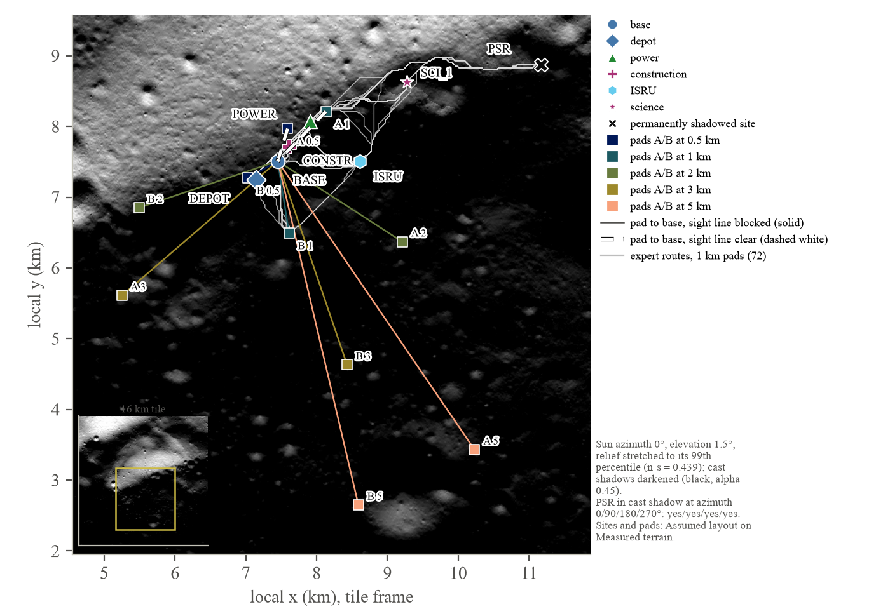
Dynamics. The environment lunar/Descent-v0 is a Gymnasium environment [101] of the terminal descent from NASA's SPLICE braking gate to touchdown. The vehicle is a 3-DoF point mass whose single main-engine thrust acts along a body axis tilted from vertical by two angles, in the formulation of Gaudet, Linares and Furfaro [71] with a rate-limited thrust direction. The state has eleven components: position (x, y horizontal, z altitude above the local ground plane, with the pad centre at the origin), velocity, total mass, the two thrust-axis angles and their rates. The action has three components in [−1, 1]: throttle, which maps linearly between the engine's floor and maximum (the engine stays lit at its floor), and two commanded slew rates for the thrust axis, each limited by the class's rate limit and clipped to the class's tilt limit. Each step integrates 0.2 s (the guidance update interval of [71]; Modelled) with thrust and direction held after the slew (constant acceleration), gravity 1.62 m/s² (Spec; NASA's 2026 touchdown-dynamics paper uses 1.63 [108]) and mass flow T/(Isp g0). Thrust stops when the usable propellant is gone. Touchdown is detected at z ≤ 0 and the contact state interpolated within the step. Episodes end at touchdown, when the vehicle leaves a 3 km box (“lost”; Assumed), or after 750 steps (150 s; Assumed, against a nominal 60–90 s descent).
Classes. Three lander classes are parameterised from flown and specified vehicles (Table 3). The CLPS class is NASA's SPLICE robotic reference lander: 2,000 kg at the gate with a 5,000 N motor (Spec) [81], a 20% throttle floor (Assumed; Apollo's descent engine throttled to 10% [88]), 300 kg of usable propellant at the gate (Assumed) and a specific impulse of 311 s (Assumed; the Apollo descent engine's full-thrust value [88] used as a stand-in for a storable-propellant CLPS engine). The MK1 class is Blue Origin's Blue Moon MK1: a single BE-7 engine with 10,000 lbf (44.5 kN) of vacuum thrust “throttling down to 2,000 lbf” (8.9 kN) (Spec) [119]; the environment uses 44.0 kN. Blue Origin publishes the fuelled mass (21,350 kg) and payload (“up to three metric tons”) but not the dry or landed mass; a rocket-equation bound puts the landed mass at 6–11 t depending on the injection profile, so the 9,000 kg gate mass is Assumed within that band, and the 8.9 kN floor supports 5,487 kg at a thrust-to-weight ratio of one, so MK1 hovers on one engine in every plausible case. Its specific impulse is Assumed at 440 s (the plausible range for a hydrogen–oxygen expander engine is 440–460 s; Blue Origin says only “high specific impulse”). The LARGE class is a parametric 60 t cargo lander of the Starship HLS or Blue Moon MK2 kind, whose dry masses are unpublished: hover thrust-to-weight 1.5 at the gate (Modelled), a 25% floor and 350 s (Assumed). Because at that thrust-to-weight the SPLICE gate lies inside its stopping distance (30² / (2 × 1.8 m/s²) = 250 m), the large class starts 400 m downrange at 25 m/s (Assumed). Tilt limits of 45° and slew limits of 10, 8 and 5°/s are Assumed.
Table 3. Lander classes of the descent environment. Mass and propellant are at the SPLICE gate, not at launch. Hover T/W is maximum thrust over gate weight. Each entry carries its flag; sources are in Appendix A and in lunarsim/lander/classes.py.
| Class | Gate mass (kg) | Propellant at gate (kg) | Thrust max (kN) | Throttle floor | Isp (s) | Hover T/W | Slew limit (°/s) | Gate | Basis |
|---|---|---|---|---|---|---|---|---|---|
| CLPS | 2,000 (Spec) | 300 (Assumed) | 5.0 (Spec) | 20% (Assumed) | 311 (Assumed) | 1.54 | 10 | SPLICE: 500 m slant, 250 m downrange, 430 m altitude, −15 m/s, 30 m/s (Spec) | SPLICE robotic reference [81]; Apollo DPS [88] |
| MK1 | 9,000 (Assumed) | 1,000 (Assumed) | 44.0 (Spec, 44.5) | 8.9 kN, 20% (Spec) | 440 (Assumed) | 3.02 | 8 | as CLPS | Blue Origin BE-7 and Mark 1 [119] |
| LARGE | 60,000 (Assumed) | 5,000 (Assumed) | 145.8 (Modelled) | 25% (Assumed) | 350 (Assumed) | 1.50 | 5 | 400 m downrange, 25 m/s (Assumed) | 12–15 t cargo class, dry mass unpublished [113] |
Initial conditions and randomisation. Every episode starts near the SPLICE robotic-reference gate, which the SPLICE document gives as 500 m slant range at a 60° line of sight with −15 m/s vertical and 30 m/s horizontal velocity, that is about 250 m downrange and 430 m up (Spec) [81], with a random approach azimuth. Dispersions are Gaussian with 1σ of 25 m downrange and crossrange, 20 m in altitude, 2 m/s along track, 1 m/s across track and 1 m/s vertically, and the initial braking tilt is uniform between 10 and 30° (all Assumed). Domain randomisation draws dry mass within ±5%, propellant ±10%, thrust ±5%, specific impulse ±3% and a sensor-noise multiplier between 0.5 and 2 per episode (Assumed; Gaudet and colleagues used ±5% on mass [71]). All draws come from the environment's seeded generator, so a dispersed episode is reproducible from its seed in Python and in the browser.
Touchdown box and tip-over. A touchdown meets the SPLICE box when the vertical speed is at most 2.0 m/s, the horizontal speed at most 1.0 m/s, the thrust-axis tilt at most 6° and its rate at most 2°/s (Spec, 3σ ground rules “derived from past human lunar missions”) [81]. The landed tilt is the local slope under the lander plus 3° per m/s of horizontal speed plus 1° per m/s of vertical speed above the 2.0 m/s limit (Assumed coefficients, chosen so that a landing inside the box on a 5° slope stays below 12° and the IM-1 contact case, a 12° slope with about 0.9 m/s lateral and 2.7 m/s vertical speed, tips over); a landed tilt above 12° is a tip-over (Spec and Measured: Apollo's 12° design limit, Apollo 15 resting at 11° “very nearly violating the tilt limit for safe ascent”, and the ALHAT programme's 12° ascent limit [102]). The local slope is uniform between 0 and 5° (Assumed: a prepared pad to a good natural site). A landing more than 50 m from the pad centre (the SPLICE delivery radius, Spec) counts as off-pad. The outcome record classifies each episode as ok, velocity failure, tilt failure, off-pad, sensor failure, timeout or lost, where a sensor failure is a velocity or tilt failure within twice the vertical limit while the altimeter was wrong by more than 1 m or holding a dropped-out value (Modelled attribution rule, after the IM-2 and ispace patterns [87, 109]).
Sensor model. The observation is built from estimates, not true states. Horizontal position carries a per-episode bias of 1.5 m per axis (1σ, Assumed; NASA's navigation study puts the final error below 4 m with terrain-relative navigation [83]) and per-step noise of 0.5 m (Assumed); velocity carries 0.05 m/s of noise (Spec range 1.7–10 cm/s for the SPLICE velocimeter [81]); altitude carries 0.2 m of noise above 30 m (Assumed). Below 30 m, the regime in which every tip-over or crash since 2023 occurred (Modelled threshold) [84, 87, 109], the altimeter acquires a per-episode bias of 1.0 m (1σ), noise of 0.5 m, and a 5% per-step probability of holding its last value (Assumed). The sensor-noise multiplier scales all of these. The observation has fifteen components: estimated position and velocity, the velocity error against the target field, the two thrust-axis angles and their rates, the propellant fraction and the current thrust-to-weight ratio, each divided by a class-dependent scale (500 m, 30 m/s, 15 m/s, 10 m/s, the tilt and rate limits, 1 and 3) and clipped to [−10, 10]. Observation version 3, which the released imitation policy uses, appends four altimeter-history inputs: the last reading that was not a hold, its age, and the two previous readings (scaled by 30 m, 2 s, 30 m and 30 m), so that a policy can tell a held reading from a true one (Section 6.1); no new random draws are made, version-2 policies run unchanged, and the environment's version is 3.
Reward. The reward family follows Gaudet and colleagues [71, 72]: a velocity field pulls the vehicle towards a hover point 15 m above the target with a 20 m/s reference speed and time constants of 20 s above 15 m and 100 s below, then down at 1 m/s (Modelled). The per-step reward (Table 4) is α times the velocity error, with α multiplied below 30 m by 1 + 3 (1 − z/30 m), plus β times throttle fraction, plus a constant η, plus, below 30 m, a penalty δ on tilt beyond 6° and ζ on attitude rate; at touchdown inside the box a bonus κ (0.5 + 0.5 e−miss/10 m), and outside it a crash penalty per m/s outside the velocity box; −10 for leaving the box. Without a crash cost the shaping makes an early crash a local optimum, and with κ = 10 a fast, lean landing on the edge of the box earned more than a clean one; both were observed in development and are reported in Section 6.1. Five variants are switchable. baseline is the reward of Table 4; no_eta removes the constant and the crash cost (the pure shaping of [71], which reproduces the early-crash pathology); hover_bonus raises η to 0.3 (hovering out the clock pays more than landing: a reward-hacking demonstration); fuel_heavy sets β to −0.5; plume_aware adds −0.02 per step below 30 m and −0.1 times throttle squared below 10 m, penalising time and thrust near the ground. The environment's version number is raised whenever dynamics, observation, reward or outcome definitions change; every policy card records the version it was trained under, and the browser scores each policy with its own version's reward.
Table 4. Reward terms of the baseline variant (the reward of environment version 2, unchanged in version 3, which altered only the observation). All coefficients are Modelled after Gaudet et al. [71, 72], rescaled for this environment; the variants change the entries named in the text.
| Term | Symbol | Value | Applies | Purpose |
|---|---|---|---|---|
| Velocity-field tracking | α · near · |v − vtarg| | −0.05; near = 1 + 3 max(0, 1 − z/30 m) | every step | follow the descent profile; weight ×4 at the ground |
| Control effort | β · T/Tmax | −0.05 | every step | fuel proxy |
| Survival constant | η | +0.01 | every step | stop early crashes; 0.3 in hover_bonus |
| Attitude penalty | δ · max(0, tilt − 6°)/6° | −0.05 | below 30 m | arrive upright |
| Rate penalty | ζ · rate (°/s) | −0.01 | below 30 m | arrive without slewing (2°/s limit) |
| Touchdown bonus | κ (0.5 + 0.5 e−miss/10 m) | +50 | touchdown inside the box | the objective |
| Crash penalty | per m/s outside the velocity box | −5 | touchdown outside the box | remove the early-crash optimum |
| Lost | constant | −10 | leaving the 3 km box | terminate |
The classical law. The comparison controller is a zero-effort-miss/zero-effort-velocity feedback law in the form of Ebrahimi, Bahrami and Roshanian [98], a = 6 ZEM/tgo² − 2 ZEV/tgo, steering to a point 10 m above the target at −1 m/s, followed by a vertical terminal phase that holds −1 m/s while nulling horizontal velocity with a proportional-derivative term, the SPLICE terminal profile (“a vertical descent to the landing site from 30 m altitude to touchdown, at a velocity of 1 m/s downward” [81]). Time to go is re-estimated every step from the vertical channel, tgo = 2(h − 10)/(max(−vz, 0.5) + 1). The law sees the same noisy estimates as the learned policies; because the raw estimates drive its attitude rate past the 2°/s limit, it smooths its velocity estimate, low-pass filters the commanded thrust direction, and holds the direction constant below 3 m. Its constants are Assumed: a vertical speed gain of 1.0 s−1, horizontal position and velocity gains of 0.05 s−2 and 0.6 s−1 in the terminal phase, an exponential smoothing of the velocity estimate with weight 0.3 per 0.2 s step, a first-order filter with weight 0.25 on the terminal-phase thrust direction, a hold below 3 m and a floor of 3 s on the time to go (lunarsim/lander/evaluate.py). It is a feedback law with filter state, which matters for what a memoryless clone can learn from it.
Imitation with DAgger. The learned lander is a clone of the classical law, in a form a memoryless network can learn. The filtered law of the previous paragraph keeps a smoothed velocity and a filtered, held thrust direction that the observation does not carry, and Section 6.1 shows that a clone of it fails for that reason; the expert the released policy imitates is therefore the same ZEM/ZEV and terminal law computed from the current estimate alone, with the tilt-rate command set to 0.25 times the angle error per step and zero below 3 m (Assumed gain), so that the smoothing moves into the vehicle's attitude dynamics. We roll the expert out in the environment with dispersion, domain randomisation and the sensor model on, recording the environment's observations (version 3) and the expert's actions in the environment's own action space (throttle and two slew-rate commands). A multilayer perceptron with two hidden layers of 128 tanh units, the actor of a Stable-Baselines3 PPO model [101], is fitted to those actions by mean-squared error on 800 episodes (266,923 samples) for 25 epochs, and its value head to the discounted Monte Carlo returns of the same episodes so that any later PPO fine-tuning does not start from an untrained critic. Behavioural cloning alone suffers covariate shift: the clone visits states the expert never visited. We therefore apply DAgger [99]: the clone drives two rounds of 300 dispersed episodes, every visited state is labelled with the expert's action, the labelled states are aggregated with the original data set (368,412 and 466,890 samples after the two rounds) and the network is refitted. A label-inconsistency score, the variance of the expert's actions among the ten nearest neighbours of each observation as a share of the total action variance, is recorded per round; Section 6.1 uses it to explain why the first clone, of the filtered law, could not be made to work. That first clone (lander_CLPS_bc_s0) was trained by the earlier recipe its card records, 1,000 expert episodes, 30 epochs and four DAgger rounds of 400 episodes; its run crashed before writing its record, which was reconstructed from the run log, and the card says so. The final clone is exported in the same JSON format as the PPO policies, with its training record in the card.
Proximal policy optimisation. PPO [100] is the comparison learned controller, implemented with Stable-Baselines3 2.9.0, Gymnasium 1.4.0, PyTorch 2.14.1 and NumPy 2.5.3 on CPU [101]. Hyperparameters start from RL Zoo's LunarLander settings and are adapted for this environment: 8 parallel environments, 1,024 steps per environment per update, batch 256, 10 epochs, discount 0.999, GAE λ 0.98, no entropy bonus, initial log standard deviation −0.5, learning rate 3 × 10−4, clip range 0.2; rewards (not observations) are normalised during training, so the exported policy needs no normalisation statistics; a training curriculum optionally starts 30% of resets 5–100 m up near the target (evaluation always starts at the gate). Fine-tuning from a cloned actor uses learning rate 10−4 with linear decay, clip range 0.1 and discount 0.995. Pure Gaudet shaping led to the documented early-crash optimum (a crash at about −25 m/s after about 20 s), fixed by the crash penalty. A constant η = 0.05 made hovering out the episode pay more than landing, so η returned to Gaudet's 0.01 and the hover variant uses 0.3 as a demonstration. Angle commands from a stochastic network arrived slewing at 10–12°/s against the 2°/s limit, which is why the actions are slew rates and the rates are observed and penalised. And with κ = 10 the 2-million-step policy landed fast and lean on the edge of the box (in development evaluations over 200 episodes: median vertical speed 1.90 m/s against the 2.0 limit, 90th-percentile horizontal speed 1.52 m/s against 1.0, 60 kg of propellant against the law's 89 kg, 8.6 s below 30 m against the law's 23 s) and the altimeter noise pushed many of those landings over the limit; fine-tuning from a clone raised the return while the box rate fell. The reward of Table 4 (κ 50, crash −5, near-ground gain 3) is the result, and the lander lab reproduces each of these four failures on demand. Final box rates for every controller are reported in Section 6.1 from the Monte Carlo described next.
Export and runtime. Policies are plain JSON (format lunarsim-policy v1): layer weights and biases, activation, the observation names and scales, the action names and bounds, the deterministic rule (clipped mean) and a training record (algorithm, library version, steps, seed, hyperparameters, reward variant, environment version, wall-clock, git commit). A NumPy forward pass in Python and a hand-written forward pass in the browser must agree with the stored float64 check vectors to 10−6 and with Stable-Baselines3's float32 output to 10−4. No runtime library is needed for a network of this size.
Monte Carlo and outcome tables. Each controller is run through 500 dispersed episodes per class, episode i using seed s0 + i, so that the law and every policy face identical initial conditions, randomisation and sensor histories. The per-episode record is the outcome of the environment: miss vector, touchdown velocity, tilt and rate, landed tilt, local slope, propellant used, time below 30 m, flight time, the pass flag and the failure kind. The table (format lunarsim-landing-outcomes v1) stores every record and a summary with mean, standard deviation, minimum, maximum, median and 90th percentile of each component, following the reporting protocol of [71, 80]. We do not include an open-loop fuel optimum in this version; the law is the only classical comparison. Section 3.6 describes how the engine samples these tables.
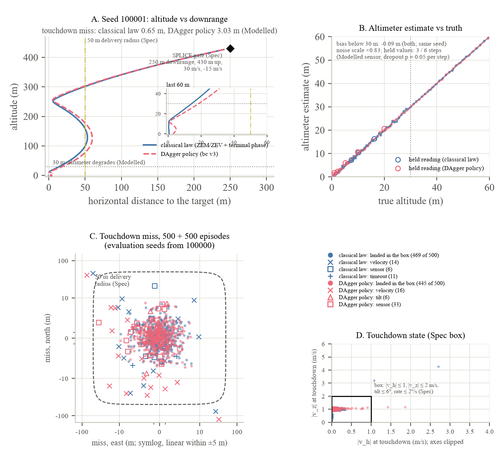
Vehicle and kinematics. The environment lunar/Drive-v0 drives a waypoint route across the terrain pack at a 1 s step. The vehicle is a kinematic bicycle with a 3.0 m wheelbase, ±30° of steering at 20°/s and 0.3 m/s² of acceleration (Assumed), representing an LTV-class rover with cargo at 1,600 kg (Assumed; the LTV carries 800 kg at full performance and about 1,600 kg at reduced performance [2, 5]). Its pose is position, heading and speed; its actions are a steering-rate command and a throttle in [−1, 1], the throttle being a fraction of the current speed cap. The ground speed made good is the wheel speed times (1 − slip). The observation is a body-aligned 32 × 32 patch of the terrain at 5 m spacing (8 rows behind the rover, 23 ahead) with three channels, height relative to the rover over 10 m, slope over 20° and roughness over 1 m, plus five scalars: speed over the cap, heading error to the pursuit point over π, distance to the next waypoint over 100 m, the sun azimuth relative to the heading over 180° (zero at night) and a shadow flag. Roughness is the standard deviation of the 5 m heights about a plane fitted per 20 m cell; the 0.5 m height quantisation gives it a floor of about 0.14 m, and the tile's median is 0.16 m.
Speed by autonomy level. Three autonomy levels cap the moving speed on flat ground in daylight. Autonomous driving is capped at 9.0 km/h, the Apollo Lunar Roving Vehicle's moving average of 8–9 km/h (Measured analogue [41]; vehicle limits are 10–15 km/h). Supervised autonomy is capped at 3.0 km/h with a 60 s approval stop every 500 m (both Assumed; no supervised autonomy has been demonstrated on the Moon, and the 0.5–3.6 km/h modelling range is wide). Earth teleoperation is modelled as command delay plus stop-to-confirm halts and calibrated to the JSC trials [29]. The moving speed between stops is 3.80 − 0.0625 × RTT km/h, the line through the two speeds JSC measured without stops (3.80 km/h at 0 s and 3.55 km/h at 4 s), extended linearly (Modelled). Every L(RTT) metres the rover stops for 30 s (a camera pan to confirm hazards; Assumed, after JSC's observation that more than 95% of navigation at 6–8 s used the pan) plus two round trips (one image, one command). L is solved at each measured delay so that a flat leg reproduces JSC's speed made good exactly: 183, 97, 58 and 48 m at 0, 4, 6 and 8 s (Modelled), and is interpolated linearly between them. Driven step by step by the expert on a flat leg, the environment gives 3.243, 2.576, 2.056 and 1.769 km/h against the measured 3.24, 2.56, 2.03 and 1.76, within 0.1–1.3% (Section 5.2). In teleoperation the action applied at a step is the one commanded RTT seconds earlier (a command queue). On the same flat leg the supervised level makes good 2.71 km/h including its approval stops, close to teleoperation at 4 s; this follows from the Assumed supervised values, not from data.
Slope, slip and the hard limit. Slope caps speed: the factor is 1 up to 10°, 0.5 at 15° (the nominal design limit of VIPER and the LTV, Spec [103]), 0.25 at 20° (the LTV, RACER and Endurance requirement, Spec) and zero beyond (Assumed shape; JSC crews drove the 7 and 15° scenarios slowly). Slip along the direction of travel comes from Hu and colleagues' continuum simulations of a 440 kg VIPER-class rover in lunar gravity on GRC-3 simulant, validated against NASA Glenn's single-wheel and rover tests [91], digitised from their Figure 13 and parameterised by the soil's friction angle (Modelled, read from the figures to about ±0.03): on medium soil (friction angle 42°) slip is 0.04, 0.13, 0.30, 0.67, 0.86, 0.92 and 0.96 at 0, 5, 10, 15, 20, 25 and 30° of slope; on firm soil (47.8°) 0.01, 0.03, 0.08, 0.18, 0.35, 0.76 and 0.88; on weak soil (37.8°) 0.12, 0.32, 0.74, 0.88, 0.93, 0.95 and 0.97. The friction angle is sampled per terrain cell uniformly between 37.8 and 47.8° (Assumed) and slip is interpolated linearly between the curves and between slopes. On medium soil the traditional 20% slip mobility limit is reached at about 7–8° and the 80% dig-in threshold at about 18–19°; on firm soil at about 16 and 27°; on weak soil at about 3 and 12°. Sustained slopes above about 15° are therefore effectively impassable for a cargo rover heavier than VIPER, which is consistent with the hard limit above. Downhill slip is held at the flat-ground value (Assumed). These are simulation results for VIPER prototypes on GRC simulants, and VIPER grew to 520 kg; a 1,600 kg rover is outside the data; and no vehicle heavier than Yutu-2 has measured slip in lunar gravity. The in-situ Yutu-2 values of 10.5–19.7% on gentle slopes (Measured) [107] fall inside the medium-soil curve's range for 4–8° of slope.
Energy. Traction energy per metre is the rolling and grade work at the wheels divided by (1 − slip), because the wheels turn farther than the ground made good. The rolling term is calibrated to the Apollo Lunar Roving Vehicle: 1.58–1.67 Ah/km at 36 V, that is 57–60 Wh/km for about 700 kg of vehicle, crew and payload on flat to moderate terrain (Measured) [41]. Taking 58.5 Wh/km at 700 kg on flat ground with the flat-ground slip gives an effective rolling coefficient of 0.178 (Modelled), which includes drivetrain losses because the Apollo figure is battery current. Grade work is divided by a drive efficiency of 0.7 (Assumed) and downhill grade work is not recovered. For the 1,600 kg rover this gives 134 Wh/km on flat ground (Assumed, by applying the Apollo coefficient to a vehicle twice as heavy). Hotel power while driving is not included. Version 2 assumed 350 Wh/km for the same class; the start of Section 6 reports what the change does to the version-2 reference cell, and the anchor against Chen and colleagues' permanently-shadowed-region round trips is in Section 5.2.
Lighting. The JSC lighting study [94] supplies two penalties. Driving up-sun, which we define as a heading within 45° of the sun azimuth (Assumed), forces tacking of ±20–30° (Measured); we lengthen the path and slow the speed made good by 1/cos 25° = 1.10. In shadow or at night the speed factor is 0.5 and the intervention hazard doubles (both Assumed; the study found artificial lights useless while lit terrain was in view and shadowed slopes “very difficult” to judge). Shadows are cast on the 20 m grid for the sun azimuth of the case (0, 90, 180 or 270°, or night) at 1.5° elevation; 65% of the tile is in shadow at azimuth 0.
Interventions. An intervention is raised when the rover leaves a 25 m corridor either side of the planned path, enters a slope above the 20° hard limit, stalls for 30 s with throttle applied or at slip above the dig-in threshold, or crosses a cell whose roughness exceeds 0.5 m (the collision proxy; all Assumed). Each intervention costs the round-trip time plus a recovery time of 300 s (Assumed) and puts the rover back on the route at the closest point, stopped. The autonomy percentage reported by the rover lab is 1 − interventions × (RTT + 300 s)/elapsed time, which replaces the 6 s of the road-driving metric [93] with the cost an Earth operator actually pays; interventions per kilometre is the quantity the engine uses.
The expert. A scripted expert drives every leg: an A* search over a 20 m cost grid whose cell cost is the time to cross it at the autonomy level's cap, slowed by the slope and lighting factors, with cells above the hard slope limit impassable (the straight-line heuristic at the flat cap is admissible because every factor is at most one), followed by pure-pursuit tracking with a 5 m look-ahead. Routes do not depend on the autonomy level, because every level scales the cost grid uniformly; they do depend on lighting. Between the base and the shadowed crater the route is 4.28 km for a straight-line distance of 3.96 km.
The driving tables. For every ordered pair of the engine's nine nodes (the seven sites and the two pads), with pads taken at each of the five standoffs (182 legs), and for each of five lighting cases, the expert's route is planned once and then driven by a fast leg integrator at 5 m resolution for each of three autonomy levels, four round-trip times (0, 4, 6 and 8 s) and 20 seeds. The integrator uses the same physics functions as the step environment: wheel speed is the cap times the slope and lighting factors times a per-run lognormal factor with σ = 0.10 (Assumed run-to-run variability); ground speed applies the slip of the along-track grade; energy sums the traction model; stops follow the cadence of the level; and interventions are a Poisson draw with rate equal to the integral along the route of a hazard per kilometre of 0.05, 0.10 and 0.20 for teleoperation, supervised and autonomous driving, plus 1 per km on slopes above 15° and 1 per km over rough cells, doubled in shadow (Assumed; no interventions-per-kilometre data exist for any lunar rover). Leg time and energy are stored as lognormal fits and the intervention rate as a Poisson λ, excluding intervention time, which the engine adds when it draws the count. The table (format lunarsim-driving v1) is 4 MB and takes 276 s to build. A test checks the integrator against the step environment on a flat leg (exact agreement in moving time and stops); the browser's rover lab drives any leg step by step and shows the table's prediction beside the live drive. With commands arriving 4 s late the expert weaves, so a live teleoperated drive covers about 11% more distance than the route and uses about 16% more energy than the table, which assumes the route is followed exactly; the lab says so.
The learned driver. The intervention hazard above is the one Assumed quantity in the tables that a learned model could replace with a measured rate. The design is a convolutional network in the PilotNet lineage [93] whose input is the 32 × 32 × 3 heightmap patch and the five scalars rather than camera pixels, trained by behavioural cloning of the expert's steering-rate and throttle on every leg under every lighting case, corrected with DAgger as the lander clone is, and exported to ONNX (opset 17) so that Python and the browser run the same weights; its interventions would be counted by the same four rules, and its rate per kilometre by autonomy level and lighting would replace the hazard model in the tables. The trainer is implemented, but the driver was not trained in time for this version, so every experiment of Section 6 uses the scripted expert's tables and the Assumed hazard, and the learned driver is future work (Section 7.5).
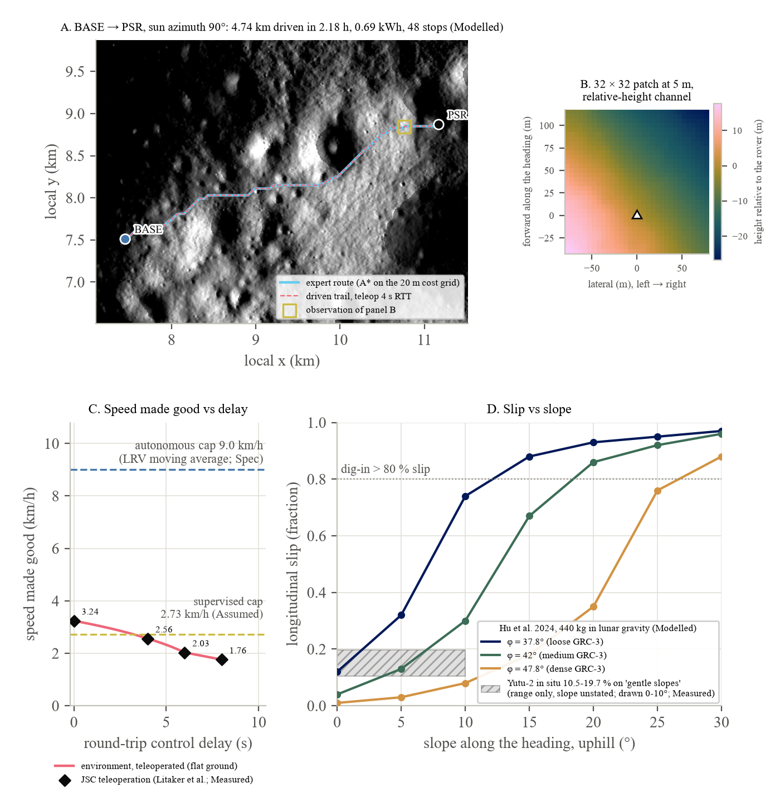
We do not model plume physics. The module turns each landing into a keep-out window of radius R around the pad for the interval [tland − T, tland + T], and applies three rules. No job may start or end at a pad while its window is active; the dispatch filter removes such candidates. A committed job whose vehicles would leave or reach the pad inside the window is held where it stands until the window closes; each hold counts as a stand-down and its vehicle-hours are logged. At the start of a window, idle vehicles inside R drive to the pad's shelter, the nearest site outside R whose line of sight to the pad is blocked by terrain, or, if none is blocked, the nearest site outside R; each evacuation counts as a stand-down with its drive hours. The marketplace's anticipatory staging for a landing whose window opens within 48 h stages at the shelter instead of the pad. At the 1 km standoff the shelters are the science site for pad A and the base for pad B, both with blocked lines of sight. The window applies to every lander class alike; the module does not scale R with the lander in this version, although ejecta mass does: with the thrust2.5 scaling of [96] the rough upper bounds are about 0.7 t of ejecta for a 3 t lander, 40 t for a 15 t lander and 4,600 t for a 100 t lander (Modelled bound; no source gives these directly and the author of the scaling calls the large-lander figure “likely an overestimate”), so a class-dependent R is a natural extension.
Both parameters are swept, for stated reasons. The radius is swept because the quantity that would predict it, the particle size and velocity distribution of the ejecta sheet, is what NASA says it lacks: the 2023 landing paper calls predictions “largely qualitative and uncertain” [60], the December 2025 architecture document lists in-situ particle velocity as an open data gap [115], and the only in-situ instrument has produced no erosion volume [111]. The levels, 0.2, 0.5, 1, 2 and 3 km, bracket NASA's “more than 1,000 m” band [2], the 2 km heritage radius [64] and Constellation's 2.2 km [96], and extend below them towards the berm-protected layouts of [62]. The stand-down time, by contrast, has a physical floor that we can compute, because the Moon has no atmosphere and ejecta is ballistic. For vacuum flight at lunar gravity, every particle slow enough to land within 5 km of the pad (up to about 100 m/s at launch angles up to 10°, or up to 300 m/s at 3°) is on the ground within about 90 s of ejection; the 1 km/s dust sheet passes a rover 1–5 km away within 1–5 s and lands tens to hundreds of kilometres away; only the sparse near-escape fraction returns over hours (Modelled; the table is in Appendix D). A two-minute no-drive window after engine cut-off therefore covers the return of everything that can reach the base. No published operations guidance gives a window, and the documented mitigations are positional (berms, terrain, stowed arrays, optics facing away) rather than temporal [105, 118]. We sweep T over 0.033 h (two minutes, the ballistic floor itself), 0.1, 0.5, 2 and 6 h, the longer values representing operational conservatism, confirmation of a safe landing and clearance of the pad (Assumed), and we report the cost of each. The ballistic floor is what makes a short window defensible; the long windows are what current operations would probably do.
Figure 2 shows the data flow. Five optional scenario fields switch the models on: terrain (the pack id; site positions and lines of sight), pad_standoff_km (which pad set), landing_model (which outcome table, the dispersion scale, the pad radius and the failure policy), plume (R, T) and autonomy_model (which driving table). With all five unset the engine never builds any of these and runs the version-2 code; the comparison CSV of the version-2 reference scenario is byte-identical with and without the version-3 code (Section 5.1). When they are set, the engine behaves as follows.
Legs. Dispatch rules and bids plan with the tables' means. When a job is committed, each of its legs draws a time and an energy from the leg's lognormal fit and an intervention count from its Poisson rate, all from the operations stream, and adds the count times (RTT + 300 s); results therefore do not depend on how often a mechanism evaluates a plan. The table is indexed by the round-trip time nearest to the scenario's (ties go to the lower value, so the 5 s default reads the 4 s column) and by the lighting bin of the simulated sun, whose azimuth advances through 360° over the synodic month and is rounded to the nearest of 0, 90, 180 and 270°, or “night” when the scenario's night is on. The tables describe the 1,600 kg LTV-class rover; another class's leg time is scaled by the ratio of nominal speeds (and by the empty-speed and team multipliers of version 2), and its energy by the ratio of its Wh/km to the table rover's 134 Wh/km and by version 2's load factor (Modelled mapping). A leg missing from the table falls back to the version-2 model.
Landings. At each landing the engine draws one record uniformly from the outcome table of the lander's class and controller, multiplies the miss vector by the scenario's dispersion scale σscale, and acts on the result. If the record's failure kind is velocity, tilt, sensor, timeout or lost, the landing has failed: under the default policy the cargo is lost (counted in landed mass, removed from ready mass, and logged as cargo lost), or under the alternative policy every item's ready time is delayed by a recovery time. If the landing succeeded but the scaled miss exceeds the pad radius (50 m by default, the SPLICE delivery radius), it is off-pad: every job that picks up from that lander drives twice the miss distance extra over unprepared ground at half speed and double energy (Assumed), logged as off-pad kilometres. Otherwise the cargo is released at the pad as in version 2. The scale σscale is the dispersion sweep variable of E17, set so that the scaled table's mean miss equals a stated level; Section 6.1 maps the levels onto the 50 m target, the 100 m requirement and the demonstrated misses through the table's own miss distribution.
Keep-out. Each landing adds its window at scheduling time, so the dispatch filter, the holds, the evacuations and the staging rule of Section 3.5 see every window in advance, as a real operator would from the published landing schedule. A PLUME event at the window's opening triggers the evacuation and a dispatch call. The trace records every landing's position, miss, tilt and outcome, every window, every shelter and every vehicle's autonomy level, and the browser's world viewer replays it on the terrain.
One simulated year of the Phase-2 reference scenario takes 0.196 s with the models off and 0.326 s with all of them on (marketplace, caches warm), so the sweeps of Section 4 are affordable. The browser's logistics engine stays at version 2; the version-3 models run in Python, and the browser replays their traces and runs the two physics models themselves in the lander and rover labs.
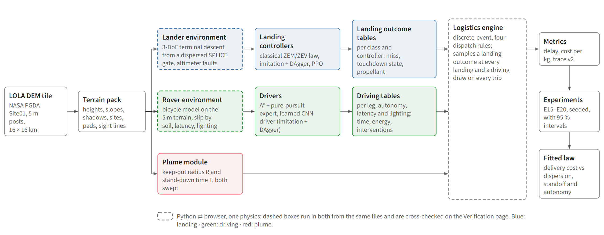
Six suites extend the fourteen of version 2 (Table 5). E15 and E16 produce no simulated years: E15 summarises the lander outcome tables and compares each learned controller with the law on the same dispersed episodes; E16 validates the driving tables against the JSC speeds, against the integrator-versus-environment check and against Chen and colleagues' energy band, and reports interventions per kilometre by autonomy level and lighting. E17 sweeps the dispersion over seven levels of the implied mean miss, the classical table's own 2.9 m and 10, 50, 100, 118, 300 and 1,500 m (σscale 1, 3.4, 17.2, 34.5, 40.7, 103 and 517), anchored to SLIM, the Architecture Definition Document's target, NASA's 50–100 m band and the HLS requirement, Blue Ghost, IM-2 and IM-1, crossed with a pad radius of 25, 50 or 100 m and with the standoff over the five pad sets, for the in-house and marketplace rules, in four scenarios: the Phase-2 default fleet of six vehicles, the Phase-2 fleets of four and of two vehicles, and the Phase-3 default fleet of nine. E18 sweeps the keep-out radius over five levels and the stand-down over five (0.033, 0.1, 0.5, 2 and 6 h), plus the matching no-keep-out cell, for all four dispatch rules, with the night on (dark fraction 0.15) and off, at the 1 km and 3 km standoffs, in three scenarios: Phase-2 default, Phase-2 with four vehicles and Phase-3 default. E19 replaces every vehicle's autonomy level in the Phase-2 fleets of two, four, six and eight vehicles with teleoperation at 4, 6 and 8 s of round-trip time, supervised autonomy or full autonomy, with max(2, n/2) Earth operators, under the in-house and marketplace rules. E20 fits the law to the E17 and E18 rows and computes the pad-siting trade. E17 and E18 use the classical law's outcome tables, so that the dispersion sweep is a clean scaling of one distribution; the learned controllers' tables enter through E15 only, and no learned-policy table was run through the standoff sweep in this version. E17 has 840 cells, E18 1,248 and E19 40, that is 63,840 simulated years at 30 seeds each; all ran to completion (Section 5.4).
Table 5. Version-3 experiment suites. Scenarios are version 2's: P2-default has six vehicles (three LTVs, a hauler, a micro-rover and a teleoperated LTV, three owners plus NASA), P3-default nine, and the P2 fleet variants of two, four, six and eight vehicles are those of suite E2. All E17–E19 cells use the terrain legs and classical landing tables; the reference cell is σscale 1, standoff 1 km, no keep-out.
| Suite | Question | Factors and levels | Mechanisms | Cells × seeds | Validation anchor |
|---|---|---|---|---|---|
| E15 Lander Monte Carlo | What do the controllers produce? | Class (CLPS, MK1, LARGE) × controller (law, DAgger clone, PPO baseline and reward variants) × sensor model on; 500 episodes | none | tables, no simulation | Gaudet protocol [71, 80]; demonstrated misses of SLIM, Blue Ghost, IM-1 and IM-2 as the plausibility band |
| E16 Driving tables | Are the tables credible? | All 182 legs × 3 autonomy levels × 4 round-trip times × 5 lighting cases; interventions per km | none | tables, no simulation | JSC speed made good at 0, 4, 6 and 8 s [29]; Chen 0.4–4.4 kWh round trips scaled by mass [92] |
| E17 Dispersion × standoff | RQ6 | implied mean miss ∈ {2.9, 10, 50, 100, 118, 300, 1,500} m × pad radius ∈ {25, 50, 100} m × D ∈ {0.5, 1, 2, 3, 5} km × {P2-default, P2-4, P2-2, P3-default} | in-house, marketplace | 840 × 30 | NASA bands >1,000 m, ≤5,000 m [2]; 50 m target [115], 100 m requirement [82] |
| E18 Plume keep-out | RQ7 | R ∈ {0.2, 0.5, 1, 2, 3} km × T ∈ {0.033, 0.1, 0.5, 2, 6} h plus no keep-out × night {0.15, 0} × D ∈ {1, 3} km × {P2-default, P2-4, P3-default} | all four | 1,248 × 30 | Wittal impacts against distance for ordering [89]; the ballistic floor of Section 3.5 |
| E19 Autonomy × fleet | RQ8 | Fleet of 2, 4, 6, 8 × {teleop 4 s, 6 s, 8 s; supervised; autonomous}; operators max(2, n/2); standoff 1 km | in-house, marketplace | 40 × 30 | LTV requirement of 6 km threshold and 8 km goal per 24 h of remote driving [29] |
| E20 The law and pad siting | RQ6, RQ7 | OLS fit of the E17 and E18 rows (Section 4.2); hauling cost plus amortised pad cost against D | pooled and per mechanism | fit, no simulation | Metzger and Autry pad cost [66] |
Every cell is replicated over 30 seeds. As in version 2, seed s seeds the demand stream with s and the operations stream with s + 100,003, so every mechanism and every level of every factor faces the same landings, manifests, faults and, now, the same landing-outcome and leg draws in sequence: common random numbers across the whole design. We report cell means with 95% confidence intervals across seeds and, for every comparison that matters, the paired difference against the reference cell of the same scenario, mechanism and night setting (σscale 1, standoff 1 km, no keep-out) on the seeds the two cells share, with a percentile bootstrap over seeds (1,000 resamples) for the interval. We do this rather than compare raw means because a pilot with five seeds showed a 1 km keep-out apparently reducing delay; with 30 seeds the difference was inside the interval (6.19 ± 2.5 against 5.78 ± 2.1 h), and the small dip was the evacuation moving pad-parked vehicles towards the base. That pilot also showed that at Phase-2 demand with six vehicles the fleet is 3% utilised, so a keep-out is nearly free there; the design therefore includes the Phase-3 fleet and the two- and four-vehicle Phase-2 fleets, where utilisation is high enough for constraints to bind. No cell was replicated beyond 30 seeds in this version; the sequential procedure of version 2 [59] is in the repository, and Section 7.5 says where it would be worth running.
The fit of E20 is ordinary least squares, pooled over the E17 and E18 rows (one row per simulated year) for three responses: the natural logarithm of the mean urgent delay (so that 100(eb − 1) is the percentage change per unit), the share of urgent items delivered within 24 h, and the cost per kilogram moved. The regressors are ln σscale, D, R, T, the night fraction, a fleet-load covariate u equal to the mean utilisation of the reference cell of the same scenario, mechanism and night setting (a group-level measure of load, not the row's own utilisation), and the interactions ln σ × D, R × T, R × u, T × u, D × u and ln σ × u, with mechanism dummies (in-house as the base) in the pooled fit and separate fits per mechanism without them. Columns constant in the data are dropped and listed. Confidence intervals are a percentile bootstrap over seeds: seeds are drawn with replacement and every row of a drawn seed enters the normal equations with that seed's multiplicity, so the intervals respect the common-random-number pairing. Because the fleet's capital dominates the version-2 cost and energy is not priced there, the standoff shows in delay and kilometres but barely in dollars; we therefore also fit the cost per kilogram with an energy price p ∈ {0, 500, 2,000, 5,000} $ per kWh delivered on the surface added as p × energy / delivered mass (Assumed, swept; no source gives a surface energy price). The pad-siting table adds to the hauling cost an amortised pad construction cost of $130, $229 or $548 million at transport prices of $10,000, $100,000 and $300,000 per kilogram (Metzger and Autry [66]; Spec) over a ten-year life (Assumed); in this version the pad cost does not depend on standoff, so it shifts the total and not the minimum-cost standoff, and the table shows the scale of the two terms side by side.
The primary metrics are version 2's: the mean and 90th-percentile delay of urgent (priority 1) items from release to delivery, the share of urgent items delivered within 24 h, the delivered share of mass, the cost per kilogram moved and per landed kilogram, operator hours and the revenue Gini. Version 3 adds, per simulated year: plume stand-downs (jobs held at the keep-out boundary plus vehicles evacuated to a shelter) and stand-down vehicle-hours; repositions and reposition kilometres; mean landing miss, off-pad landings, failed landings, cargo lost and off-pad extra kilometres; interventions and intervention hours; energy; and mean propellant residual at touchdown. In the lander Monte Carlo the metrics are the box rate (the share of episodes meeting the touchdown box with no tip-over and inside the pad radius), the failure counts by kind, and the mean, standard deviation and extremes of miss, touchdown velocity, tilt, propellant and time below 30 m. In the driving tables they are speed made good, energy per kilometre and interventions per kilometre by leg, autonomy level, round-trip time and lighting.
The thirteen verification checks of version 2 (four kinematic and structural identities, four reproductions of the JSC teleoperation speeds, two conservation identities, the stranding rule, common random numbers and the M/G/1 queueing reference) still pass, with a maximum relative error of 0.5% [113]. A fourteenth check asserts that the version-3 code leaves version 2 untouched: the comparison CSV of the Phase-2 reference scenario over three seeds is value-identical on every version-2 column to the file written before any version-3 code (canonical MD5 e8d84022e4aa41ea389b9b1c15cadd22; the raw digest ebb9e0dea68005cddf4ab4d2bda1bfdd changed only because the file gained the two cost-per-landed-kilogram columns of Section 6), and the Phase-2 four-vehicle seed-3 trace is byte-identical. Sixteen further tests cover the engine's use of the new models: terrain legs replace the slope-class model only when a table exists for the leg, a failed landing removes exactly its cargo from the ready mass and keeps it in the landed mass (conservation with the new lost term), an off-pad landing adds exactly twice its miss to the pickup legs, no job starts or ends at a pad inside a window, and evacuated vehicles reach their shelter before the landing.
Four checks compare the new models with things they did not produce. First, the teleoperation calibration: driven step by step by the expert on a flat leg of at least 500 m, the environment's speed made good is 3.243, 2.576, 2.056 and 1.769 km/h at 0, 4, 6 and 8 s, against the measured 3.24, 2.56, 2.03 and 1.76 km/h [29], errors of +0.1, +0.6, +1.3 and +0.5% with a 5% tolerance; E16 repeats the check on the committed tables after every rebuild (3.262, 2.570, 2.031 and 1.764 km/h through the tables' own integrator, errors of +0.66, +0.38, +0.07 and +0.20%). Second, the leg integrator agrees exactly with the step environment in moving time and stop count on the flat leg, and the slip curves are monotone in slope. Third, the energy anchor: the base-to-crater round trip (8.95 km by the daylight route at sun azimuth 0°; 8.57 km at 90° and at night, where no up-sun tacking is charged) under autonomous driving uses 1.77 kWh by day and 1.89 kWh at night against Chen and colleagues' 0.4–4.4 kWh for a 500 kg rover over 24–100 km round trips [92], which scales by mass to 1.3–14.1 kWh for our vehicle; the comparison is loose, because Chen counts terramechanics work only over much longer paths while our calibration includes drivetrain losses, so per kilometre our figure is several times theirs. Fourth, the classical law is feasible in the environment it is compared in: in development runs of 500 dispersed episodes with the full sensor model it met the box in 93.8% (CLPS), 93.0% (MK1) and 97.0% (LARGE) of episodes with mean misses of 2.4–2.9 m, the remaining failures being timeouts (2.2, 3.2 and 1.0%) and altimeter-attributed near-misses; the final figures are in Section 6.1. The PPO toolchain was checked on Gymnasium's LunarLander-v3 with RL Zoo's settings before any descent training: 246.9 ± 21.2 over 20 deterministic episodes after one million steps in 1,368 s on this machine, against the published 242–271.
Table 6. Driving-table checks (E16) on the committed tables (driving-v1). Speed made good through the tables’ own leg integrator on a flat 2 km leg against the JSC teleoperation measurements [29] (Measured; tolerance 5%); the same on the flattest real leg of at least 500 m (construction site to depot, 662 m, 5.8° maximum slope, sun azimuth 270°), shown for context against the flat-ground measurements; and the base-to-crater round-trip traction energy (8.95 km by day, 8.57 km at night) against Chen et al.’s 0.4–4.4 kWh for a 500 kg rover [92] (Modelled) scaled by mass to 1,600 kg (Assumed linear). Supervised and autonomous rows do not depend on the round-trip time and are shown once.
| Check | Leg | Lighting | Autonomy | RTT (s) | Simulated | Reference | Error or band | Result |
|---|---|---|---|---|---|---|---|---|
| Speed made good, calibration | flat 2 km | none (flat) | teleoperation | 0 | 3.262 km/h | 3.24 km/h | +0.66% | pass (within 5%) |
| Speed made good, calibration | flat 2 km | none (flat) | teleoperation | 4 | 2.570 km/h | 2.56 km/h | +0.38% | pass (within 5%) |
| Speed made good, calibration | flat 2 km | none (flat) | teleoperation | 6 | 2.031 km/h | 2.03 km/h | +0.07% | pass (within 5%) |
| Speed made good, calibration | flat 2 km | none (flat) | teleoperation | 8 | 1.764 km/h | 1.76 km/h | +0.20% | pass (within 5%) |
| Speed made good, calibration | flat 2 km | none (flat) | supervised | any | 2.711 km/h | – | – | no measurement |
| Speed made good, calibration | flat 2 km | none (flat) | autonomous | any | 8.939 km/h | – | – | no measurement |
| Speed made good, real leg | CONSTR to DEPOT, 662 m | sun 270° | teleoperation | 0 | 3.009 km/h | 3.24 km/h | -7.12% | context |
| Speed made good, real leg | CONSTR to DEPOT, 662 m | sun 270° | teleoperation | 4 | 2.386 km/h | 2.56 km/h | -6.82% | context |
| Speed made good, real leg | CONSTR to DEPOT, 662 m | sun 270° | teleoperation | 6 | 1.884 km/h | 2.03 km/h | -7.19% | context |
| Speed made good, real leg | CONSTR to DEPOT, 662 m | sun 270° | teleoperation | 8 | 1.678 km/h | 1.76 km/h | -4.67% | context |
| Speed made good, real leg | CONSTR to DEPOT, 662 m | sun 270° | supervised | any | 2.469 km/h | – | – | no measurement |
| Speed made good, real leg | CONSTR to DEPOT, 662 m | sun 270° | autonomous | any | 7.934 km/h | – | – | no measurement |
| Round-trip energy | BASE to PSR and back | day | autonomous | 4 | 1.77 kWh | 1.28–14.08 kWh | band, mass-scaled | inside |
| Round-trip energy | BASE to PSR and back | night | autonomous | 4 | 1.89 kWh | 1.28–14.08 kWh | band, mass-scaled | inside |
| Round-trip energy | BASE to PSR and back | day | supervised | 4 | 1.83 kWh | 1.28–14.08 kWh | band, mass-scaled | inside |
| Round-trip energy | BASE to PSR and back | night | supervised | 4 | 1.86 kWh | 1.28–14.08 kWh | band, mass-scaled | inside |
| Round-trip energy | BASE to PSR and back | day | teleoperation | 4 | 1.84 kWh | 1.28–14.08 kWh | band, mass-scaled | inside |
| Round-trip energy | BASE to PSR and back | night | teleoperation | 4 | 1.77 kWh | 1.28–14.08 kWh | band, mass-scaled | inside |
Version 2's cross-implementation check compared 24 metric cells of the discrete-event engine between Python and JavaScript. The version-3 engine features run in Python only, so that check does not extend to the E17–E19 cells; what the browser does reproduce, line by line, is the two physics models and the classical law, and we check them with shared fixtures to a tolerance of 10−6. For the lander, 200 physics steps per class with saturated commands and propellant run-out agree to a maximum state difference of 8.5 × 10−14 with thrust exact; 20 samples of the target velocity field agree to 2.0 × 10−15; and full deterministic episodes (dispersion and sensors off, seed 0) with the PPO policy choosing the actions agree in step count (215, 251 and 234 steps for the three classes), in every observation exactly, in state to 1.7 × 10−13, in reward to 2.8 × 10−13 and in outcome. The policy check vectors agree to 1.7–2.0 × 10−7, the float32 precision of the training library, and the browser re-scores a logged episode under its reward to the cent (−48.20 against −48.20). For the rover, terrain heights, slopes and cells agree to nine decimals, the four cast-shadow grids are identical in all 640,000 cells, and roughness agrees to 6.7 × 10−16; the flat-leg teleoperated drives are identical step for step at every round-trip time; the A* routes from the base to the crater are identical cell for cell for every lighting case; the integrator's time, energy and intervention rate agree to about 10−14; and the autonomous step-by-step drive of the 4.28 km leg agrees to 6 × 10−16 in daylight and 5 × 10−15 at night. One documented difference remains: the teleoperated drive of that leg at night with a 4 s delay agrees to 10−9 for 5,476 steps and then diverges, by up to 38 m mid-leg, before both implementations finish with identical step counts, times and intervention counts and energies within 0.006% (616.66 against 616.62 Wh). The cause is one-unit-in-the-last-place differences between the two platforms' sine, cosine and arctangent, which neither rounds correctly, amplified by the steering feedback through the 4 s command delay. It is a numerical, not a logical, difference, and the Verification page reports it rather than hiding it. Randomised browser episodes use a different generator from NumPy's with the same distributions, and the pages say so; only deterministic episodes are compared exactly.
Training and tables were run on an 8 GB laptop with a four-core CPU, which bound the design: PPO on the descent environment runs at about 100,000 steps per minute with eight environments, the driving tables take 276 s, and a 2-million-step PPO run was once killed by memory pressure at 460,000 steps while other work ran. The released imitation policy took 655 s to train on one process (800 expert episodes, 25 epochs, two DAgger rounds of 300 episodes); the committed PPO baseline records 9,685 s of wall-clock for 2,007,040 steps, with a stall under memory pressure between 250,000 and 500,000 steps (the two 507,904-step variants took 314 and 464 s); each 500-episode Monte Carlo took 14–29 s. The simulation suites ran on the same laptop with three worker processes: E17 (840 cells), E18 (1,248 cells) and E19 (40 cells) all completed at 30 seeds, 63,840 simulated years in all, at 0.2–0.33 s per simulated year per process, about three to four hours of wall-clock; E18's marketplace keep-out cells were run twice, the second time after the staging rule changed (Section 6.5). Every run record stores the engine version, git commit and dirty flag, the scenario hash, the policy and table hashes and the seeds per stream, and every result CSV is resumable by cell and seed.
Every number in this section that the testbed produced is Modelled; we flag only the measured and specified anchors it is compared with. Cell values are means over 30 seeds with 95% confidence intervals (1.96 standard errors), and every comparison is a paired difference on common seeds with a percentile seed-bootstrap interval of 1,000 resamples (Section 4.2). All three simulation suites ran to completion: E17 with 840 cells (seven implied-mean-miss levels anchored to flown and specified landers, three pad radii, five standoffs, four fleets, two dispatch rules), E18 with 1,248 cells (five radii by five stand-downs plus the no-keep-out cell, two night settings, two standoffs, three fleets, four rules) and E19 with 40, that is 63,840 simulated years at 30 seeds each; E20 fits its law to the 62,640 years of E17 and E18. The version-2 findings are not repeated: with the version-3 fields unset the engine reproduces version 2 byte for byte (Section 5.1), so nothing in them changed. What changed is the ground under the base. The reference cell of E17 (Phase-2 default fleet, classical landings, 1 km standoff, 50 m pad, no keep-out) is the version-2 Phase-2 cell on real terrain, and its marketplace mean urgent delay is 6.71 ± 2.31 h against the settled version-2 value of 6.42 h on the tangent plane (in-house 15.42 ± 4.33 h against 14.62 h). The difference is the terrain legs: the ridge layout puts every base site closer than version 2 did (0.26–3.96 km against 0.6–5 km) while slopes, slip and confirmation stops make each kilometre slower. Energy was not priced in version 2's cost, so the change from 350 to 134 Wh/km (Section 3.4) does not move the cost per kilogram moved; it moves only the energy column, which Section 6.7 prices for the first time.
One version-2 number is corrected here. Version 2 reported the cost per kilogram of landed cargo as about $5,100 for the Phase-2 four-vehicle marketplace cell and about $5,000 for the Phase-3 default fleet. That figure divided the fleet and operator cost by delivered mass minus bulk released, which keeps return items in the denominator and subtracts lots that were released but not delivered. The exact metric, the same cost over the delivered mass of items that came down on a lander (bulk surface flows and return items excluded), computed as the ratio of means over 30 years with a seed-bootstrap 95% interval because single years with one landing make per-year ratios unstable (experiments/phase3/cost_per_landed_kg.py; results/table_cost_landed_kg.csv), gives $5,525 [4,436, 7,298] per landed kilogram for the Phase-2 four-vehicle marketplace cell and $5,630 [4,892, 6,673] for the Phase-3 default marketplace cell, against $10,019 [8,128, 12,904] and $7,199 [6,122, 8,682] in-house and $6,102 and $6,707 for the two other pooled rules. The approximation ($5,072 and $5,048 for the two marketplace cells) under-read by 8–10%: “about $5,000” becomes “about $5,500”. The cost per kilogram moved is unchanged ($306–314 at Phase 2, $264–267 at Phase 3), and so is every conclusion that rested on it. The engine now logs both quantities.
The law. The classical ZEM/ZEV law with its vertical terminal phase meets the SPLICE box in 93.8% of 500 dispersed CLPS episodes (Wilson 95% interval 91.3–95.6%), in 93.0% (90.4–94.9%) for the MK1 class and in 97.0% (95.1–98.2%) for the large class, with the full sensor model on (Table 7, Figure 5). Its misses are small: a mean of 2.9, 2.5 and 2.4 m and a 90th percentile of 4.7, 4.4 and 4.4 m for the three classes. Two CLPS episodes of 500 landed beyond the 50 m delivery radius (the largest miss was 80 m); no MK1 or large episode did. Its failures are of two kinds. Timeouts (11, 16 and 5 of 500) are episodes in which the law, steering a dispersed start to a point 10 m above the target and then down at 1 m/s, has not touched down when the 150 s cap ends. Sensor-attributed near-misses (6, 19 and 9) are landings a little outside the velocity box while the altimeter was wrong or held below 30 m. Velocity failures outside that regime are 14, 0 and 1. The median vertical speed at touchdown is −1.00 m/s for all three classes; propellant from the gate is 89, 298 and 2,297 kg; the time below 30 m is 23–25 s. The law's tables were generated under environment version 1. Versions 2 and 3 changed the reward and the observation, neither of which the law uses, so the tables stand, and the engine samples them in E17–E19.
Table 7. The lander controllers on the same dispersed episodes (seeds 100,000 upward, sensor model on). Rows are from the released outcome tables (data/policies/outcomes_*.json, summarised in results/table_E15.csv) except the two marked as development runs, whose policies were not saved; their values are the development evaluations recorded in the project log. Box rate is the share of episodes meeting the SPLICE touchdown box without tip-over, with its Wilson 95% interval; the difference from the filtered classical law of the same class is paired on identical episodes (mean of the per-episode differences, 95% CI, normal), except in the two development rows, whose per-episode flags were not kept and whose intervals are unpaired. Failures are velocity / tilt / sensor-attributed / timeout / lost. Miss is the horizontal distance from the pad centre at touchdown. Env. is the environment version the table was evaluated under (1: reward κ 10; 2: Table 4; 3: Table 4 with the four altimeter-history inputs); the versions share dynamics, dispersion and sensor draws, so every row faced the same 500 episodes and the paired differences hold across versions. All Modelled; the box and the 50 m radius are Spec [81].
| Controller (released file) | Class | Env. | n | Box rate (%) | vs law (pts) | Failures V / T / S / TO / L | Miss mean / p90 / max (m) | > 50 m (%) | Prop. (kg) | < 30 m (s) | vz mean (m/s) |
|---|---|---|---|---|---|---|---|---|---|---|---|
| Classical ZEM/ZEV law, filtered (classical_CLPS) | CLPS | 1 | 500 | 93.8 (91.3–95.6) | – | 14 / 0 / 6 / 11 / 0 | 2.90 / 4.71 / 80.0 | 0.4 | 88.8 | 23.5 | −1.23 |
| Classical law (classical_MK1) | MK1 | 1 | 500 | 93.0 (90.4–94.9) | – | 0 / 0 / 19 / 16 / 0 | 2.52 / 4.45 / 29.5 | 0.0 | 297.9 | 24.6 | −0.97 |
| Classical law (classical_LARGE) | LARGE | 1 | 500 | 97.0 (95.1–98.2) | – | 1 / 0 / 9 / 5 / 0 | 2.38 / 4.41 / 9.7 | 0.0 | 2,296.7 | 23.9 | −0.99 |
| Memoryless classical law, the imitation expert (memoryless_CLPS) | CLPS | 3 | 500 | 94.8 (92.5–96.4) | +1.0 ± 1.5 | 11 / 1 / 11 / 3 / 0 | 2.82 / 4.73 / 80.4 | 0.4 | 85.2 | 21.6 | −1.19 |
| Imitation of the memoryless law, observation v3, BC + 2 DAgger (lander_CLPS_bc_v3_s0) | CLPS | 3 | 500 | 89.0 (86.0–91.5) | −4.8 ± 2.7 | 16 / 6 / 33 / 0 / 0 | 3.23 / 4.80 / 127.3 | 0.4 | 81.2 | 20.0 | −1.28 |
| Same, before DAgger (round 0; development run, policy not released) | CLPS | 3 | 500 | 87.2 (84.0–89.8) | −6.6 (unpaired) | 11 timeouts among the failures | – | – | – | – | – |
| Imitation of the memoryless law, observation v2, BC + 2 DAgger (lander_CLPS_bcml_s0) | CLPS | 2 | 500 | 81.2 (77.5–84.4) | −12.6 ± 3.2 | 14 / 8 / 63 / 9 / 0 | 3.17 / 4.63 / 86.8 | 0.6 | 87.9 | 21.7 | −1.23 |
| Imitation of the filtered law, observation v2, BC + 4 DAgger (lander_CLPS_bc_s0) | CLPS | 2 | 500 | 58.2 (53.8–62.4) | −35.6 ± 4.4 | 20 / 49 / 133 / 7 / 0 | 3.29 / 5.07 / 83.8 | 0.4 | 86.2 | 21.9 | −1.38 |
| PPO, baseline reward v2, 2.0 M steps (lander_CLPS_baseline_s0) | CLPS | 2 | 500 | 63.2 (58.9–67.3) | −30.6 ± 4.4 | 52 / 22 / 110 / 0 / 0 | 6.45 / 7.84 / 111.1 | 1.2 | 60.6 | 9.1 | −1.97 |
| PPO, baseline reward v1 (κ 10), 2.0 M steps (development run, policy not released) | CLPS | 1 | 500 | 43.6 (39.3–48.0) | −50.2 ± 4.8 (unpaired) | 87 / 13 / 182 / 0 / 0 | 5.73 / 7.55 / 99.9 | 1.4 | 59.8 | 8.5 | −2.18 |
| PPO, hover_bonus reward v2 (η 0.3), 0.5 M steps (lander_CLPS_hover_bonus_s0) | CLPS | 2 | 500 | 51.2 (46.8–55.6) | −42.6 ± 4.7 | 59 / 45 / 140 / 0 / 0 | 6.79 / 10.27 / 109.5 | 1.2 | 63.4 | 10.0 | −1.76 |
| PPO, hover_bonus reward v1, 0.5 M steps (lander_CLPS_hover_bonus_v1_s0) | CLPS | 1 | 300 | 6.3 (4.1–9.7) | −88.3 ± 3.8 | 15 / 13 / 25 / 228 / 0 | 5.57 / 8.37 / 88.8 | 1.0 | 144.7 | 90.0 | −0.45 |
| PPO, no_eta reward v2 (pure shaping), 0.5 M steps (lander_CLPS_no_eta_s0) | CLPS | 2 | 500 | 0.0 (0.0–0.8) | −93.8 ± 2.1 | 500 / 0 / 0 / 0 / 0 | 13.66 / 27.40 / 111.0 | 3.6 | 50.2 | 3.9 | −7.73 |
Where the law sits against the record. A mean miss of 2.9 m and a 90th percentile of 4.7 m describe a nominal vehicle with terrain-relative navigation (the 1.5 m navigation bias is Assumed on the strength of NASA's “below 4 m” study [83]). They lie an order of magnitude inside the 50 m target of the Architecture Definition Document (Spec) [115] and the 100 m HLS requirement (Spec) [82], and two orders inside most of the flown record of 2023–2025 (Measured) [84–87]. That is why E17 does not sweep a multiplier blind. It scales the whole miss distribution so that its mean becomes 10, 50, 100, 118, 300 or 1,500 m, that is σscale 3.4, 17.2, 34.5, 40.7, 103 and 517, and the pad radius of 25, 50 or 100 m decides which scaled misses are off-pad. One caution travels with the mapping. NASA does not say whether its 50 m is a mean, a 1σ, a 3σ or a hard radius. Our 50 m level is a mean, and under it the scaled distribution has a 90th percentile of about 81 m, so about 30% of landings fall outside a 50 m pad (Section 6.3); if NASA's 50 m is a 3σ radius, the corresponding mean lies between our 10 and 50 m levels, and the off-pad share with it.
The learned lander and what it taught us. The ladder is in Table 7, from the law down. Cloning the filtered law by the first recipe (1,000 expert episodes, 30 epochs, four DAgger rounds of 400; the run's record was reconstructed after a crash and its card says so) reached 75% on 100 evaluation episodes after behavioural cloning and then fell through the four DAgger rounds to 69, 60, 51 and 43%; on the 500-episode Monte Carlo the exported clone (lander_CLPS_bc_s0) meets the box in 58.2% (53.8–62.4%), with 133 sensor-attributed near-misses and 49 tip-overs. DAgger is meant to repair covariate shift, not make it worse [99], so we measured what the clone was being asked to learn. For each of 150 expert episodes we took the ten nearest neighbours of every observation (standardised) and computed the variance of the expert's actions among them as a share of the total action variance: a label-inconsistency score that is 0 for an action that is a function of the observation and 1 for noise. The filtered law scores 0.41 (throttle 0.03; the two tilt-rate commands 0.60 and 0.61). The throttle is a function of what the clone sees; the attitude commands are not, because they depend on the law's smoothed velocity, low-pass-filtered direction and held command, which the observation does not carry. A memoryless learner cannot clone a filtered expert, and aggregating more of its labels aggregates more contradiction. We therefore wrote the same ZEM/ZEV and terminal law without filter state: the tilt-rate command is 0.25 times the angle error per step and zero below 3 m (Assumed gain), so the smoothing moves into the vehicle's attitude dynamics. It scores 0.33 and, flown itself, meets the box in 94.8% of 500 episodes (92.5–96.4%; released as memoryless_CLPS, with 11 velocity, 11 sensor-attributed, 3 timeout and 1 tilt failures, a mean miss of 2.8 m and 85 kg of propellant), 1.0 ± 1.5 points above the filtered law on the same episodes (10 episodes won, 5 lost). Cloning it with the same 15-component observation gave 80, 74 and 83% over behavioural cloning and two DAgger rounds and 81.2% (77.5–84.4%) on the Monte Carlo; 63 of its 94 failures were sensor near-misses, because from a single observation the clone cannot tell a held altimeter reading from a true one, which the expert's velocity-based terminal law largely ignores. Weighting the terminal-phase samples three times in the loss did not help (76.8%). Giving the clone the expert's information did. Observation version 3 appends the last valid altitude, its age and the two previous readings (four inputs, scaled by 30 m, 2 s, 30 m and 30 m), and the same recipe (800 expert episodes, 25 epochs, two DAgger rounds of 300 episodes, a 128 × 128 tanh network, 655 s on one process) gave 91, 87 and 87% in the 100-episode round evaluations and 89.0% (86.0–91.5%) on the 500-episode Monte Carlo (lander_CLPS_bc_v3_s0): 33 sensor near-misses, 16 velocity failures, 6 tip-overs, no timeouts, a mean miss of 3.2 m, 81 kg of propellant and 20 s below 30 m. The round-0 clone without DAgger, a development run whose policy was not saved, scored 87.2% on the same 500 episodes (84.0–89.8%) with 11 timeouts, so DAgger is worth 1.8 points here, inside the interval. The label inconsistency of the memoryless expert's aggregated data stayed at 0.28–0.35 across rounds. The final clone is 4.8 ± 2.7 points below the filtered law on the same episodes (12 won, 36 lost) and 5.8 points below the expert it imitates. We did not train MK1 or LARGE clones; those classes land by the law in every suite.
Proximal policy optimisation. PPO under the Gaudet-style reward reached the box in 43.6% of 500 episodes (39.3–48.0%) after two million steps under reward version 1 (κ = 10), with 182 sensor-attributed failures (a development run whose policy was superseded and not released); the same recipe under reward version 2 (κ 50, crash −5 per m/s, near-ground gain 3) reaches 63.2% (58.9–67.3%; lander_CLPS_baseline_s0, 2,007,040 steps), 30.6 ± 4.4 points below the law on the same episodes (11 won, 164 lost). Its failure pattern is the one Section 3.3 described: it lands fast and lean. The mean vertical speed at touchdown is −1.97 m/s against the 2.0 m/s limit (law −1.23, median −1.00); the 90th-percentile horizontal speed is 1.39 m/s against the 1.0 m/s limit (law 0.15); the mean tilt at touchdown is 4.5° against 6° (law 1.6°). It uses 61 kg of propellant to the law's 89 and spends 9.1 s below 30 m to the law's 23.5. The policy has found the edge of the box and the cheapest way over it, and the altimeter noise below 30 m then pushes 110 of 500 landings past the edge. Fine-tuning from a cloned actor made this worse in every run we tried (development: 74% at the start, 51–52% after 300,000 steps, with the return rising), which is the misalignment the abstract reports: the return rewards what the box does not. The two reward variants demonstrate the pathologies on purpose. Under reward version 1, hover_bonus (η = 0.3) lands in 6.3% of 300 episodes (4.1–9.7%) and times out in 228 of them, hovering near the target with a mean return of +43 on its own reward, 145 kg of propellant and 90 s below 30 m; under version 2 the same variant lands in 51.2% (46.8–55.6%), because the crash penalty and the larger bonus make landing pay again even at that η. no_eta, the pure shaping of [71], lands in none of 500 episodes: every one hits the ground at between −5.5 and −17.3 m/s (mean −7.7) after 36 s on average, the early-crash optimum. We report these not as a verdict on the method, which Gaudet and colleagues made work with far more compute [71], but as what a modest budget buys, and what it does not.
Compute, and the warm-up. Training and evaluation ran on the 8 GB laptop of Section 5.4. The committed PPO baseline records 9,685 s of wall-clock for 2,007,040 steps; its curve shows the run stalled between 250,000 steps (181 s) and 500,000 steps (8,837 s) under memory pressure from other work, and ran at 52–64 s per 100,000 steps after it; the two 507,904-step variants took 314 and 464 s, 62 and 91 s per 100,000 steps. The imitation runs took 655 s (observation v3) and 714 s (observation v2) on one process; each 500-episode Monte Carlo took 14–29 s. Before any descent training the toolchain was run on Gymnasium's LunarLander-v3 with RL Zoo's settings: 246.9 ± 21.2 over 20 deterministic episodes after one million steps in 1,368 s, against the published 242–271, so the library was ruled out as a cause of what followed.
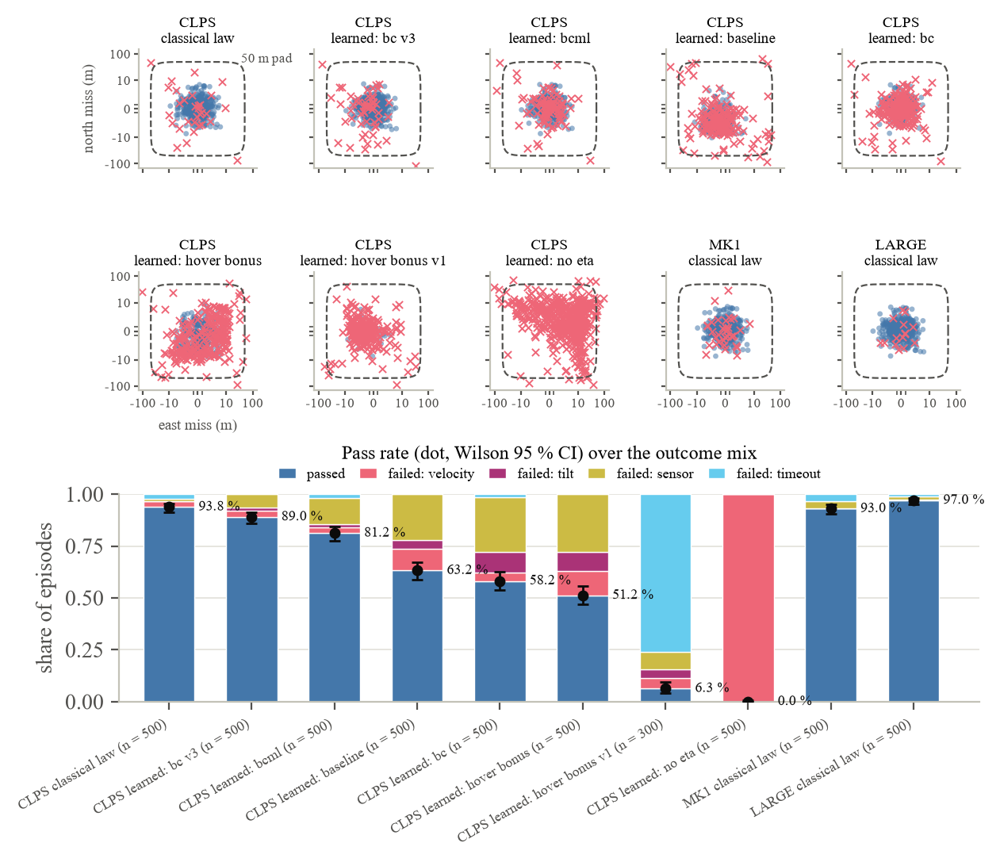
Table 6 and Figure 6 give the three checks of E16 on the committed tables (driving-v1, regenerated after the slip curves of Section 3.4 were adopted). First, the calibration itself. Driven through the tables' own leg integrator on a synthetic flat 2 km leg, teleoperation makes good 3.262, 2.570, 2.031 and 1.764 km/h at 0, 4, 6 and 8 s of round-trip delay against the measured 3.24, 2.56, 2.03 and 1.76 km/h (Measured) [29], errors of +0.66, +0.38, +0.07 and +0.20%, with 10, 20, 34 and 41 stops on the leg; the mean over 400 stochastic integrator runs (3.246, 2.560, 2.025 and 1.758 km/h) is within 0.3% of the measurements. The step environment driven by the expert gave 3.243, 2.576, 2.056 and 1.769 km/h (Section 5.2). The two agree because they share the physics, and both reproduce the measurements because the stop spacing was solved to make them; the check tests the implementation, not the model. On the same flat leg supervised autonomy makes good 2.711 km/h (a 3.0 km/h cap with a 60 s stop every 500 m, four stops) and full autonomy 8.94 km/h. Second, the flattest real leg of at least 500 m, from the construction site to the depot (662 m, maximum slope 5.8°), at sun azimuth 270°: teleoperation makes good 3.01, 2.39, 1.88 and 1.68 km/h, 4.7–7.2% below the flat-ground values, because slip on a 4–6° grade costs speed even below the 10° knee of the slope factor; supervised autonomy makes good 2.41–2.51 km/h and autonomous driving 7.8–8.0 km/h. The ratios between latencies survive: 0.79, 0.63 and 0.56 of the 0 s value against the measured 0.79, 0.63 and 0.54. Third, the energy anchor. The round trip from the base to the shadowed crater and back on the 8.95 km daylight route uses 1.77 kWh under autonomous driving, 1.83 kWh supervised and 1.84 kWh teleoperated at 4 s; at night, on the 8.57 km night route, 1.89, 1.86 and 1.77 kWh. All six lie inside Chen and colleagues' 0.4–4.4 kWh for a 500 kg rover (Modelled) [92] scaled by mass to 1.28–14.08 kWh for 1,600 kg (the scaling is Assumed linear in mass), and near its lower edge, as Section 5.2 said they should, because Chen's paths are longer and count terramechanics work only. Per kilometre the tables give about 198 Wh/km on this leg (134 Wh/km on flat ground), and the per-metre energy is the same in every lighting case to within 2% (197.5–198.6 Wh/km by day and 201.0 at night on the teleoperated base-to-crater leg at a friction angle of 42°). The differences between lighting cases are route length: the night route is the shortest because the planner adds no up-sun tacking at night, and the day routes at azimuths 0° and 270°, which drive up-sun on the way out, are 8.95 and 9.25 km against 8.57 km at 90° and 180°. A night round trip can therefore use less energy than a day one. That looked like a bug, and it is not. The soil matters more than the light: in development runs (50 integrator runs, autonomous, sun 90°) the same round trip uses 1.49 kWh on firm soil (friction angle 47.8°), 1.70 kWh on medium soil (42°), 2.56 kWh on weak soil (37.8°, where dig-in stretches raise the interventions to 12 per trip) and 1.76 kWh with the angle sampled per run as the tables do.
The intervention rates in the tables are the Assumed hazard of Section 3.4 integrated along each route: 0.10, 0.20 and 0.40 expected interventions on the flat 2 km leg for teleoperation, supervised and autonomous driving, and 0.0–0.15 per leg on the 662 m real leg. They are not validated, because nothing exists to validate them against (Section 2.4); Section 6.6 shows how much of a fleet's time they take. Every suite of this paper uses the scripted expert's tables. The learned driver of Section 3.4 was implemented but not trained in time for these runs, so its measured intervention rate, the one quantity that could replace the hazard, is not in this version.
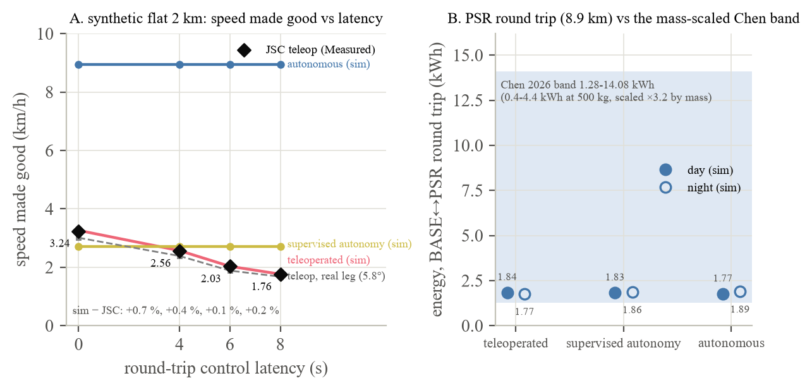
Figure 7 and Table 8 give the dispersion result at the 1 km standoff, where the design is the seven miss levels crossed with three pad radii, two dispatch rules and four fleets. The engine gives dispersion one channel, by construction (Section 3.6): it scales the miss vector of each drawn landing record, a scaled miss inside the pad radius changes nothing, a miss outside it costs every pickup a drive of twice the miss over unprepared ground, and a failed landing is the same at every level because failure is not scaled (0.37–0.77 landings a year fail in the reference cells (4.5–7.0% of the 8.1 Phase-2 and 11.0 Phase-3 landings a year), losing 0.6–4.3 t of cargo with intervals as wide as the means; Phase-2 default fleet, marketplace: 0.37 ± 0.20 failed landings and 624 ± 443 kg lost a year). What the suite measures is therefore the share of landings that miss the pad, which the pad radius sets as much as the dispersion does, and the delay each such landing costs at these loads. At the 50 m level, the Architecture Definition Document's target, 67.7 ± 6.5% of landings are off a 25 m pad, 31.7 ± 5.2% off a 50 m pad and 3.3 ± 2.1% off a 100 m pad (Phase-2 default fleet, marketplace; the means over the eight fleet-and-rule cells are 66.2, 30.3 and 2.6%); at the 100 and 118 m levels, NASA's band and Blue Ghost's landing, 85.6 ± 5.6, 68.8 ± 6.3 and 34.8 ± 5.4% and then 89.0 ± 4.9, 76.4 ± 6.2 and 40.6 ± 6.4%; at IM-2's 300 m, 94.7 ± 3.1, 89.8 ± 5.0 and 81.7 ± 5.6%; at IM-1's 1.5 km, 95.5 ± 2.8, 95.3 ± 2.8 and 94.6 ± 2.8%, which is the ceiling, since the landings that fail are not counted as off-pad. At the classical level no landing in these runs missed any pad, and at SLIM's 10 m 0.8 ± 1.1% missed the 25 m pad and none the larger two.
The delay cost of the off-pad landings is small until misses reach hundreds of metres. Paired against the classical level in the same fleet, rule, standoff and pad (50 m), the mean urgent delay changes by between −0.05 h [−0.18, +0.03] (Phase-3 fleet, marketplace) and +0.49 h [−0.10, +1.56] (Phase-2 four-vehicle fleet, in-house) at the 50 m level, by −0.05 h [−0.36, +0.16] to +0.87 h [+0.05, +2.18] at 100 m, by −0.03 h [−0.32, +0.20] to +0.59 h [−0.48, +1.90] at 118 m, by −0.16 h [−0.69, +0.26] to +1.05 h [−0.17, +2.96] at 300 m, and by +0.62 h [−0.90, +1.77] to +2.85 h [+1.93, +3.88] at 1,500 m. Up to 118 m the intervals exclude zero only in the in-house fleets, and there the differences are 0.05–0.9 h (Phase-2 default fleet: +0.05 h [+0.03, +0.09] at 50 m, +0.24 h [+0.10, +0.53] at 100 m, +0.27 h [+0.12, +0.54] at 118 m); at 300 m four of the eight cells exclude zero (Phase-2 default fleet +0.54 h [+0.36, +0.83] in-house and +0.48 h [+0.20, +0.79] under the marketplace; two-vehicle in-house fleet +0.64 h [+0.16, +1.25]; Phase-3 in-house +0.52 h [+0.05, +1.07]); at 1,500 m six of eight do (Phase-2 default fleet +2.18 h [+1.52, +2.91] in-house and +1.45 h [+0.24, +2.65] marketplace; four-vehicle marketplace +1.84 h [+1.31, +2.39]; Phase-3 fleet +2.13 h [+1.45, +2.85] in-house and +1.02 h [+0.27, +1.68] marketplace). The same-day service level moves by at most one point up to 300 m (−0.009 to +0.010) and by −0.032 [−0.053, −0.014] at worst at 1,500 m; the cost per kilogram moved by at most $0.7 (−0.61 [−1.60, −0.01] to +0.71 [−0.02, +2.17]), and with energy priced at 2,000 $/kWh by up to +0.90 $ [+0.33, +1.59] at 1,500 m. The off-pad kilometres behind the delay are 2.2, 6.7, 8.2, 21.1 and 104.9 a year at the 50, 100, 118, 300 and 1,500 m levels in the Phase-2 default marketplace cell (2.8–158.2 in the Phase-3 fleet, which lands more often). Each off-pad landing costs its pickup jobs a drive of twice the miss over unprepared ground at half speed and double energy (Assumed), so a 300 m miss adds about 0.6 km and a 1.5 km miss about 3 km to each pickup. The effect is therefore linear in the miss above the pad radius, and fleets with idle vehicles absorb it. The pad radius changes the off-pad share a great deal and the delay very little: at the 50 m level a 25 m pad instead of 50 m changes the mean urgent delay by −0.05 h [−0.18, +0.02] to +0.09 h [−0.04, +0.27] and a 100 m pad by −0.54 h [−1.56, −0.02] to +0.05 h [−0.03, +0.18]; at 118 m the corresponding ranges are −0.00 to +0.06 h and −0.27 h [−0.73, −0.04] to +0.12 h [−0.05, +0.44]. The 50 m versus 100 m pad question is therefore a pad-mass and construction question, not a logistics one, unless misses are of the IM-2 class: the mass of a pad grows with the square of its radius [90], and the delay the larger pad saves is a fraction of an hour. In the fitted law of Section 6.7 the mean miss costs +8.2% [+6.2%, +10.5%] of urgent delay per e-fold at the typical fleet load, growing with utilisation (+1.37 [+1.14, +1.58] per unit), and the off-pad share adds nothing once the miss is in the model (+0.025 [−0.097, +0.139] per unit share), which is what one channel should look like: the off-pad share is a function of the miss and the pad radius, and the law cannot separate what the engine does not.
Table 8. Landing dispersion at the 1 km standoff (E17). Each level scales the classical CLPS table's miss distribution to the stated mean (Modelled); the anchors are Measured (SLIM, Blue Ghost Mission 1, IM-2, IM-1) or Spec (Architecture Definition Document Rev C; NASA 2023 white paper and HLS-R-0322). Off-pad shares are for the Phase-2 default marketplace cell (mean ± 1.96 SE over 30 seeds); differences are paired against the classical level on common seeds (percentile seed-bootstrap 95% CI, 1,000 resamples), 50 m pad.
| Implied mean miss (m) | σscale | Anchor | Off-pad share, 25 / 50 / 100 m pad (%) | Δ urgent mean delay vs classical level (h): P2 default, marketplace | P2 two vehicles, in-house | P3 default, marketplace | Off-pad extra km / yr (P2 default, marketplace) |
|---|---|---|---|---|---|---|---|
| 2.9 | 1 | classical law as flown in the environment (Modelled) | 0 / 0 / 0 | reference | reference | reference | 0.0 |
| 10 | 3.4 | SLIM before its divert (Measured) [85] | 0.8 ± 1.1 / 0 / 0 | 0.00 [0.00, 0.00] | 0.00 [0.00, 0.00] | 0.00 [0.00, 0.00] | 0.0 |
| 50 | 17.2 | ADD Rev C target (Spec) [115] | 67.7 ± 6.5 / 31.7 ± 5.2 / 3.3 ± 2.1 | +0.08 [−0.02, +0.25] | +0.16 [+0.04, +0.40] | −0.05 [−0.18, +0.03] | 2.2 |
| 100 | 34.5 | NASA 50–100 m; HLS 100 m 3σ (Spec) [60, 82] | 85.6 ± 5.6 / 68.8 ± 6.3 / 34.8 ± 5.4 | +0.08 [−0.07, +0.20] | +0.19 [−0.03, +0.49] | −0.01 [−0.17, +0.11] | 6.7 |
| 118 | 40.7 | Blue Ghost Mission 1 (Measured) [86] | 89.0 ± 4.9 / 76.4 ± 6.2 / 40.6 ± 6.4 | +0.07 [−0.07, +0.19] | +0.21 [−0.01, +0.50] | +0.03 [−0.14, +0.16] | 8.2 |
| 300 | 103 | IM-2 (Measured) [87] | 94.7 ± 3.1 / 89.8 ± 5.0 / 81.7 ± 5.6 | +0.48 [+0.20, +0.79] | +0.64 [+0.16, +1.25] | −0.16 [−0.69, +0.26] | 21.1 |
| 1,500 | 517 | IM-1 (Measured) [84] | 95.5 ± 2.8 / 95.3 ± 2.8 / 94.6 ± 2.8 | +1.45 [+0.24, +2.65] | +2.85 [+1.93, +3.88] | +1.02 [+0.27, +1.68] | 104.9 |
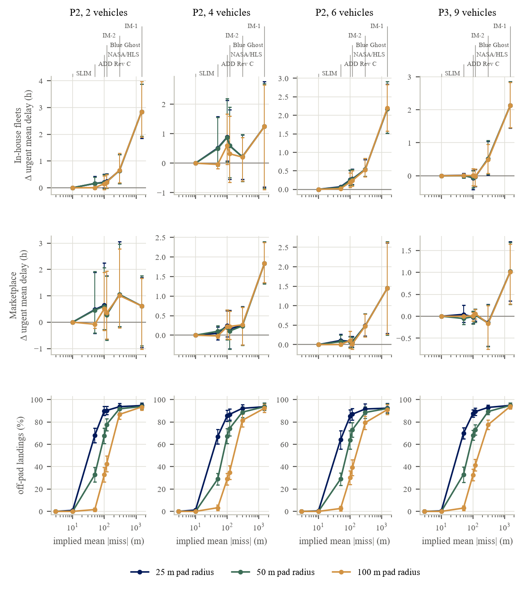
Figure 8 and Table 9 hold the landing at the classical level and the pad at 50 m and move the pads from 0.5 to 5 km. Standoff is the variable NASA's documents describe and do not price, and here it has a price in every fleet. From 0.5 to 5 km the mean urgent delay rises by 4.7 h in the best case, the Phase-3 nine-vehicle fleet under the marketplace (3.15 ± 0.60 to 7.85 ± 1.19 h), and by 18.5 h in the worst, the two-vehicle Phase-2 fleet under in-house contracting (24.81 ± 5.40 to 43.28 ± 6.99 h). Paired against the 1 km reference, every fleet and rule shows a positive difference at 2 km and beyond whose bootstrap interval excludes zero: at 2 km from +1.15 h [+0.38, +1.74] (Phase-3, marketplace) to +6.09 h [+3.75, +8.36] (two vehicles, in-house), at 3 km from +2.27 h [+1.47, +2.93] to +12.09 h [+9.60, +14.68], and at 5 km from +4.10 h [+3.41, +4.83] to +18.39 h [+14.86, +22.04], with the Phase-2 default fleet at +6.21 h [+4.67, +7.76] under the marketplace and +9.57 h [+7.73, +11.65] in-house and the four-vehicle fleet at +7.69 h [+6.33, +9.14] and +12.63 h [+10.03, +15.73]. At 0.5 km the difference is negative, between −0.08 h [−1.08, +1.43] and −1.53 h [−2.35, −0.79], excluding zero in five of the eight cells. The same-day service level falls at 5 km by 0.018 [0.003, 0.032] (Phase-3, marketplace) to 0.172 [0.130, 0.215] (two vehicles, in-house), by 0.031 [0.012, 0.052] and 0.078 [0.051, 0.107] in the Phase-2 default fleet under the two rules. Fleet kilometres and energy rise with distance, as they must: in the Phase-3 fleet from 3,417 ± 35 to 4,149 ± 136 km a year under the marketplace (+677 km [+583, +772] at 5 km against 1 km) and from 2,840 ± 27 to 3,536 ± 121 kWh (+668 kWh [+580, +762], a quarter more); in-house 3,413 to 4,138 km and 3,767 to 4,494 kWh. The marketplace cuts the in-house standoff penalty by between a third and a half: at 5 km its paired difference is 0.42 (two vehicles), 0.61 (four), 0.65 (default) and 0.52 (Phase 3) of the in-house one. We read this as the version-2 mechanism, a pooled vehicle being usually closer to the next job while a fleet that must wait for its own vehicle to come back pays the longer pad leg twice, and did not test it separately. The response is concave: in the Phase-2 default marketplace cell the logarithm of mean urgent delay rises by 0.52 per kilometre between 0.5 and 1 km, 0.31 between 1 and 2 km, 0.10 between 2 and 3 km and 0.12 between 3 and 5 km, and the other cells show the same shape, so the first kilometres of standoff cost most.
The cost per kilogram moved barely moves without an energy price ($476.1 at 0.5 km and $476.6 at 5 km in the Phase-2 default marketplace cell; the paired difference at 5 km is +0.71 $ [−0.18, +1.86]), because the fleet's capital is 99% of the cost and kilometres are not priced in version 2's model. With energy priced at 500, 2,000 and 5,000 $ per kWh delivered on the surface (Assumed, swept), the same cell costs $477.4, $479.8 and $484.6 at 5 km, and the 1 km to 5 km difference at 2,000 $/kWh is +1.70 $ [+0.81, +2.89] per kilogram moved under the marketplace and +0.82 $ [+0.14, +1.43] in-house, +0.86 [+0.67, +1.04] to +1.73 [+0.80, +2.82] across the Phase-2 fleets and +1.02 [+0.48, +1.55] (marketplace) and +0.50 [−0.03, +0.93] (in-house) in the Phase-3 fleet: a few tenths of a percent of the cost per kilogram, which is the right order for a service whose cost is its fleet. Section 6.7 puts this beside the pad-construction and plume-damage terms. Both pads at 2 km and beyond are blocked from the base by 13–55 m of terrain (Table 2), which matters for the plume shelter rule and the siting trade but not for driving; and the pads at 2 km and beyond sit 240–510 m below the base, so the loaded leg from the pad climbs, and the expert's routes from pad A to the base are 0.52–0.61, 0.98–1.14, 2.37–2.99, 3.29–3.88 and 5.23–5.47 km by lighting case for straight-line distances of 0.48, 0.98, 2.10, 2.91 and 4.94 km.
Table 9. Pad standoff (E17), classical landings, 50 m pad. Cell means over 30 seeds with 95% CIs; differences paired against the 1 km standoff on common seeds (percentile seed-bootstrap 95% CI, 1,000 resamples). Energy priced at 2,000 $/kWh delivered on the surface (Assumed) in the last column.
| Standoff (km) | Urgent mean delay (h): P2 two vehicles, in-house | P2 default, marketplace | P3 default, marketplace | Δ vs 1 km (h), same three cells | Fleet km / yr and energy kWh / yr (P3 default, marketplace) | Cost $/kg moved, no energy price and at 2,000 $/kWh (P2 default, marketplace) |
|---|---|---|---|---|---|---|
| 0.5 | 24.81 ± 5.40 | 5.17 ± 1.79 | 3.15 ± 0.60 | −0.08 [−1.08, +1.43]; −1.53 [−2.35, −0.79]; −0.61 [−1.50, +0.05] | 3,417 ± 35; 2,840 ± 27 | 476.1; 478.2 |
| 1 (reference) | 24.89 ± 5.44 | 6.71 ± 2.31 | 3.76 ± 1.18 | 0; 0; 0 | 3,473 ± 41; 2,868 ± 30 | 475.9; 478.1 |
| 2 | 30.98 ± 5.80 | 9.15 ± 2.59 | 4.90 ± 0.75 | +6.09 [+3.75, +8.36]; +2.45 [+1.23, +3.52]; +1.15 [+0.38, +1.74] | 3,670 ± 67; 3,122 ± 64 | 476.8; 479.4 |
| 3 | 36.98 ± 6.35 | 10.15 ± 1.82 | 6.02 ± 0.75 | +12.09 [+9.60, +14.68]; +3.44 [+2.38, +4.52]; +2.27 [+1.47, +2.93] | 3,872 ± 89; 3,314 ± 85 | 476.7; 479.6 |
| 5 | 43.28 ± 6.99 | 12.92 ± 2.32 | 7.85 ± 1.19 | +18.39 [+14.86, +22.04]; +6.21 [+4.67, +7.76]; +4.10 [+3.41, +4.83] | 4,149 ± 136; 3,536 ± 121 | 476.6; 479.8 |
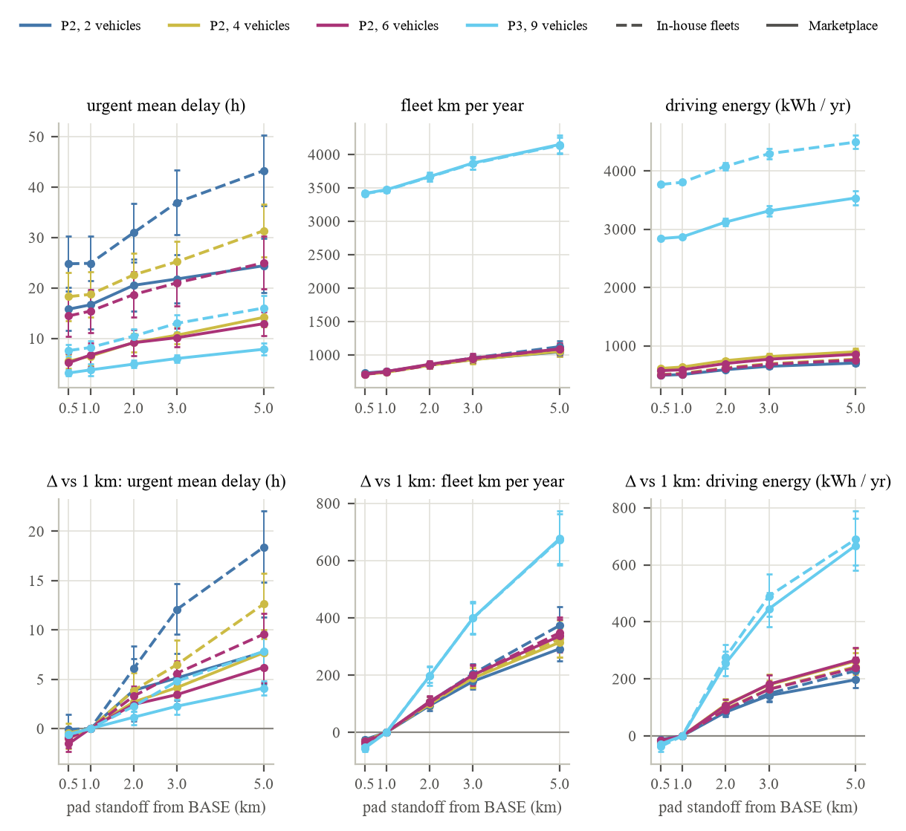
E18 is the largest suite: 1,248 cells at 30 seeds, 37,440 simulated years. Figure 9 and Table 10 carry the paired differences in mean urgent delay against the matching no-keep-out cell on common seeds. The design was run twice in part, because the first analysis changed the model, and we report what it found before the final numbers. The keep-out acts through three channels (Section 3.5): the dispatch filter, which removes pad jobs inside a window; the holds, which stop committed jobs at the boundary; and the evacuation, which moves idle vehicles inside R to a terrain-sheltered site when a window opens. Switching each channel off in turn in the four-vehicle in-house fleet at the 1 km standoff with the night on showed that the filter and the holds together cost between +0.000 and +0.021 h of mean urgent delay at every stand-down (bootstrap intervals of about [0, 0.06] h): at Phase-2 utilisation a vehicle is almost never wanted at a pad during a window. The whole effect was the evacuation, and its sign was not robust at 30 seeds, because moving idle vehicles out of the radius reshuffles which vehicle takes the next job and the per-seed differences are heavy-tailed, single seeds moving by 1–2 h. What an evacuated vehicle does when the window closes was the first modelling question this raised: leaving it at the shelter is not what an operator would do, so the module now returns a still-idle vehicle to the site it left, counting the drive as a reposition and its hours as stand-down hours (plume.return_after, the default). The second was where the marketplace stages a vehicle ahead of a landing whose pad will have a window: staging at the line-of-sight shelter produced a +0.92 h [+0.16, +2.16] penalty for a 0.2 km radius with a 6 h stand-down in the four-vehicle fleet, a radius that encloses no site and evacuates nothing, because the shelter is farther from the pad than the vehicle's usual staging spot and the first pickup started from there after the window; the staging rule now sends the vehicle to the nearest site outside R from the pad, the keep-out boundary, and the penalty went to +0.39 h [−0.14, +0.94]. The stand-down hours were also split into holds (jobs held at the boundary, times vehicles) and drives (evacuations and returns); in every marketplace cell the holds are under one vehicle-hour a year (at most 0.95) and the drives are the rest, so the keep-out's cost in vehicle time is driving, not waiting. The marketplace cells were re-run under the new staging rule; the other three rules do not stage and were unaffected.
The exclusion itself is nearly free, and what cost there is comes with the radius. Of the 1,200 keep-out cells, 941 have intervals that include zero, 240 are positive with intervals that exclude it (41 of them under 0.1 h, 132 between 0.1 and 0.5 h, 49 between 0.5 and 1 h and 18 above 1 h) and 19 are negative (all between −0.07 and −0.48 h, in the pooled rules with the night off). Averaged over fleets, rules and stand-downs at the 1 km standoff with the night on, the paired difference is +0.08 h at radii of 0.2 and 0.5 km, +0.01 h at 1 km, +0.44 h at 2 km and +0.67 h at 3 km; with the night off +0.01, +0.01, −0.01, +0.22 and +0.37 h. The 1 km radius, the one that matches NASA's “more than 1,000 m” band, costs nothing we can measure: with a 2 h stand-down the paired differences are −0.10 h [−0.41, +0.20] in the Phase-3 fleet under the marketplace and −0.03 h [−0.36, +0.29] in-house, +0.22 h [−0.03, +0.60] and +0.02 h [−0.28, +0.28] in the Phase-2 default fleet, and −0.36 h [−1.86, +0.55] and −0.03 h [−0.44, +0.35] in the four-vehicle fleet, with the night on; with the night off they are +0.03 h [−0.16, +0.24], −0.07 h [−0.27, +0.12], −0.01 h [−0.21, +0.16], +0.16 h [−0.02, +0.41], −0.13 h [−0.42, +0.11] and −0.21 h [−0.77, +0.18]. The 2 and 3 km radii, which enclose most of the base, do cost: the largest effects in the design are +1.86 h [+0.64, +3.22] and +1.86 h [+0.52, +3.33] (four-vehicle in-house fleet, 2 km, two-minute and six-minute stand-downs, night on), +1.73 h [+0.90, +2.80] and +1.73 h [+0.88, +2.83] (Phase-2 default in-house, 3 km, the same two stand-downs) and +1.56 h [+0.05, +3.13] (four-vehicle in-house, 3 km, six minutes), and in the Phase-3 fleet +0.82 h [+0.18, +1.63] (marketplace, 2 km, 2 h) and +0.78 h [+0.29, +1.30] (in-house, 3 km, 0.5 h). The stand-down time hardly matters, and when it does the short windows cost more. Averaged the same way, the two-minute, six-minute, 0.5 h, 2 h and 6 h stand-downs cost +0.33, +0.33, +0.30, +0.20 and +0.12 h with the night on. Our explanation, which the channel ablation supports for one cell and which we did not test more widely, is that the evacuation happens whatever T is: after a two-minute window the evacuated vehicle is still driving to the shelter when the window closes and stays displaced, while after a longer window it is either re-dispatched from the shelter or driven back. In the Phase-3 fleet under the marketplace a 1 km keep-out costs −0.01 h [−0.34, +0.40] at two minutes and −0.14 h [−0.40, +0.08] at six hours (in-house −0.04 h [−0.38, +0.30] and −0.21 h [−0.54, +0.11]). The night roughly doubles the cost of the large radii (+0.44 and +0.67 h at 2 and 3 km against +0.22 and +0.37 h without it), presumably because a window and the dark can coincide, and the only cells above +1 h are night cells of the Phase-2 fleets. Fleet load does not change the sign. The Phase-3 fleet, the only loaded one (utilisation 0.042–0.076 against 0.021–0.056 for the Phase-2 fleets), shows the same pattern at smaller amplitude; in the fitted law of Section 6.7 the keep-out radius and the stand-down add no measurable delay at the typical load, and their interactions with utilisation say the cost would be larger in a fleet lighter-loaded than any we ran. At the 3 km standoff, where the radii enclose fewer sites, every cell is within ±1.5 h; 131 of the 600 cells exclude zero (117 positive, 14 negative), 16 of them Phase-3 marketplace cells and four of those with the night on (1 km, 2 h: +0.26 h [+0.02, +0.61]); at the 1 km standoff 128 of 600 do. The same-day service level moves by at most two points anywhere (−0.023 to +0.018).
The keep-out's measurable cost is driving: in the Phase-3 fleet under the marketplace at the 1 km standoff with the night on, stand-down vehicle-hours a year are 18.4 ± 2.6 (1 km radius, two-minute window), 31.0 ± 3.8 (0.5 h), 37.6 ± 5.5 (2 h) and 32.5 ± 4.5 (6 h), for 25–27 stand-down events and 35–60 repositions a year; at 3 km they are 72.7 ± 8.5, 85.5, 160.2 ± 19.2 and 148.3 ± 18.4, and at 0.2 km 0.9–2.2. The 2 h window costs more vehicle-hours than the 6 h window at the 3 km radius in all but one of the twelve fleet-and-rule combinations (the Phase-2 four-vehicle fleet under pooled greedy dispatch: 72.9 against 67.3; the exception is the same fleet in-house, 77.4 against 77.7), and the cause is the return drive: a vehicle is driven back only if it is still idle at the shelter when the window closes, and over a six-hour window more evacuated vehicles are dispatched from the shelter first. Without the return the two windows cost the same (32.6 against 33.7 vehicle-hours in the pooled greedy cell). We keep the return, because it is time the keep-out costs, and report the split. Against the fleets' 8,760 vehicle-hours a vehicle a year, the worst case, 160 vehicle-hours for nine vehicles, is 0.2% of fleet time; against their 5–7% utilisation it is 3%.
Table 10. Plume keep-out (E18), 1 km standoff unless stated, night fraction 0.15, classical landings. Paired differences in mean urgent delay against the matching no-keep-out cell on common seeds (percentile seed-bootstrap 95% CI, 1,000 resamples); stand-down vehicle-hours (holds plus evacuation and return drives) and stand-down events are cell means for the Phase-3 default fleet under the marketplace. Radius and stand-down are Assumed (swept, not predicted).
| R (km) | T (h) | Δ urgent mean delay vs no keep-out (h): P2 default, marketplace | P2 four vehicles, in-house | P3 default, marketplace | P3 default, in-house | Stand-down vehicle-h / yr and events / yr (P3 default, marketplace) |
|---|---|---|---|---|---|---|
| 1 | 0.033 | −0.38 [−1.33, +0.37] | +0.52 [−0.26, +1.63] | −0.01 [−0.34, +0.40] | −0.04 [−0.38, +0.30] | 18.4 ± 2.6; 25.3 |
| 1 | 0.1 | −0.38 [−1.35, +0.33] | +0.48 [−0.32, +1.66] | −0.04 [−0.37, +0.36] | +0.34 [−0.16, +0.90] | 18.5 ± 2.5; 25.3 |
| 1 | 0.5 | +0.08 [−0.16, +0.38] | −0.01 [−0.41, +0.36] | −0.29 [−0.74, +0.01] | +0.22 [−0.22, +0.74] | 31.0 ± 3.8; 26.2 |
| 1 | 2 | +0.22 [−0.03, +0.60] | −0.03 [−0.44, +0.35] | −0.10 [−0.41, +0.20] | −0.03 [−0.36, +0.29] | 37.6 ± 5.5; 27.1 |
| 1 | 6 | +0.30 [−0.27, +0.84] | −0.90 [−2.98, +0.27] | −0.14 [−0.40, +0.08] | −0.21 [−0.54, +0.11] | 32.5 ± 4.5; 26.0 |
| 0.2 | 2 | +0.14 [−0.08, +0.46] | +0.00 [−0.00, +0.02] | +0.06 [−0.09, +0.23] | +0.01 [+0.00, +0.02] | 2.2 ± 0.7; 1.7 |
| 2 | 2 | +0.12 [−0.56, +0.94] | +0.78 [−0.28, +1.83] | +0.82 [+0.18, +1.63] | +0.36 [+0.00, +0.79] | 122.9 ± 15.0; 54.5 |
| 3 | 0.033 | +0.95 [−0.50, +2.40] | +1.56 [−0.03, +3.16] | +0.15 [−0.23, +0.53] | +0.77 [+0.36, +1.18] | 72.7 ± 8.5; 49.5 |
| 3 | 2 | +0.63 [−0.35, +1.73] | +0.59 [−0.40, +1.45] | +0.21 [−0.69, +1.01] | +0.36 [−0.15, +0.80] | 160.2 ± 19.2; 53.7 |
| 3 | 6 | +0.56 [−0.59, +1.89] | +1.54 [−0.17, +3.44] | −0.12 [−1.09, +0.56] | +0.21 [−0.24, +0.60] | 148.3 ± 18.4; 53.1 |
| 1 (3 km standoff) | 2 | +0.01 [−0.23, +0.25] | +0.95 [−0.04, +2.68] | +0.26 [+0.02, +0.61] | +0.05 [−0.03, +0.14] | 6.0 ± 1.9; 1.5 |
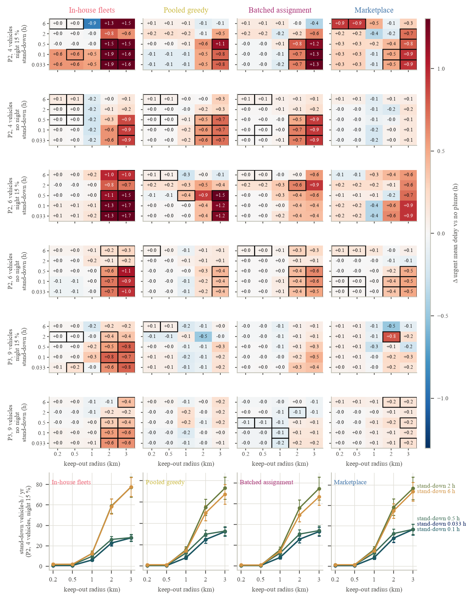
E19 is complete: 40 cells, 1,200 simulated years. Every vehicle of the Phase-2 fleets of two, four, six and eight (the fleets of version 2's suite E2) is set to the same autonomy level, with max(2, n/2) Earth operators, pads at 1 km, classical landings and the driving tables of Section 6.2 (Table 11, Figure 10). Autonomy level and fleet size trade against each other, and under pooled dispatch the exchange rate is about three to one. Under in-house contracting the mean urgent delay of a fleet teleoperated from Earth at 8 s of round-trip delay falls from 41.2 ± 7.2 h with two vehicles to 29.8 ± 5.3 h with four, 21.0 ± 4.4 h with six and 17.5 ± 3.5 h with eight; the same fleets driving autonomously deliver in 23.2 ± 5.0, 17.3 ± 4.4, 11.7 ± 3.2 and 10.1 ± 2.8 h. Under the marketplace the teleoperated fleets deliver in 30.4 ± 6.8, 21.0 ± 4.2, 14.6 ± 3.5 and 11.1 ± 2.9 h and the autonomous ones in 13.3 ± 3.9, 4.3 ± 1.2, 5.4 ± 2.3 and 3.2 ± 1.6 h. Under the marketplace two autonomous vehicles deliver urgent cargo as fast as six teleoperated at 8 s (13.3 against 14.6 h; paired on common seeds −1.25 h [−3.96, +1.60]) and four autonomous vehicles beat eight teleoperated ones (4.3 against 11.1 h; −6.80 h [−9.23, −4.75]); in-house the first comparison reverses within its interval (23.2 against 21.0 h; +2.15 h [−1.16, +5.90]) and the second is a tie (17.3 against 17.5 h; −0.15 h [−2.66, +2.77]), so the exchange rate is a pooled-dispatch result. The fleets differ in composition as well as size (two LTVs; two LTVs, the hauler and the micro-rover; four LTVs, the hauler and the micro-rover; five LTVs, two haulers and the micro-rover), and the curves show it: the marketplace's autonomous six-vehicle fleet is no faster than its four-vehicle one (5.4 against 4.3 h; +1.15 h [−0.89, +3.32]), which we read as the added LTV and micro-rover taking few urgent items from a pool that already had a vehicle free, while in-house the same step helps (−5.62 h [−9.74, −1.91]) because owners gain vehicles of their own; and the four-vehicle marketplace fleet books more teleoperation console hours at 8 s (3,323) than the six- or eight-vehicle ones because its two operators serve four teleoperated vehicles and are queued for 34 times a year. Supervised autonomy sits close to full autonomy: paired on common seeds, autonomy improves on supervision by between 0.5 and 3.3 h of mean urgent delay, with intervals that exclude zero in five of the eight fleet-rule cells (in-house four and six vehicles: −1.7 h [−3.5, −0.0] and −3.2 h [−5.8, −0.9]; marketplace two, four and eight vehicles: −3.3 h [−5.5, −1.0], −2.1 h [−3.6, −1.0] and −1.4 h [−1.7, −1.1]) and include it in the other three. Teleoperation at 8 s costs, against supervision in the same fleet, +16.3 h [+12.4, +20.0], +10.8 h [+7.5, +14.0], +6.2 h [+4.8, +7.6] and +6.9 h [+4.6, +9.5] in-house and +13.8 h [+10.0, +17.8], +14.6 h [+11.7, +17.8], +8.5 h [+6.4, +11.0] and +6.5 h [+4.7, +8.5] under the marketplace, for two, four, six and eight vehicles; at 4 s it costs +2.0 to +6.0 h, and every 8 s interval excludes zero. The latency itself matters less than the mode: the 4 to 8 s step costs 5–10 h in the small fleets and 3–5 h in the large ones, roughly what the JSC speed table predicts for the longer confirmation stops.
The same-day service level says the same for fleet sizing. The marketplace with six supervised vehicles delivers 93.6 ± 3.7% of urgent items within a day; eight teleoperated vehicles at 8 s reach 90.0 ± 4.7%, below it by 0.036 [0.005, 0.065] on common seeds, and at 4 s 93.5 ± 3.9%, a tie (−0.001 [−0.021, +0.019]). In-house, six supervised vehicles reach 83.4 ± 5.3% and eight teleoperated at 8 s 80.5 ± 5.3% (−0.029 [−0.069, +0.013], not distinguishable). So within the fleets we ran, an 8 s teleoperated fleet of up to eight vehicles lies below the six-vehicle supervised fleet's service level under both rules, distinguishably so under the marketplace, and the 4 s fleet needs eight vehicles to match it. The operator bill completes the comparison. Teleoperation at 4, 6 and 8 s books 1,886–1,912, 2,293–2,341 and 2,635–2,731 console hours a year in the in-house fleets and 1,637–2,322, 2,045–2,818 and 2,381–3,323 under the marketplace, which drives more; supervised autonomy books 280–386 hours and full autonomy 40–56. With two operators for the four-vehicle fleet, the marketplace's teleoperated jobs wait for a free operator 22–34 times a year (in-house 3.5–4.3), which is part of its 8 s penalty; the six- and eight-vehicle fleets, with three and four operators, wait 10–18 and 4.5–10 times. Interventions are nearly independent of the level, 420–540 a year costing 36–45 hours, because the terrain terms of the Assumed hazard (steep and rough cells) dominate the base rates; they take about 5% of the fleets' busy time. Fleet utilisation is 1.3–15%, the cost per kilogram moved is set by the fleet ($174.5–$694) and moves by under 3% with the level, and energy is 500–664 kWh a year, higher under the marketplace because it drives farther. Version 2's suite E5, on the tangent plane with its speed-multiplier latency model and a five-vehicle mixed fleet, had put the 90th-percentile urgent delay of a teleoperated fleet at 48 h at 8 s [113]; the six-vehicle fleets here give 56.3 ± 13.4 h in-house and 40.2 ± 12.7 h under the marketplace, with the stops and interventions now modelled rather than fitted.
Table 11. Autonomy level against fleet size at Phase-2 demand (E19): mean urgent delay, same-day service level and operator console hours, by dispatch rule and fleet. Means over 30 seeds with 95% CIs (1.96 standard errors). Operators per fleet are max(2, n/2) (Assumed). Teleoperation at 4 s is the direct lunar round trip (Spec); 6 and 8 s are relayed cases (Assumed); supervised and autonomous vehicles see the 5 s default latency only through interventions. All Modelled.
| Metric | Level | In-house, 2 | 4 | 6 | 8 | Marketplace, 2 | 4 | 6 | 8 |
|---|---|---|---|---|---|---|---|---|---|
| Urgent mean delay (h) | Teleoperation 4 s | 30.9 ± 5.7 | 22.3 ± 3.8 | 17.9 ± 4.9 | 12.6 ± 3.0 | 22.4 ± 5.4 | 11.8 ± 3.0 | 9.9 ± 3.1 | 7.6 ± 2.6 |
| Teleoperation 6 s | 36.2 ± 6.5 | 26.1 ± 4.7 | 18.4 ± 4.0 | 14.8 ± 3.0 | 25.8 ± 5.9 | 14.1 ± 3.2 | 11.6 ± 3.1 | 9.7 ± 2.8 | |
| Teleoperation 8 s | 41.2 ± 7.2 | 29.8 ± 5.3 | 21.0 ± 4.4 | 17.5 ± 3.5 | 30.4 ± 6.8 | 21.0 ± 4.2 | 14.6 ± 3.5 | 11.1 ± 2.9 | |
| Supervised autonomy | 24.9 ± 5.4 | 19.0 ± 4.5 | 14.9 ± 4.1 | 10.6 ± 3.1 | 16.7 ± 4.7 | 6.4 ± 1.8 | 6.1 ± 2.0 | 4.6 ± 1.6 | |
| Full autonomy | 23.2 ± 5.0 | 17.3 ± 4.4 | 11.7 ± 3.2 | 10.1 ± 2.8 | 13.3 ± 3.9 | 4.3 ± 1.2 | 5.4 ± 2.3 | 3.2 ± 1.6 | |
| Urgent items within 24 h | Teleoperation 4 s | 0.62 ± 0.07 | 0.75 ± 0.04 | 0.81 ± 0.05 | 0.86 ± 0.05 | 0.78 ± 0.06 | 0.87 ± 0.05 | 0.90 ± 0.04 | 0.94 ± 0.04 |
| Teleoperation 6 s | 0.57 ± 0.06 | 0.71 ± 0.06 | 0.81 ± 0.05 | 0.85 ± 0.04 | 0.75 ± 0.07 | 0.87 ± 0.05 | 0.90 ± 0.04 | 0.91 ± 0.04 | |
| Teleoperation 8 s | 0.55 ± 0.07 | 0.66 ± 0.07 | 0.78 ± 0.05 | 0.81 ± 0.05 | 0.70 ± 0.07 | 0.78 ± 0.06 | 0.87 ± 0.04 | 0.90 ± 0.05 | |
| Supervised autonomy | 0.69 ± 0.07 | 0.77 ± 0.05 | 0.83 ± 0.05 | 0.88 ± 0.04 | 0.82 ± 0.06 | 0.93 ± 0.04 | 0.94 ± 0.04 | 0.96 ± 0.03 | |
| Full autonomy | 0.70 ± 0.06 | 0.80 ± 0.05 | 0.84 ± 0.05 | 0.87 ± 0.04 | 0.84 ± 0.05 | 0.96 ± 0.03 | 0.93 ± 0.04 | 0.97 ± 0.03 | |
| Operator console hours / yr | Teleoperation 4 s | 1,907 ± 71 | 1,898 ± 70 | 1,886 ± 67 | 1,912 ± 66 | 1,637 ± 35 | 2,322 ± 59 | 2,086 ± 48 | 2,153 ± 54 |
| Teleoperation 6 s | 2,293 ± 80 | 2,323 ± 77 | 2,327 ± 70 | 2,341 ± 91 | 2,045 ± 45 | 2,818 ± 74 | 2,534 ± 63 | 2,614 ± 60 | |
| Teleoperation 8 s | 2,635 ± 86 | 2,709 ± 86 | 2,698 ± 76 | 2,731 ± 99 | 2,381 ± 53 | 3,323 ± 71 | 2,922 ± 64 | 3,056 ± 70 | |
| Supervised autonomy | 316 ± 12 | 321 ± 11 | 322 ± 13 | 325 ± 16 | 280 ± 6 | 386 ± 10 | 349 ± 10 | 352 ± 9 | |
| Full autonomy | 44 ± 2 | 44 ± 2 | 44 ± 2 | 46 ± 3 | 40 ± 2 | 56 ± 2 | 50 ± 2 | 51 ± 2 |
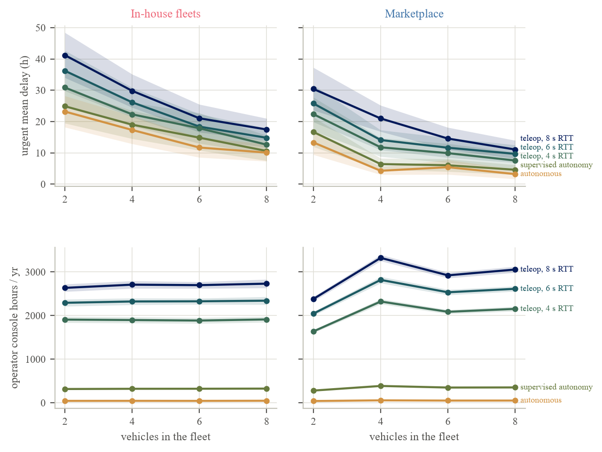
The law. E20 pools every simulated year of E17 and E18 (one row per seed of each cell, 62,640 rows from 30 seeds) and fits, by ordinary least squares, three responses: the natural logarithm of the mean urgent delay, so that 100(eb − 1) is the percentage change per unit of a regressor; the share of urgent items delivered within 24 h; and the cost per kilogram moved, without and with an energy price of 500, 2,000 and 5,000 $/kWh. The regressors are the logarithm of the implied mean miss, the standoff D, the keep-out radius R, the stand-down T, the night fraction, the reference-cell utilisation u of the same fleet, rule and night setting (a group-level load covariate, not the row's own utilisation, entered centred at its mean over the fitted rows, 0.046 in the pooled fit, so that the main effects are the effects at the typical load of the data rather than at zero load, which no fleet reached), the pad radius, the year's off-pad share (entered to check that it adds nothing once the miss is in the model), and the interactions ln miss × D, R × T, R × u, T × u, D × u and ln miss × u, with mechanism dummies (in-house the base) in the pooled fit and none in the per-mechanism fits, where utilisation is centred within the subset (0.048, 0.046, 0.048 and 0.042 for the in-house, marketplace, pooled greedy and batched subsets) and interactions whose factor is constant in the subset are dropped. No column was constant in the pooled data. Confidence intervals come from a percentile bootstrap over seeds with 1,000 resamples in which every row of a drawn seed enters the normal equations with that seed's multiplicity, so the intervals respect the common-random-number pairing. This design differs from Section 4.2 in two regressors, the off-pad share and the pad radius, added when Section 6.3 showed that dispersion acts through the off-pad threshold.
The pooled fit on the logarithm of mean urgent delay has R² = 0.48 and a residual standard deviation of 0.59 (Table 12, Figure 11). At the typical load, standoff is the one geometric variable that costs: each kilometre adds 0.300 [0.282, 0.320] to the logarithm, +35.0% [+32.6%, +37.6%] per kilometre, and the interaction with utilisation (−0.74 [−1.18, −0.33] per unit) says the multiplicative effect shrinks as the fleet gets busier, because a busy fleet's delays are long for other reasons. The keep-out radius and the stand-down add no measurable delay at the loads simulated: −0.005 [−0.015, +0.008] per kilometre of radius (−0.5% [−1.5%, +0.8%]) and −0.0075 [−0.0114, −0.0029] per hour of stand-down (−0.8% [−1.1%, −0.3%]), the latter the slightly negative sign of Section 6.5's short windows; their interactions with utilisation (−2.58 [−3.05, −2.04] and −0.66 [−0.79, −0.52] per unit) say both would cost more in a fleet lighter-loaded than any we ran and less in a busier one, and R × T is +0.0002 [−0.0019, +0.0019]. Dispersion costs +0.078 [+0.060, +0.100] per e-fold of mean miss, +8.2% [+6.2%, +10.5%], growing with utilisation (+1.37 [+1.14, +1.58] per unit), while the off-pad share (+0.025 [−0.097, +0.139] per unit) and the pad radius (+0.00016 [−0.00027, +0.00057] per metre) add nothing once the miss is in the model; ln miss × D is −0.0225 [−0.0244, −0.0206]. The night fraction has a coefficient of +3.41 [+2.51, +4.43] per unit, +66.8% [+45.8%, +94.4%] at the default 0.15, and the mechanism dummies are −0.759 [−0.830, −0.682] for the marketplace (−53.2% [−56.4%, −49.5%] against in-house), −0.627 [−0.698, −0.549] for pooled greedy dispatch (−46.6% [−50.2%, −42.2%]) and −0.618 [−0.701, −0.525] for batched assignment (−46.1% [−50.4%, −40.8%]). The standoff term needs two cautions. The fit is linear in D on the log scale while the cells are concave in it (Section 6.4), so the pooled slope of 0.30 per kilometre overstates the slope beyond 2 km (0.10–0.19 per kilometre in the classical-level cells of Table 9) and understates it below 1 km (0.52 in the Phase-2 default marketplace cell); and because the response is logarithmic, the marketplace's own fit gives a larger relative slope (+0.305 [+0.275, +0.335] per kilometre, +35.6% [+31.7%, +39.8%]) than the in-house fit (+0.219 [+0.200, +0.239], +24.5% [+22.2%, +27.1%]) although its absolute penalty in hours is the smaller one; a planner wanting a number for a cell should read Table 9, not the law. The per-mechanism fits, with utilisation centred within each subset and interactions with a constant factor dropped, have R² of 0.27 (in-house, 21,960 years), 0.33 (marketplace, 21,960), 0.47 (pooled greedy, 9,360, E18 only) and 0.49 (batched assignment, 9,360); the two pooled rules' standoff slopes are +0.333 [+0.314, +0.355] and +0.333 [+0.316, +0.351] per kilometre (+39.5% and +39.6%), and the keep-out terms are −0.016 [−0.033, +0.006] per kilometre in-house, −0.033 [−0.050, −0.015] under the marketplace (−3.3% [−4.8%, −1.5%]), +0.025 [+0.015, +0.035] under pooled greedy dispatch and +0.022 [+0.015, +0.032] under batched assignment, a difference between rules we have no tested explanation for. The same-day service level fit has R² = 0.33: the standoff costs 0.014 [0.011, 0.017] of service level per kilometre at the typical load, the keep-out radius and the stand-down are slightly positive (+0.006 [+0.004, +0.008] per kilometre, +0.003 [+0.002, +0.004] per hour), and the marketplace is +0.133 [+0.114, +0.154] over in-house. The cost fits have R² of 0.79 (0.78 with energy at 2,000 $/kWh), nearly all of it the utilisation covariate, which stands for fleet size (−5,805 $ [−5,924, −5,684] per unit); within a fleet the keep-out radius adds 2.55 $ [2.45, 2.63] per kilogram moved per kilometre of radius and the stand-down 1.15 $ [1.11, 1.18] per hour, through operator time, while the standoff adds +0.05 $ [−0.05, +0.14] per kilometre at 2,000 $/kWh and −0.25 $ [−0.31, −0.18] without an energy price. We read the law as a description of this testbed's response surface at the loads it was run at, with intervals that are only as good as the 30 seeds behind each term, and not as a prediction for any base but one laid out as Table 2 is.
Table 12. The fitted law (E20): coefficients of the pooled OLS fit of ln(mean urgent delay) with percentile seed-bootstrap 95% CIs (1,000 resamples) and the implied percentage change per unit at the typical fleet load (utilisation centred at 0.046); the same terms for the same-day service level and for the cost per kilogram moved at an energy price of 2,000 $/kWh (Assumed). n = 62,640 simulated years from 30 seeds; no term was constant. The fit is Modelled on simulated years; the regressor levels are Measured and Spec (miss anchors) and Assumed (standoff, keep-out and stand-down sweeps).
| Term | Unit | ln delay: coefficient [95% CI] | % per unit | Same-day service level: coefficient [95% CI] | Cost $/kg at 2,000 $/kWh: coefficient [95% CI] |
|---|---|---|---|---|---|
| Constant | – | +1.481 [+1.372, +1.579] | – | +0.901 [+0.883, +0.918] | +317.4 [+315.7, +319.2] |
| ln mean miss | per e-fold (m) | +0.0785 [+0.0597, +0.1001] | +8.2 [+6.2, +10.5] | −0.0014 [−0.0051, +0.0029] | −3.30 [−4.69, −2.02] |
| Off-pad share | per unit share | +0.025 [−0.097, +0.139] | +2.6 [−9.3, +14.9] | −0.009 [−0.037, +0.015] | +7.25 [−0.23, +15.27] |
| Pad radius | per m | +0.00016 [−0.00027, +0.00057] | +0.02 [−0.03, +0.06] | −0.00007 [−0.00017, +0.00002] | +0.0069 [−0.0193, +0.0350] |
| Standoff D | per km | +0.3003 [+0.2824, +0.3195] | +35.0 [+32.6, +37.6] | −0.0142 [−0.0172, −0.0114] | +0.047 [−0.047, +0.137] |
| Keep-out R | per km | −0.0050 [−0.0151, +0.0083] | −0.5 [−1.5, +0.8] | +0.0065 [+0.0042, +0.0083] | +2.55 [+2.45, +2.63] |
| Stand-down T | per h | −0.0075 [−0.0114, −0.0029] | −0.8 [−1.1, −0.3] | +0.0029 [+0.0021, +0.0037] | +1.15 [+1.11, +1.18] |
| Utilisation u (reference cell, centred at 0.046) | per unit | −3.13 [−6.17, −0.04] | −95.6 [−99.8, −4.2] | +0.798 [+0.276, +1.412] | −5,805 [−5,924, −5,684] |
| Night fraction | per unit (0.15 default) | +3.41 [+2.51, +4.43] | +66.8 [+45.8, +94.4] at 0.15 | −0.502 [−0.702, −0.337] | +260.2 [+253.8, +266.6] |
| ln miss × D | product | −0.0225 [−0.0244, −0.0206] | −2.2 | −0.0008 [−0.0012, −0.0005] | +0.048 [+0.037, +0.061] |
| R × T | product | +0.0002 [−0.0019, +0.0019] | +0.02 | −0.0011 [−0.0014, −0.0008] | −0.537 [−0.552, −0.523] |
| R × u | product | −2.58 [−3.05, −2.04] | −92.4 | +0.479 [+0.346, +0.598] | +4.96 [−3.38, +12.99] |
| T × u | product | −0.66 [−0.79, −0.52] | −48.4 | +0.134 [+0.096, +0.167] | +1.61 [−0.85, +3.87] |
| D × u | product | −0.74 [−1.18, −0.33] | −52.3 | −0.184 [−0.324, −0.061] | −2.57 [−6.08, +0.68] |
| ln miss × u | product | +1.37 [+1.14, +1.58] | +291.9 | −0.273 [−0.336, −0.205] | +39.6 [+34.1, +45.3] |
| Marketplace (in-house the base) | indicator | −0.759 [−0.830, −0.682] | −53.2 [−56.4, −49.5] | +0.133 [+0.114, +0.154] | −22.97 [−24.66, −21.22] |
| Pooled greedy | indicator | −0.627 [−0.698, −0.549] | −46.6 [−50.2, −42.2] | +0.114 [+0.095, +0.134] | +13.20 [+11.40, +15.09] |
| Batched assignment | indicator | −0.618 [−0.701, −0.525] | −46.1 [−50.4, −40.8] | +0.120 [+0.098, +0.145] | −25.11 [−26.51, −23.69] |
| R²; residual SD | 0.478; 0.587 | – | 0.330; 0.120 | 0.783; 48.1 | |
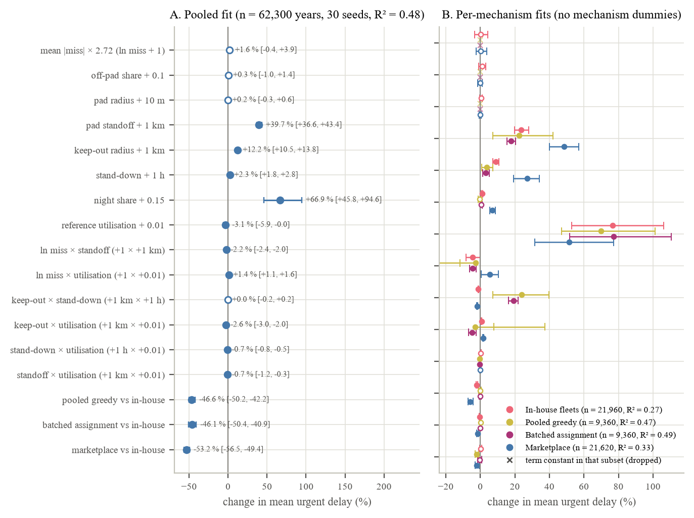
Pad siting. The siting table turns the standoff result into a trade a planner can read. For every E17 cell (fleet, rule, miss level, pad radius, standoff) it adds four terms per year: the hauling cost (operator time plus driving energy at 0, 500, 2,000 or 5,000 $/kWh; Modelled hauling, Assumed price); the amortised pad construction cost over a ten-year life (Assumed), $130, $229 or $548 million per pad at transport prices of $10,000, $100,000 and $300,000 per kilogram (Metzger and Autry [66]; Spec), that is 13.0, 22.9 or 54.8 million dollars a year, which does not depend on standoff in this version and therefore shifts totals, not minima; the expected plume damage, equal to landings a year times expected impacts per landing times a line-of-sight shield times a cost per impact, where the impacts per landing follow Wittal and colleagues' anchors of 8 at 1 km, 0.37 at 5 km and 0.10 at 10 km for a 10 t lander (Modelled) [89] with ln I linear in distance between the anchors and extrapolated to 0.5 km on the 1–5 km slope (11.7 at 0.5 km, 3.7 at 2 km, 1.7 at 3 km), the shield 0.1 (Assumed) where Table 2 says the terrain blocks pad A's line of sight to the base (2 km and beyond) and 1 where it does not, and the cost per impact 0.1, 1 or 10 million dollars (Assumed, swept); and a delay valuation, delivered items times mean delay times a value of time of 0, 100 or 1,000 $ per item-hour (Assumed, swept; a blended stand-in for the engine's per-priority values of $5,000, $1,000 and $100 an hour). The minimum-cost standoff is then read off for each of the 504 cell-and-pad-case groups under each of the 36 assumption sets, 18,144 minima in all (Table 13, Figure 12).
For the reference cell (Phase-2 default fleet, marketplace, classical landings, 50 m pad, eight landings a year) the hauling cost is 0.47, 0.48, 0.53, 0.56 and 0.63 million dollars a year at 0.5, 1, 2, 3 and 5 km with free energy and 1.61, 1.65, 1.92, 2.10 and 2.33 million at 2,000 $/kWh; the delay valuation at 100 $ per item-hour is 1.22–1.26 million (12.1–12.6 million at 1,000 $); and the expected damage at one million dollars an impact is 94.0, 64.0, 2.97, 1.38 and 0.30 million dollars a year (9.4–0.03 million at a tenth of that cost, 940–3.0 million at ten times it). The step from 1 to 2 km, where the terrain begins to shield the base, cuts the expected damage by a factor of 22 while the hauling cost rises by 0.05–0.27 million. The total at 2,000 $/kWh, one million dollars an impact and 100 $ per item-hour is 119.7, 89.8, 29.0, 27.6 and 26.8 million dollars a year with the $229 million pad (109.8–16.9 and 151.6–58.7 million with the cheaper and dearer pads), and the minimum lies at 5 km. Across the 36 assumption sets the reference cell's minimum is at 5 km in 27, at 3 km in three (free or 500 $/kWh energy with damage at 0.1 million an impact and delivery time valued at 100–1,000 $) and at 2 km in six (2,000 or 5,000 $/kWh with damage at 0.1 million, at any value of time); the pad case never moves it. Across all 18,144 minima none lies at 0.5 or 1 km, in any of the 36 assumption sets; this follows from the sweep's floor of $0.1 million per impact, since with eight impacts a landing at 1 km and no shield the damage there is at least $6.4 million a year against $0.5 million of hauling, and only a cost below about $1,000–2,000 per impact could move a minimum to 1 km (in the reference cell with free energy and no value of time the break-even against 2, 3 and 5 km is about $900, $1,400 and $2,300 per impact). Of the minima, 75.1% lie at 5 km, 19.0% at 2 km and 5.9% at 3 km. Once an impact costs a million dollars or more, the residual damage at 2 km (3.0 million a year in the reference cell) still exceeds the hauling and delay cost of going on to 5 km, so the farthest pad wins in 82.1–100% of groups whatever the energy price and value of time. At a tenth of that cost the damage left at 2 km (0.3 million) is of the order of the hauling increment, and the other two terms decide: with free energy and no value on delivery time 100% of groups still choose 5 km, with 500 $/kWh 88.7%; valuing delivery time at 100 $ per item-hour moves 59.5% of groups to 3 km at 500 $/kWh; at 1,000 $ per item-hour the pads come back to 2 km (48.2% of groups) and 3 km (51.8%) even with free energy and to 2 km in 75% at 500 $/kWh; and at 2,000 or 5,000 $/kWh the energy term alone puts 75–100% of groups at 2 km. By value of time alone, 2 km holds 14.6, 15.6 and 26.9% of minima at 0, 100 and 1,000 $ per item-hour. Dispersion and pad radius barely move the minima. The numbers that decide between 2, 3 and 5 km are therefore the ones NASA says it does not have, the impacts per landing and their cost, and we have swept them rather than guessed them; the one terrain fact that enters is that this ridge shields the base from a pad at 2 km, which is why 2 km, and not 1 km, is the near alternative.
Table 13. Pad siting (E20): the four annual cost terms against standoff for the reference cell (Phase-2 default fleet, marketplace, classical landings, 50 m pad; cell means over 30 seeds), the total for one assumption set, and the share of all 504 cell-and-pad-case groups whose minimum-cost standoff lies at each distance. Hauling Modelled; energy price Assumed; pad cost Spec [66] and independent of standoff; impacts per landing Modelled from Wittal and colleagues [89]; shield 0.1 Assumed where the line of sight is blocked; damage cost per impact and value of time Assumed (swept).
| Standoff (km) | Pad A line of sight to base | Impacts per landing | Hauling M$/yr at 0 and 2,000 $/kWh | Pad M$/yr (three cases) | Damage M$/yr at 0.1 / 1 / 10 M$ per impact | Delay valuation M$/yr at 100 and 1,000 $/item-h | Total M$/yr (2,000 $/kWh; 1 M$ per impact; 100 $/item-h; $229 M pad) |
|---|---|---|---|---|---|---|---|
| 0.5 | clear | 11.7 | 0.47; 1.61 | 13.0 / 22.9 / 54.8 | 9.40 / 94.0 / 940 | 1.22; 12.1 | 119.7 |
| 1 | clear | 8.0 | 0.48; 1.65 | 13.0 / 22.9 / 54.8 | 6.40 / 64.0 / 640 | 1.22; 12.2 | 89.8 |
| 2 | blocked | 3.7 | 0.53; 1.92 | 13.0 / 22.9 / 54.8 | 0.30 / 2.97 / 29.7 | 1.23; 12.3 | 29.0 |
| 3 | blocked | 1.7 | 0.56; 2.10 | 13.0 / 22.9 / 54.8 | 0.14 / 1.38 / 13.8 | 1.24; 12.4 | 27.6 |
| 5 | blocked | 0.37 | 0.63; 2.33 | 13.0 / 22.9 / 54.8 | 0.03 / 0.30 / 2.96 | 1.26; 12.6 | 26.8 |
| Share of minima at 0.5 / 1 / 2 / 3 / 5 km, all 504 groups | Damage ≥ 1 M$ per impact (24 assumption sets): 0 / 0 / 0 / 0–17.9 / 82.1–100%. Damage 0.1 M$ per impact: free energy 0 / 0 / 0 / 0 / 100% at no value of time, 0 / 0 / 0 / 2.4 / 97.6% at 100 $/item-h, 0 / 0 / 48.2 / 51.8 / 0% at 1,000 $/item-h; 500 $/kWh 0 / 0 / 0 / 11.3 / 88.7%, 0 / 0 / 0 / 59.5 / 40.5% and 0 / 0 / 75.0 / 25.0 / 0%; 2,000 $/kWh 0 / 0 / 75.0 / 25.0 / 0%, 0 / 0 / 87.5 / 12.5 / 0% and 0 / 0 / 100 / 0 / 0%; 5,000 $/kWh 0 / 0 / 100 / 0 / 0% at every value of time. All 18,144 minima: 0 / 0 / 19.0 / 5.9 / 75.1%. | ||||||
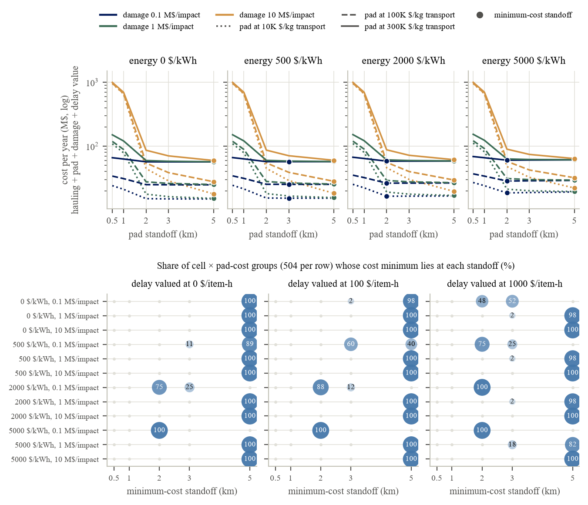
NASA writes that “a reduction in distance means a reduction in transfer time and risk” [60] and gives bands. We can now put a number on the transfer-time half of that sentence for one base on real terrain. At the typical fleet load of our runs each kilometre of pad standoff raises the mean delay of urgent cargo by about a third (+35.0% [+32.6%, +37.6%] in the fitted law), the response is concave, so the first kilometre costs most and the fourth least, and in hours the price of moving the pads from 1 to 5 km runs from about four in a nine-vehicle pooled fleet to about eighteen in a two-vehicle in-house one, with fleet kilometres and energy rising in proportion (Table 9, Section 6.7). The risk half we did not compute; we took Wittal and colleagues' impacts against distance [89] as the only published relation and swept what an impact costs. Put together, no minimum-cost standoff lies at 0.5 or 1 km in any of the 36 assumption sets, whose damage cost starts at $0.1 million per impact; three quarters of the minima lie at 5 km and the rest at 2 and 3 km. Once an impact costs a million dollars or more the damage term dominates and the farthest pad wins almost everywhere; at a tenth of that cost the pads come back to 2–3 km when surface energy is dear or delivery time is valued highly (Table 13). That is partly a statement about this terrain: the Connecting Ridge shields the base from a pad at 2 km, which makes 2 km and not 1 km the near alternative, and at a flatter site the trade would run on distance alone. NASA's documents place the decision between near and far pads around 2027 [104]. The delay side of it is now a table; the risk side still waits on the data gaps the Architecture Definition Document lists, in-situ particle velocity and site alteration [115].
The 50 m landing-accuracy target of the December 2025 revision [115] is, for logistics, a pad question. A landing reaches the fleet only when it misses the pad, and the pad radius sets that share at least as much as the dispersion does: at an implied mean miss of 50 m two thirds of landings miss a 25 m pad, a third miss a 50 m pad and a few percent miss a 100 m pad, yet the delay those misses cost is under an hour in every fleet until misses reach the 300 m of IM-2 (Table 8). In the fitted law a factor-e increase in the mean miss costs +8.2% [+6.2%, +10.5%] of urgent delay at the typical load, a quarter of a kilometre of standoff. A planner who wants to know whether the 50 m target is enough should therefore ask what statistic the 50 m is, a mean, a 1σ, a 3σ or a hard radius, because our 50 m-mean level leaves a third of landings off a 50 m pad and the 10 m level none; and should ask what a larger pad costs to build and emplace, because that is where the money is rather than in the extra kilometres. The 200 m pad that was “not feasible with a single Starship payload” [90] would be feasible to miss by 100 m; the 100 m pad needs the 50 m target to be met as a near-3σ figure.
On the plume, NASA's 2023 paper says keep-out zones must be respected [60]; we can say what respecting them costs the fleet at the loads of the next decade, which is almost nothing in delay and tens of vehicle-hours a year in driving. The dispatch filter and the holds cost nothing we could measure; at the 2–8% utilisations simulated the fleets absorb the evacuations, and in the fitted law the radius and the stand-down add no measurable delay at the typical load (Section 6.7). The cost that remains sits in the lightest-loaded night cells at 2–3 km radii, up to +1.9 h in the Phase-2 in-house fleets (Table 10), and the load interactions say it would grow in fleets lighter-loaded still. A 1 km radius with a 2 h stand-down, the rule nearest NASA's band, is indistinguishable from no keep-out in every fleet and rule, at 18–38 vehicle-hours a year of evacuation and return driving in the Phase-3 fleet. The two-minute window the ballistics of Appendix D justify and the six-hour window operational conservatism might impose are indistinguishable from each other, so the choice of window is free for the fleet and can be made on the safety case alone. What the design does not and cannot say is whether a 1 km radius is safe. We have given the cost of each radius; the safety of each is the quantity NASA's data gaps are about.
On autonomy, NASA's gap for “autonomy or tele-robotic operation throughout the year” [1] has an exchange rate in our model under pooled dispatch: two autonomous vehicles deliver urgent cargo as fast as six teleoperated from Earth at 8 s, and four beat eight; in-house the first comparison reverses within its interval (Section 6.6). An 8 s teleoperated fleet of up to eight vehicles lies below the same-day service level of six supervised ones under both rules, distinguishably so under the marketplace; at 4 s eight match it. The operator bill is the other number: 2,381–3,323 console hours a year for a teleoperated fleet at 8 s against about 300 for supervised autonomy and about 50 for full autonomy. Those hours are the cost that interventions charged at the round-trip delay rather than at six seconds make visible, and they come from an Assumed hazard that no field data yet constrain.
The relation itself is what we could not find elsewhere: delay, service level and cost per kilogram as a function of landing dispersion, pad standoff, keep-out radius, stand-down time, autonomy level and fleet, on one terrain with stated rules, with paired intervals. NASA's documents state it qualitatively, and Section 2 found no paper that fills it. With it comes the resolution of the dispersion cost into the share of landings that miss the pad, a function of the miss and the pad radius, and the small delay each such landing costs at these loads, which is what makes the 50 m question a pad question; the engine gives dispersion that one channel by construction, so this is a measurement of the channel, not a test between channels. Plume-event-aware dispatch is the second contribution, and what it revealed: a keep-out window is a time-varying constraint, and at the fleet loads of the next decade the part of it that costs anything is where the parked vehicles go and whether they come back, not the exclusion itself; we had to add the return rule, split the stand-down hours into holds and drives, and move the marketplace's staging to the keep-out boundary after the first results to find that out. The learned landers as generators are the third, together with the diagnosis of why the first clone failed: a memoryless network cannot imitate a feedback law with filter state, the label-inconsistency score measures the gap, and giving the clone the expert's information (four altimeter-history inputs) closes most of it. The ballistic floor for the stand-down (Appendix D) and the terrain-based site placement rule (Section 3.2) are small contributions we have not seen written down.
The dispatch results of version 2 are unchanged and we take no new credit for them. The physical anchors are other people's: the JSC speeds [29], Hu and colleagues' slip curves [91], Chen and colleagues' energy band [92], Wittal and colleagues' impacts against distance [89], Metzger and Autry's pad cost [66], the SPLICE gate and box [81]. We do not predict plume ejecta, a keep-out radius or a safe standoff, and the siting minima of Table 13 depend on an Assumed cost per impact and an Assumed value of delivery time swept over two orders of magnitude; a reader who holds different values should read the table at those values, which is what it is for. We do not claim measured intervention rates. The law of Section 6.7 describes this testbed's response surface and its intervals are only as good as the thirty seeds behind each term; it is not a prediction for another base. The keep-out result is a result at utilisations of 2–8%, and we say so wherever it appears; a fleet run near capacity would feel the filter and the holds that ours did not. The marketplace's keep-out cost is reported after a staging rule we changed because of a penalty seen in these same cells (Section 6.5); the other three rules were not changed, and the comparison between rules under a keep-out carries that asymmetry. And the PPO result is not a verdict on reinforcement learning for landing, which Gaudet and colleagues have shown works with a reward and a budget we did not have [71, 72]; it is a report of what happened under a published reward family at a modest budget, kept because it is reproducible in the lander lab and because it explains why the learned lander in this paper is a clone.
The imitation-learning literature predicted that behavioural cloning would collapse under dispersed initial conditions and that the lander should be trained by reinforcement learning [78]. Our clone of a closed-loop feedback law under sensor noise reached within five points of the law, and reinforcement learning under the published reward family trailed it by thirty. We think the two findings are consistent, and the reconciliation is in what was cloned. Holt, Origer and Izzo cloned open-loop optimal trajectories, whose actions are functions of time and the initial state and so are undetermined by the current observation under dispersion; we cloned a feedback law whose action is a function of the current estimate, and when it was not (the filtered law's attitude commands), the clone failed exactly where the label inconsistency said it would. The lesson we take, from one expert, one lander class and four DAgger rounds, is that observation sufficiency mattered more than the learning algorithm: given the expert's information and structure, a few hundred thousand labelled states sufficed; without it, four rounds of DAgger made the clone worse. The PPO lesson is older: a shaped return and a terminal box are two objectives, and the policy optimised the one it was given; every variant we tried that moved the two closer (the crash penalty, the larger bonus, the near-ground gain) moved the box rate up, and every fine-tuning run that optimised the return from a good clone moved it down. The lander lab reproduces both lessons on demand, which we think is a more useful artefact than a single trained policy would have been.
Five things, in order of what they would change. A class-dependent keep-out radius, because ejecta mass scales steeply with thrust [96] and a 60 t lander and a 2 t lander should not share an R. The learned driver trained and its intervention rate measured in simulation by autonomy level and lighting, so that the Assumed hazard of the driving tables is replaced by something the environment produced, and so that the one quantity E19 rests on has a provenance. Precision runs for the headline cells of E17 and E18 to the 1% half-width of version 2's Section 6.14, and at least 100 seeds for the in-house keep-out cells, whose per-seed differences are heavy-tailed. A second and third site, because the siting result turns on a line-of-sight shield that this ridge provides at 2 km and another site may not. And a 6-DoF lander with attitude dynamics and a landing-gear model, because the tip-over rule is the weakest Assumed link between the descent and the logistics.
The model is a simplification in ways that could change the numbers, and in several places the inputs do not exist to check it. Plume physics. We model no ejecta; R and T are swept, the impacts-against-distance curve is one published model for one lander mass [89], the line-of-sight shield of 0.1 is Assumed, and the one in-situ instrument has produced a flatness map and no erosion volume [111]. The siting minima therefore inherit the uncertainty NASA itself states [60, 115]. Interventions. No interventions-per-kilometre figure exists for any lunar or Mars rover; our hazard is Assumed, its terrain terms dominate the counts, and the operator-hour and autonomy results of Section 6.6 depend on it in proportion. The learned driver that could have replaced it was not trained in time. Slip and Earth-test optimism. The slip curves are continuum simulations of a 440 kg rover validated against single-wheel and rover tests on simulants [91]; VIPER grew to 520 kg, a 1,600 kg rover is outside the data, heavier vehicles slipped more in the comparison, and Earth tests are known to be optimistic in lunar gravity. The friction angle of the soil at the Connecting Ridge is unknown, so we sampled it uniformly over 37.8–47.8° per terrain cell; on this range the same round trip costs 1.49–2.56 kWh and the intervention count on weak soil rises an order of magnitude, so the spread of the soil is a larger uncertainty than anything in the dispatch. The only in-situ slip data are Yutu-2's three points on gentle slopes [107]. Lighting and routing. The up-sun penalty is a fixed path-lengthening (1/cos 25°) applied when the heading lies within an Assumed 45° of the sun azimuth, and the route planner charges it by day and not at night; the night route therefore coincides with the sun-90° route, and the fact that a night round trip can use less energy than a day one (Section 6.2) is a route-length consequence of that tie, not a property of the Moon. Shadows are cast for a single 1.5° sun; the Sun's slow movement within a lunar day is replaced by four azimuths and a night. One site. One tile, one base layout, one pad-placement rule; the base sites are 0.26–3.96 km apart, closer than version 2's layout, and the shield at 2 km is a property of this ridge. The 5 m posts are about 90% interpolated and the slope error is 1.5–2.5° [95], which is why the pad-slope rule had to be read as a mean-plane tilt (Section 3.2). The expert. The imitation expert is a memoryless rewrite of the classical law, chosen because the filtered law could not be cloned; it is a defensible baseline in its own right (94.8% box rate, released as memoryless_CLPS) but not the controller a flight programme would fly. Only the CLPS class has a learned controller. PPO. Under the reward family we used, the return and the touchdown box disagree, and we did not find a reward that aligns them; the PPO numbers are therefore a lower bound on what the method can do here. Utilisation. The Phase-2 fleets run at 1–15% utilisation, so constraints that bind on a busy fleet (the keep-out, operator queues, the standoff itself) bind weakly here, and the Phase-3 fleet, at 5.7–7.3% utilisation in its reference cells, is the only loaded one we ran; results at Phase-3 demand with a four-vehicle fleet, or with bulk flows at the top of version 2's range, would be larger. The lander. It is a 3-DoF point mass with a rate-limited thrust axis; the tip-over rule, the altimeter degradation and the failure policy (cargo lost on a failed landing) are Assumed; the MK1 landed mass and specific impulse are unpublished and ours are inside a derived band; the large class is parametric. The night and the demand carry version 2's limitations unchanged [113]. Statistics. Thirty seeds resolve the standoff and autonomy effects; of the 1,200 keep-out cells 941 have intervals that include zero, and most of the rest exclude it by less than an hour. The law's R² on the logarithm of mean urgent delay is 0.48 over 62,640 years, because more than half of the variance is seed-to-seed variation in the tail of delays and fleet-to-fleet differences that a form linear in the sweep variables does not capture. Reading the law. Its main effects are the effects at the typical utilisation of the fitted rows (0.046); what it says about other loads comes through the interaction terms, which extrapolate from a range of 0.021–0.077, and the fit is linear in standoff where the cells are concave (Section 6.7). The dispersion channel. The engine gives dispersion one channel by construction, the extra driving to a lander that missed the pad and the failure policy, so the suite measures that channel and could not have found a smooth one. The staging rule. The marketplace's staging target was changed after the first keep-out results showed a penalty in cells whose radius encloses no site; the marketplace cells were re-run under the new rule and the other three rules were not changed (Section 6.5). The siting sweep's floor. The damage cost starts at $0.1 million per impact, and with Wittal and colleagues' eight impacts a landing at 1 km that floor alone keeps every minimum away from 0.5 and 1 km; their curve is for a 10 t lander and we apply it to 2 t and 60 t landings alike. The shield at 1 km also rests on a marginal call: sites.json records pad A at 1 km as clear of the base by 0.4 m, while a 2 m-observer profile on the 5 m grid says it is blocked by 2.6 m; the siting tables use the sites.json value (Figure 1). Classical tables only. E17–E19 sample the classical law's outcome tables; the learned controllers' distributions enter only through E15. Still open after the verification round of Appendix C: the Blue Moon MK1 dry mass and BE-7 specific impulse, the SCALPSS erosion volume, the exact title and authors of the 1999 Dundee paper that shares our former name, Element Robotics' trademark position on it, and the journal venue of Lane and Metzger's 2012 ballistics paper.
We asked what landing precision, pad standoff, a plume keep-out rule and rover autonomy cost in delivered cargo at a lunar south-pole base, and built the terrain, the controllers and the dispatch rules to compute it on one real site. Of the four, standoff is the one that costs. At the typical fleet load of our runs each kilometre between the pads and the base raises the mean delay of urgent cargo by about a third, more below 1 km and less beyond 2 km, and in hours the price of 5 km against 1 km runs from four in a nine-vehicle pooled fleet to eighteen in a two-vehicle in-house one, with fleet kilometres and energy rising in proportion and the cost per kilogram moved barely changing because the fleet is the cost. A plume keep-out, within NASA's bands, costs the fleet almost nothing at the utilisations of the next decade: the exclusion and the holds are free, the evacuations cost tens of vehicle-hours a year, and the radius matters where the duration does not. Landing dispersion reaches the fleet only through the landings that miss the pad, so the pad radius and the miss decide it together; at NASA's 50 m target a 100 m pad absorbs the misses and a 25 m pad does not, and the delay stays under an hour until misses reach the hundreds of metres of IM-2 and IM-1. Rover autonomy stands in for fleet size under pooled dispatch, two autonomous vehicles delivering as fast as six teleoperated from Earth, and the operator hours it saves are the cost that charging interventions at the round-trip delay makes visible. A clone of the classical landing law, given the altimeter history the law uses, lands within five points of it; reinforcement learning under a published reward trailed by thirty. Where NASA's siting decision goes from here depends on numbers we could not compute, the impacts a landing throws at a base and what each costs, and on this ridge the terrain's own shield at 2 km is what makes a near pad defensible at all. The testbed, the data and every number in this paper are released so that those who have the plume data can put them in.
The simulator (lunarsim, the Python package of LunarHaul), the descent and driving environments, the trainers, the exporters, the experiment runners for E15–E20, the law-fitting script, the figure scripts, the test-suite, the browser site and the source of this paper are public under the MIT licence at github.com/azizjonrahimov/lunar-logistics-research. The data are in the same repository: the terrain pack (data/terrain/connecting_ridge, with sites.json and a meta.json that records the LOLA source, the tool commit and the layer encodings); the driving tables (data/driving/driving-v1.json); the lander outcome tables and the policies with their cards (data/policies/: every card records algorithm, library versions, steps or episodes, seed, hyperparameters, reward variant, environment and observation version, expert, DAgger rounds with their box rates and label-inconsistency scores, wall-clock, git commit and the runtime check error); the scenario library; the seeds (0–29 for every cell, 100,000 upward for the Monte Carlo, 1,000 bootstrap resamples with generator seed 0); the raw per-seed result CSVs of every suite and the derived tables, including the cost per landed kilogram (results/table_cost_landed_kg.csv); and the verification fixtures that both implementations read. An archival copy of version 3 will be deposited on Zenodo (DOI: to be assigned on deposit); version 2 is [113].
Every run of the engine can also be made through the hosted service and its Account page, which store a run record with the code identity (engine semantic version, git commit, dirty flag, patch digest, lock-file digest, Python and platform), the inputs (scenario digest and JSON, mechanism, options, seeds, the digests of every policy and table the run read) and the outputs (output digest, summary, trace), with a parent link when a run replicates another. Only runs made with a clean working tree on a tagged engine release rank on the public leaderboard; dirty or untagged runs are kept and marked. Replicating a public run from the page reruns it and compares the output digests, and every public run's seed-0 trace replays in the world viewer. The browser's Verification page repeats the thirteen checks of Appendix B (with the queueing reference replaced by a determinism check), the lander and rover parity fixtures and the policy check vectors, 37 checks in all, and reports the one documented numerical divergence of Section 5.3 rather than hiding it. The lander and rover labs run the two physics models and the classical law from the same files the Python engine reads.
To reproduce this paper: pytest tests runs the verification and parity tests; python experiments/phase3/run_phase3.py e15 e16 e17 e18 e19 e20 rebuilds the summary tables (E15 and E16 in seconds from the released tables, E17–E19 in about three to four hours in all with three worker processes on the 8 GB laptop of Section 5.4, at 0.2–0.33 s per simulated year per process, resumable by cell and seed); python experiments/phase3/fit_law.py refits the law and the siting table; python experiments/phase3/make_figures_phase3.py redraws Figures 5–12 and writes their captions with the seed counts and flags; python -m lunarsim.lander.bc_warmstart --cls CLPS --episodes 800 --epochs 25 --dagger 2 --dagger-episodes 300 --expert memoryless --obs-version 3 followed by lunarsim.lander.export and lunarsim.lander.evaluate --n 500 retrains, exports and evaluates the learned lander (about 11 minutes and 25 s on the laptop of Section 5.4; the network is retrained from a fixed seed but PyTorch's CPU kernels are not bit-reproducible across machines, so expect the box rate within its interval, not the weights); lunarsim terrain build rebuilds the terrain pack from the PGDA GeoTIFF; and python paper/build.py assembles this document from its parts and fills the generated tables. Runs are deterministic given their seeds in both implementations, with the one documented exception of Section 5.3.
The testbed was called LunarSim in versions 1 and 2 and in the archived code and data of those versions. Three unrelated projects use that name [112], so this version calls it LunarHaul; the Python import name, the file-format identifiers (lunarsim-policy, lunarsim-landing-outcomes, lunarsim-driving, lunarsim-terrain, lunarsim-trace) and the version-2 deposits keep the old name so that nothing archived breaks.
Acknowledgements. The literature search, the verification round, the simulator and its environments, the experiments, the browser testbed and the drafting were carried out by the author with Claude (Anthropic) as a research assistant running several parallel agents; every number was produced by the released code, every quoted source was read in the cited document, and the items that could not be verified are listed in Appendix C.
Flags: Measured (flight or laboratory data), Spec (a published design value or requirement), Modelled (produced by a model, including ours), Assumed (our choice, swept where it matters). Tables A1–A4 give the terrain, lander, rover and plume-and-cost parameters of version 3. The version-2 engine's parameters are in Table A1 of version 2 [113] and are unchanged, with one correction: that table gave the Apollo Lunar Roving Vehicle's energy as “about 95 Wh/km at 700 kg”; the measured figure is 1.58–1.67 Ah/km at 36 V, that is 57–60 Wh/km [41], and version 3 uses 58.5 Wh/km (Table A3). Version 2's 350 Wh/km for the LTV class was an assumption built on the wrong anchor; the terrain legs use 134 Wh/km on flat ground, and the version-2 model is used only for legs no table covers. Sources are in lunarsim/terrain.py, lunarsim/lander/classes.py, lunarsim/lander/env.py, lunarsim/rover/physics.py, lunarsim/rover/tables.py, lunarsim/phase3.py and experiments/phase3/fit_law.py.
Table A1. Terrain pack and site placement (Section 3.2).
| Parameter | Value | Basis | Flag |
|---|---|---|---|
| Digital elevation model | LOLA Site01, Connecting Ridge, 5 m per post, 16 × 16 km (3,200²), south polar stereographic | Barker et al. 2021; PGDA product 78 [95] | Measured |
| Stated accuracy | vertical RMS 0.30–0.50 m; slope error 1.5–2.5°; about 90% of 5 m posts interpolated | [95] | Measured (with that caveat) |
| Height encoding | 16-bit, offset −524 m, 0.5 m per unit; 20 m height, slope and hillshade layers | our packaging | Modelled |
| Moon radius for curvature and line of sight | 1,737.4 km | IAU mean radius; PGDA products | Spec |
| Sun elevation for shadows and illumination | 1.5°; azimuths 0, 90, 180, 270° and night | typical polar elevation | Assumed |
| Pad-slope rule | 5°, read as the tilt of the mean plane over a 100 m disk | LSIC/KSC pad requirements [102]; the reading is ours | Spec (rule); Assumed (interpretation) |
| Pad choice | best-lit candidates within the rule at each standoff, at least 400 m apart | our rule | Assumed |
| Standoffs | 0.5, 1, 2, 3, 5 km (reference 1 km) | brackets NASA's >1,000 m and ≤5,000 m bands [2, 61] | Assumed (swept); bands Spec |
| Line-of-sight heights | 10 m above the pad (plume source), 2 m above the base | our choice | Assumed |
| Base site | flattest high point: (7,450, 7,510) m, 1,957.6 m, 0.38° | computed from the DEM | Modelled |
| Shadowed site | a cell in cast shadow at all four azimuths | computed from the DEM | Modelled |
Table A2. Lander environment and controllers (Section 3.3).
| Parameter | Value | Basis | Flag |
|---|---|---|---|
| Gravity; standard gravity | 1.62 m/s²; 9.80665 m/s² | NASA's 2026 touchdown paper uses 1.63 [108] | Spec |
| Step; episode cap; lost box | 0.2 s; 750 steps (150 s); 3 km | Gaudet et al. update interval [71]; our caps | Modelled; Assumed; Assumed |
| CLPS class | 2,000 kg at the gate; 5,000 N; 20% floor; 300 kg propellant; Isp 311 s; slew 10°/s | SPLICE robotic reference [81]; Apollo DPS as stand-in [88] | Spec; Spec; Assumed; Assumed; Assumed; Assumed |
| MK1 class | 9,000 kg; 44.0 kN (44.5 published); 8.9 kN floor; 1,000 kg propellant; 440 s; 8°/s | Blue Origin BE-7 release and Mark 1 page [119]; landed-mass band 5.1–11.5 t derived | Assumed; Spec; Spec; Assumed; Assumed; Assumed |
| LARGE class | 60,000 kg; hover T/W 1.5 (145.8 kN); 25% floor; 5,000 kg; 350 s; 5°/s; gate 400 m downrange at 25 m/s | 12–15 t cargo class, dry masses unpublished [113] | Assumed; Modelled; Assumed; Assumed; Assumed; Assumed; Assumed |
| Tilt limit | 45° | our choice | Assumed |
| Gate | 500 m slant at 60°: about 250 m downrange, 430 m up; −15 m/s vertical, 30 m/s horizontal; random azimuth | SPLICE [81] | Spec |
| Dispersions (1σ) | 25 m downrange and crossrange, 20 m altitude; 2, 1 and 1 m/s; braking tilt uniform 10–30° | our choice | Assumed |
| Domain randomisation | dry mass ±5%, propellant ±10%, thrust ±5%, Isp ±3%, sensor-noise multiplier 0.5–2 | Gaudet et al. used ±5% on mass [71] | Assumed |
| Touchdown box; delivery radius | 2.0 m/s vertical, 1.0 m/s horizontal, 6°, 2°/s; 50 m | SPLICE ground rules, 3σ [81] | Spec |
| Tip-over | landed tilt > 12°; landed tilt = slope + 3° per m/s horizontal + 1° per m/s vertical over the limit; local slope uniform 0–5° | Apollo 12° limit, Apollo 15 at 11°, ALHAT 12° [102]; coefficients chosen so IM-1's contact case tips | Spec and Measured (12°); Assumed (coefficients, slope) |
| Navigation | horizontal bias 1.5 m per axis (1σ), noise 0.5 m; velocity noise 0.05 m/s; altitude noise 0.2 m above 30 m | Lugo et al. final error below 4 m [83]; SPLICE velocimeter 1.7–10 cm/s [81] | Assumed; Assumed; Spec (range); Assumed |
| Altimeter below 30 m | threshold 30 m; bias 1.0 m (1σ); noise 0.5 m; 5% per-step hold | regime of every tip-over since 2023 [84, 87, 109] | Modelled (threshold); Assumed |
| Sensor attribution | a velocity or tilt failure within twice the vertical limit while the altimeter was wrong by >1 m or holding | after IM-2 and ispace [87, 109] | Modelled |
| Velocity field | hover point 15 m above target; 20 m/s reference; time constants 20 s above 15 m and 100 s below; then −1 m/s | Gaudet et al. 2019 [72] | Modelled |
| Reward (version 2) | α −0.05 with near-ground gain 3; β −0.05; η +0.01; δ −0.05; ζ −0.01; κ +50; crash −5 per m/s; lost −10 | Gaudet et al. [71, 72], rescaled; Table 4 | Modelled |
| Observation version 3 | the 15 inputs of version 2 plus last valid altitude, its age, two previous readings; scales 30 m, 2 s, 30 m, 30 m | B-10e | Assumed (design) |
| Classical law | ZEM/ZEV, a = 6 ZEM/tgo² − 2 ZEV/tgo, aim 10 m above target at −1 m/s, time to go floored at 3 s; terminal −1 m/s with gains 1.0 s−1 (vertical), 0.05 s−2 and 0.6 s−1 (horizontal); velocity estimate smoothed with weight 0.3 per step; thrust-direction filter weight 0.25; direction held below 3 m | Ebrahimi et al. [98]; SPLICE terminal profile [81] | Modelled (form); Assumed (constants) |
| Memoryless expert | same law without filter state; tilt-rate command 0.25 × angle error per step, 0 below 3 m | B-10d | Assumed (gain) |
| Imitation recipe | 800 expert episodes, 25 epochs, MSE; two DAgger rounds of 300 episodes; 128 × 128 tanh; value head to discounted returns; seed 0 | Ross et al. [99] | Assumed (recipe) |
| PPO recipe | 8 environments; 1,024 steps each per update; batch 256; 10 epochs; γ 0.999; GAE λ 0.98; lr 3 × 10−4; clip 0.2; no entropy bonus; log std −0.5; reward normalisation; 64 × 64 network; curriculum 30% | RL Zoo LunarLander settings, adapted [100, 101] | Assumed (recipe) |
| Monte Carlo | 500 episodes per controller and class; seeds 100,000 + i; sensor on | Gaudet protocol [71, 80] at a smaller n | Assumed (n) |
Table A3. Rover environment and driving tables (Section 3.4).
| Parameter | Value | Basis | Flag |
|---|---|---|---|
| Vehicle | 1,600 kg with cargo; wheelbase 3.0 m; steering ±30° at 20°/s; 0.3 m/s² | LTV 800 kg full / about 1,600 kg reduced [2, 5] | Assumed |
| Slope limits | 15° nominal; 20° hard | VIPER and LTV designs [103]; LTV, RACER and Endurance requirement | Spec |
| Slope speed factor | 1 to 10°, 0.5 at 15°, 0.25 at 20°, 0 beyond | shape ours; JSC crews drove 7 and 15° slowly [29] | Assumed |
| Speed caps | autonomous 9.0 km/h; supervised 3.0 km/h with a 60 s stop every 500 m | Apollo LRV moving average 8–9 km/h [41]; no lunar supervised demonstration | Measured analogue; Assumed |
| Teleoperation | moving speed 3.80 − 0.0625 RTT km/h; a 30 s stop plus two round trips every L m, L = 183, 97, 58, 48 m at 0, 4, 6, 8 s; command queue of RTT | JSC 3.80 and 3.55 km/h without stops; 3.24, 2.56, 2.03, 1.76 km/h made good [29] | Modelled from Measured; 30 s Assumed |
| Slip curves | slip at 0, 5, 10, 15, 20, 25, 30°: firm (47.8°) 0.01, 0.03, 0.08, 0.18, 0.35, 0.76, 0.88; medium (42°) 0.04, 0.13, 0.30, 0.67, 0.86, 0.92, 0.96; weak (37.8°) 0.12, 0.32, 0.74, 0.88, 0.93, 0.95, 0.97; linear in slope and angle; downhill at the flat value | Hu et al. 2024 Fig. 13, 440 kg in lunar gravity on GRC-3, digitised to about ±0.03 [91] | Modelled (validated against laboratory tests) |
| Friction angle | uniform 37.8–47.8° per terrain cell (tables: per run) | no soil data for the site | Assumed |
| Dig-in | slip ≥ 0.80 stalls the rover; one intervention per contiguous stretch | traditional threshold | Assumed |
| Energy | LRV 58.5 Wh/km at 700 kg (1.58–1.67 Ah/km at 36 V); effective rolling coefficient 0.178 at the medium-soil flat slip of 0.04; grade efficiency 0.7; downhill not recovered; 134 Wh/km flat for 1,600 kg; traction only | Apollo 15 and 17 [41]; Chen et al. for the anchor [92] | Measured; Modelled; Assumed; Assumed; Assumed (applying the coefficient to a vehicle twice as heavy) |
| Lighting | up-sun = heading within 45° of the sun; tacking 25° (path × 1.10); shadow and night speed × 0.5, hazard × 2 | JSC lighting study: tacking 20–30° measured [94] | Assumed; Measured (range); Assumed |
| Interventions | corridor 25 m; hard slope; 30 s stall or dig-in; roughness > 0.5 m; cost RTT + 300 s recovery | our rules | Assumed |
| Hazard per km | 0.05, 0.10, 0.20 for teleoperation, supervised, autonomous; +1 per km above 15°; +1 per km over rough cells; × 2 in shadow | no lunar interventions-per-km data exist | Assumed |
| Run-to-run speed variability | lognormal σ 0.10 | our choice | Assumed |
| Planner | A* on a 20 m time-cost grid; pure pursuit with 5 m look-ahead; 5 m integrator resolution; 20 seeds per leg | our choice | Assumed |
| Round-trip bins | 0, 4, 6, 8 s; the 5 s default reads the 4 s column (ties to the lower value) | our mapping | Modelled |
| Observation | 32 × 32 × 3 patch at 5 m (8 rows behind, 23 ahead): height/10 m, slope/20°, roughness/1 m; five scalars | our design | Assumed |
Table A4. Plume module, the engine's use of the tables, and the costs added in E20 (Sections 3.5, 3.6, 4.2).
| Parameter | Value | Basis | Flag |
|---|---|---|---|
| Keep-out radius R | 0.2, 0.5, 1, 2, 3 km | brackets NASA's >1,000 m [2], the 2 km heritage radius [64], Constellation's 2.2 km [96], the berm layouts of [62] | Assumed (swept) |
| Stand-down T | 0.033, 0.1, 0.5, 2, 6 h, window [t − T, t + T] | ballistic floor about 90 s (Appendix D); longer values operational conservatism | Modelled (floor); Assumed (levels) |
| Shelter | nearest site outside R whose line of sight to the pad is blocked, else nearest outside R; still-idle vehicles return at the window's end (return_after true) | line-of-sight blocking as in [62, 96, 118] | Assumed (rule) |
| Staging | when a window is published within 48 h the marketplace stages at the nearest site outside R from the pad (the keep-out boundary), which is the shelter only when the shelter is that site | version 2's anticipation window; B-12e | Assumed |
| Stand-down metric | standdown_vehicle_h = holds (jobs held at the boundary × vehicles) + drives (evacuations and returns), logged separately | B-12e | definition |
| Ejecta scale (not used by the module) | thrust2.5: about 0.7 t (3 t lander), 40 t (15 t), 4,600 t (100 t) | Metzger and Mantovani, “likely an overestimate” [96] | Modelled bound |
| Off-pad landing | pickup legs drive twice the miss over unprepared ground at half speed and double energy | our rule | Assumed |
| Failed landing | cargo lost (default) or every item delayed by a recovery time | our policy | Assumed |
| Pad radius | 50 m default; 25, 50, 100 m in E17 | SPLICE delivery radius [81]; the 100 versus 200 m pad debate [90] | Spec; Assumed (sweep) |
| Miss levels (E17) | 2.9 (classical), 10, 50, 100, 118, 300, 1,500 m implied mean miss | SLIM [85], ADD Rev C [115], NASA 2023 and HLS [60, 82], Blue Ghost [86], IM-2 [87], IM-1 [84] | Modelled; Measured; Spec; Spec; Measured; Measured; Measured |
| Class scaling of legs | time by the ratio of nominal speeds; energy by the ratio of Wh/km to 134 and version 2's load factor | our mapping | Modelled |
| Operators (E19) | max(2, n/2) for a fleet of n | our choice | Assumed |
| Energy price | 0, 500, 2,000, 5,000 $ per kWh delivered on the surface | no source | Assumed (swept) |
| Pad construction cost | $130, $229, $548 million at $10,000, $100,000, $300,000 per kg of transport; 10-year life; independent of standoff | Metzger and Autry [66] | Spec; Assumed (life) |
| Impacts per landing | 8 at 1 km, 0.37 at 5 km, 0.10 at 10 km; ln I linear between, extrapolated to 0.5 km (11.7); 3.7 at 2 km, 1.7 at 3 km | Wittal et al., 10 t lander [89] | Modelled; interpolation Assumed |
| Line-of-sight shield | 0.1 where pad A's line of sight to the base is blocked (2 km and beyond), else 1 | our choice | Assumed |
| Damage cost per impact | 0.1, 1, 10 million dollars | no source | Assumed (swept) |
| Value of delivery time | 0, 100, 1,000 $ per item-hour (the engine's per-priority values are 5,000 / 1,000 / 100 $/h) | stand-in | Assumed (swept) |
| Replications and intervals | 30 seeds per cell (demand seed s, operations seed s + 100,003); 95% CIs; paired percentile bootstrap over seeds, 1,000 resamples | version 2's protocol [43, 59] | Assumed (design) |
B1 repeats version 2's thirteen checks on the version-3 code; B2 lists the identity check and the fourteen engine tests of the version-3 models; B3 the model-level checks of Section 5.2; B4 the parity between the Python and browser implementations of Section 5.3. The same checks run in tests/ and, where the browser has the model, on the site's Verification page.
Table B1. Verification checks of the Python implementation (all pass).
| Check | Reference | Simulated | Rel. error | Tolerance | Basis | Result |
|---|---|---|---|---|---|---|
| Travel time on a flat two-edge path | 0.37442 h | 0.37442 h | 0.000% | 0.0% | distance / speed; path PAD_A-DEPOT-BASE, both edges flat | PASS |
| Steep-edge travel time doubles | 0.67827 h | 0.67827 h | 0.000% | 0.0% | slope class 'steep' halves speed | PASS |
| Teleoperated speed at 0 s RTT | 3.24 km/h | 3.24 km/h | 0.000% | 1.0% | NASA JSC LTV teleoperation trial average speed | PASS |
| Teleoperated speed at 4 s RTT | 2.56 km/h | 2.56 km/h | 0.000% | 1.0% | NASA JSC LTV teleoperation trial average speed | PASS |
| Teleoperated speed at 6 s RTT | 2.03 km/h | 2.03 km/h | 0.000% | 1.0% | NASA JSC LTV teleoperation trial average speed | PASS |
| Teleoperated speed at 8 s RTT | 1.76 km/h | 1.76 km/h | 0.000% | 1.0% | NASA JSC LTV teleoperation trial average speed | PASS |
| Dark share of time | 0.15 fraction | 0.15 fraction | 0.000% | 0.5% | night_fraction parameter; sampled over 10 cycles | PASS |
| Mass conservation (marketplace) | 3.3449e+05 kg | 3.3449e+05 kg | 0.000% | 0.0% | ready mass = delivered + stranded + backlog at horizon | PASS |
| Mass conservation (pooled_greedy) | 3.3449e+05 kg | 3.3449e+05 kg | 0.000% | 0.0% | ready mass = delivered + stranded + backlog at horizon | PASS |
| Items above team capacity (2 x 1,500 kg) never delivered | 0 items | 0 items | 0.000% | 0.0% | 13 items heavier than 3,000 kg in six large landings | PASS |
| Same landed manifest for every mechanism (seed 11) | 1 bool | 1 bool | 0.000% | 0.0% | demand drawn from a stream separate from operations | PASS |
| Annual fleet amortisation | 117 $M | 117 $M | 0.000% | 0.0% | sum of unit cost / calendar life over the fleet | PASS |
| M/G/1 mean queue wait (Pollaczek-Khinchine) | 0.21934 h | 0.21823 h | 0.507% | 5.0% | rho=0.190, lambda=2.47/day, E[S]=1.85 h, n=18117 items over 20 years | PASS |
Table B2. The identity check and the Phase-3 engine tests (tests/test_phase3_engine.py, 16 tests, all pass).
| Test | What it asserts |
|---|---|
| All version-3 fields unset is value-identical to version 2 | The Phase-2 reference comparison over three seeds has, on the version-2 columns in canonical form, MD5 e8d84022e4aa41ea389b9b1c15cadd22, the canonical digest of the file written before any version-3 code (raw digest ebb9e0dea68005cddf4ab4d2bda1bfdd; the raw file gained two cost columns, Section 6); no version-3 key appears in a saved version-2 scenario or summary; the Phase-2 four-vehicle seed-3 trace is version 1 and byte-identical |
| Cost per landed kilogram | delivered_nonbulk_kg sums delivered items whose class is not bulk or return; cost_per_landed_kg_usd divides the same cost as cost_per_kg_usd by it; every version-2 column is value-identical |
| Staging at the keep-out boundary | With a 0.2 km radius and a 6 h stand-down in the four-vehicle marketplace fleet the paired difference against no keep-out has a bootstrap interval that covers zero (10 seeds); staging targets the nearest site outside R, evacuation the line-of-sight shelter |
| Each feature changes results deterministically (four cases) | Terrain, landing model, plume and autonomy tables each give the same summary on two runs; landing, plume and autonomy change the version-2 summary; terrain alone (site positions) leaves the version-2 job count unchanged, because version-2 travel is graph distance |
| Keep-out blocks pad jobs inside windows | No job in the trace starts or ends at a pad inside an active window; evacuated vehicles reach their shelter before the landing |
| Off-pad landing adds distance | Pickup legs from an off-pad lander are longer by exactly twice the miss |
| Lost cargo is accounted | A failed landing's cargo is removed from ready mass, kept in landed mass and logged as lost: landed = ready + lost |
| Driving tables drive legs | Legs with a table entry use it; a leg missing from the table falls back to the version-2 model |
| Trace v2 validates | A run's exported trace validates against the trace-v2 schema; the committed fixture validates |
| Scenario JSON carries the fields | Export and re-import of a scenario preserves the five version-3 fields |
| CLI flags build the scenario | lunarsim run flags produce the same scenario as the library call |
| Plume return after the window | A still-idle evacuated vehicle returns to its pre-evacuation site at the window's end and the drive is logged as a reposition and as stand-down hours |
Table B3. Model-level checks (Section 5.2; tests/test_rover.py, tests/test_lander.py, E16).
| Check | Reference | Result | Tolerance | Basis |
|---|---|---|---|---|
| Teleoperated speed made good, step environment, flat leg, 0 / 4 / 6 / 8 s | 3.24 / 2.56 / 2.03 / 1.76 km/h | 3.243 / 2.576 / 2.056 / 1.769 km/h (+0.1 / +0.6 / +1.3 / +0.5%) | 5% | JSC LTV trials (Measured) [29] |
| Same, through the tables' leg integrator (E16) | as above | 3.262 / 2.570 / 2.031 / 1.764 km/h (+0.66 / +0.38 / +0.07 / +0.20%) | 5% | as above |
| Integrator against step environment, flat leg | moving time and stop count | exact | 0 | same physics functions |
| Slip monotone in slope for each friction angle | – | pass | – | Hu et al. curves [91] |
| Base-to-crater round-trip energy, autonomous (E16) | 1.28–14.08 kWh (0.4–4.4 kWh at 500 kg, scaled by mass) | 1.77 kWh day, 1.89 kWh night (teleoperation 1.84 / 1.77; supervised 1.83 / 1.86) | inside the band | Chen et al. (Modelled) [92]; scaling Assumed |
| Classical law feasible under the full sensor model | – | 93.8 / 93.0 / 97.0% box rate (CLPS / MK1 / LARGE), 500 episodes each | – | Section 6.1 |
| PPO toolchain on LunarLander-v3 | 242–271 (published) | 246.9 ± 21.2 over 20 episodes after 106 steps (1,368 s) | inside the band | RL Zoo settings [101] |
| Policy runtime against the stored check vectors (float64) | 10−6 | 2.7 × 10−7 (baseline), 5.8 × 10−7 (bc_v3), 7.6 × 10−7 (bcml), 8.3 × 10−7 (bc), 2.5 × 10−7 (hover), 1.9 × 10−7 (no_eta) | 10−6 | NumPy forward pass against Stable-Baselines3 |
| Learning-rate schedule never negative | – | pass | – | a negative final step once turned a 50% policy into a 3% one |
| Card's final evaluation equals a fresh evaluation of the exported policy | – | pass (same box rate and failure counts) | – | evaluate.py on the JSON policy |
Table B4. Python against the browser on shared fixtures (Section 5.3; tolerance 10−6 unless stated).
| Fixture | Quantity | Maximum difference |
|---|---|---|
| Lander physics, 200 steps per class with saturated commands and propellant run-out | state; thrust | 8.5 × 10−14 (CLPS), 5.6 × 10−17 (MK1), 5.7 × 10−14 (LARGE); thrust exact |
| Target velocity field, 20 samples | velocity | 2.0 × 10−15 |
| Deterministic episodes with the PPO policy (dispersion and sensors off, seed 0) | steps; observation; state; reward; outcome | 215 / 251 / 234 steps, identical; observations exact; state 1.7 × 10−13, 1.4 × 10−13, 3.6 × 10−14; reward 2.8 × 10−13, 1.1 × 10−13, 3.3 × 10−14; outcomes equal |
| Observation-version-3 altimeter history (13 readings with holds) and a fixed-action CLPS episode | features; observation and reward per step | exact (added with environment version 3) |
| Policy check vectors | action | 1.7–2.0 × 10−7 (float32 precision of the training library) |
| Re-scoring a logged episode under its reward | return | −48.20 against −48.20 (v1); −247.41 against −247.41 (MK1 classical, v2) |
| Terrain: heights, slopes, cells at test points; four cast-shadow grids; roughness | values | nine decimals; identical in all 640,000 cells; 6.7 × 10−16 |
| Flat-leg teleoperated drives at 0, 4, 6, 8 s | state per step | 0 |
| A* routes base to crater, every lighting case | cells | identical |
| Leg integrator, base to crater | time, energy, intervention rate | about 10−14 |
| Autonomous step drive, base to crater | state | 6 × 10−16 (sun 90°), 5 × 10−15 (night) |
| Teleoperated 4 s step drive, sun 90° | state | 3 × 10−11 |
| Teleoperated 4 s step drive, night | state; totals | 10−9 for 5,476 steps, then divergence up to 38 m; identical steps, time and interventions; energy 616.66 against 616.62 Wh (0.006%). Cause: one-unit-in-the-last-place differences in sine, cosine and arctangent, amplified through the 4 s command delay. Documented, not hidden |
The research report that preceded this version listed twenty-five items it could not verify. A verification round on 15 October 2026 fetched the primary documents for the highest-value ones; the table gives the status of every item. Verified: confirmed from the primary source. Corrected: the report's wording was wrong and the correct statement is given. Closed: the gap no longer bears on the paper. Still open: not verifiable with the access we had; the paper says so where it uses the item.
Table C1. Unverified items and their status.
| Area | Item | Status | What was found, and what the paper does |
|---|---|---|---|
| Lander | Blue Moon MK1 dry mass, throttle floor (8.9 against about 4.4 kN) and specific impulse | Partly verified; mass and Isp still open | Blue Origin's own release gives 10,000 lbf (44.5 kN) “throttling down to 2,000 lbf” (8.9 kN), 100 m accuracy and 3 t payload [119]; the 1,000 lbf figure is unsourced and dropped. Dry and landed mass unpublished; a rocket-equation bound gives 5.1–11.5 t, so MK1 hovers on one engine (the report's concern conflated payload with landed mass). Isp unpublished; 440 s Assumed. Table 3 |
| Lander | Starship HLS dry mass, engine thrust, leg geometry, touchdown limits | Still open | Treated as parametric: the LARGE class is a 60 t Assumed vehicle at hover T/W 1.5 |
| Lander | IM-1 touchdown velocity, 7.8 m/s (reconstruction) against 2.7 + 0.9 m/s (briefing) | Still open | Both cited [84]; the tip-over coefficients are chosen so that the 12°, 0.9 m/s lateral, 2.7 m/s vertical case tips (Assumed) |
| Lander | Nova-C VR900 thrust, throttle, Isp; Nova-D mass; Griffin TLI mass | Still open | Not used: the CLPS class is NASA's SPLICE robotic reference, not a specific vehicle |
| Lander | ispace Mission 2 descent numbers (search excerpts) | Still open | Used only qualitatively, as the altitude-sensing failure pattern [109] |
| Lander | No numeric CLPS accuracy requirement; ADD Rev B objective LI-5 “defined radius” not read | Verified and corrected | LI-5 is the objective; “defined radius” is need CN-T-401 L; Rev B gap 1101 says “TBD accuracy”; Rev C (December 2025) says “50m landing accuracy for FE segment” with position within 25 m in under ten minutes, and adds data gaps DN-017 L and DN-018 L [114, 115]. No revision gives a pad-to-habitat distance. The 50 m level of E17 and Section 7.1 |
| Plume | Metzger et al. Shackleton outpost paper: canonical URL unresolved | Closed | The LPI PDF resolves (HTTP 200); cited as [96] |
| Plume | No measured ejecta reduction for any pad or berm; SCALPSS erosion volume unpublished; Metzger's erosion “part 2” not located | SCALPSS confirmed unpublished (still open); part 2 still open | As of the August 2026 NTRS records only a preliminary terrain map exists: flat to ±20 mm with one 60–80 mm depression of unattributed origin [111]. The module stays parametric; R is swept |
| Plume | No published no-drive window or shelter geometry; the two-minute window derived from ballistics | Closed by derivation | Appendix D computes the lunar ballistic table; T is swept from the floor up (Section 3.5) |
| Plume | Lane and Metzger 2012 and 2015 range and time-of-flight tables not opened | Corrected | Neither paper contains such tables: the 2012 paper is a trajectory-shape model [118], the 2015 paper an erosion-rate method (2,594 kg for Apollo 12) that argues erosion is linear in thrust [117]; thrust2.5 belongs to Metzger's later work [96]. Appendix D supplies the table |
| Rover | No measured Wh/km for VIPER, Yutu-2 or any LTV; LRV power curves only as plots | Still open | Energy rests on the Apollo LRV battery figure scaled by mass (Measured anchor, Assumed scaling); the Chen band is the only external check |
| Rover | Slip-against-slope read from text, not from Hu et al.'s figures | Verified and corrected | Figures 7 and 13 digitised; for a 440 kg rover in lunar gravity the 20% limit is reached at 7–8° on medium soil, not 10–15° as the report's curve implied [91]. The model uses the three digitised curves |
| Rover | No per-latency intervention counts from JSC; no interventions per km in any planetary paper | Still open | The hazard is Assumed and labelled; the metric is defined (Section 3.4); the learned driver that could measure it in simulation was not trained in time |
| Rover | Aerospace 12(12):1115 unread; might define an intervention-rate metric | Verified | It defines per-task success statistics with trial counts set by a confidence interval and cites Waymo's incidents per million miles; no interventions per km. Cited as the certification counterpart [120] |
| Rover | Yutu-2 commanded speed; Endurance-A requirement; LTV lidar qualification | Still open | Flagged unavailable; not used |
| Novelty | Grogan and de Weck 2012 known only by title | Verified (full text) | A federation framework with monetary accounts and bilateral negotiated exchanges, exogenous prices, no auction, no pads, no surface layer; cited as precedent for multi-owner space-economy simulation only [116] |
| Novelty | ASCEND and SciTech archives, Google Scholar, NTRS full text and theses not searchable; “LunarSim” name collision unchecked | Collision verified; archives still open | Three unrelated projects use the name (Dundee 1999, Poznan 2023, Element Robotics 2025) [112]; the testbed is renamed LunarHaul. The archives remain the residual risk of Section 2.6 |
| Novelty | Paywalled: Findiesen 2008; Okonkwo hybrid discrete-event base model; Menges and Cannon 2026; a flat-slab pad methodology; an IFAC mixed-logical-dynamical allocation paper | Still open | Listed in Section 2.6 as unread |
| Assets | Moon Trek layer identifiers; Cesium attribution and vertical offset; NAC DTM availability | Still open | Bears on the site's imagery, not on any number in the paper; the terrain pack is built from the PGDA GeoTIFF alone |
| Assets | Image licences (SpaceX, Blue Origin, Firefly, Intuitive Machines, Lunar Outpost, Astrolab) | Still open | The site uses NASA-credited imagery and its own renders; no third-party image appears in the paper |
| Backend | Hosting prices and stock; database fallbacks | Still open | Bears on the hosted service's budget, not on the paper |
| Backend | Authentication library integration; password hashing defaults; host SQLite version | Closed at build time | The service is built and tested (Section 10) |
| Machine learning | CPU wall-clock for PPO on the laptop; state-dictionary key names; ONNX export packages; browser latency of a convolutional driver | Measured and recorded; ONNX still open | Wall-clock is in every policy card and Section 6.1 (2,007,040 PPO steps in 9,685 s with a stall; imitation 655 s); the policy export is plain JSON and needs no state-dictionary names; the ONNX driver was not built |
| Machine learning | PilotNet's original fully connected widths not read from the paper | Still open | Not needed: the learned driver was not trained |
| Design | Design-rationale citations (Doumont; NASA Eyes engine; visual-credibility studies) | Still open | Bears on the site, not on the paper |
| After the round | The 1999 Dundee “LunarSim” paper's exact title and authors; Element Robotics' trademark position; the journal venue of Lane and Metzger's 2012 ballistics paper; Grogan's follow-on working paper and thesis | Still open | [112] cites the Dundee item as unverified; [118] cites the NTRS preprint, not the journal; a trademark clearance is recommended before the name is printed in a journal version |
No published table of ejecta range against speed and angle exists for the Moon; the two Lane and Metzger papers sometimes cited for one are a trajectory-shape model and an erosion-rate method (Appendix C). We therefore computed the table below (Modelled). Flight is in vacuum with g = 1.622 m/s² and a Moon radius of 1,737.4 km (Spec; the descent environment rounds gravity to 1.62). The flat-Moon closed forms are range R = v² sin 2θ / g and time T = 2 v sin θ / g; the spherical-Moon values come from a fourth-order Runge–Kutta integration of the two-body problem to re-impact. Rows up to 100 m/s are identical for the flat and the spherical Moon (within 0.2%); the 300 and 1,000 m/s rows are the spherical values (the flat-Moon values are 3% and 35–60% lower, for example 64 km instead of 100 km at 1,000 m/s and 3°); at 2,000 m/s the particle is above circular orbital speed (1,680 m/s) and completes most of a circumference (10.9 Mm) before re-impact. Escape speed is 2,374 m/s. The speed classes follow Metzger's for an Apollo-class lander [96]: dust at 1–3 km/s, sand 70–1,000 m/s, 1 cm gravel about 30 m/s, 10 cm rocks about 10 m/s; the ejecta sheet leaves at 1–3° (Measured) [105], with larger particles near the nozzle at up to 15° (Modelled) [118].
Table D1. Range and time of flight of a particle ejected at speed v and elevation θ on the Moon (Modelled; vacuum; g 1.622 m/s²).
| v (m/s) | θ = 1° | 3° | 5° | 10° | 15° | 45° (maximum range) |
|---|---|---|---|---|---|---|
| 10 (fist-size rocks) | 2.2 m, 0.2 s | 6.4 m, 0.7 s | 10.7 m, 1.1 s | 21 m, 2.1 s | 31 m, 3.2 s | 62 m, 8.7 s |
| 30 (1 cm gravel) | 19 m, 0.7 s | 58 m, 1.9 s | 96 m, 3.2 s | 190 m, 6.4 s | 277 m, 9.6 s | 555 m, 26 s |
| 100 (coarse sand) | 215 m, 2.2 s | 644 m, 6.5 s | 1.07 km, 10.8 s | 2.11 km, 21 s | 3.08 km, 32 s | 6.17 km, 87 s |
| 300 (sand) | 2.00 km, 6.7 s | 5.99 km, 20 s | 9.95 km, 33 s | 19.6 km, 66 s | 28.6 km, 99 s | 56.4 km, 269 s |
| 1,000 (dust) | 33.3 km, 33 s | 99.7 km, 100 s | 165 km, 166 s | 321 km, 329 s | 458 km, 486 s | 738 km, 1,214 s |
| 2,000 (dust, 84% of escape speed) | 10.7 Mm, 4.05 h | 10.3 Mm, 4.00 h | 9.9 Mm, 3.94 h | 8.9 Mm, 3.82 h | 8.0 Mm, 3.72 h | 4.1 Mm, 3.63 h |
The two-minute stand-down. Read the table for what can reach a base 0.5–5 km from the pad. A particle lands within 5 km if it leaves at up to about 100 m/s at any angle up to 10°, or at up to about 300 m/s within 3°; every such particle is on the ground within about 90 s of ejection (the 100 m/s row at 45° gives the longest time, 87 s, and the 300 m/s row at 3° gives 20 s). Faster particles pass the base rather than land on it: the 1 km/s dust sheet at 1–3° crosses a rover 1–5 km away within 1–5 s of ejection and lands 33–100 km away, and the sparse fraction near escape speed returns after about four hours spread over most of the Moon. The engine's thrust stops at touchdown, so the last ejection is at engine cut-off, and a no-drive window of two minutes after cut-off covers the ballistic return of everything that can reach the base. That is the floor we add to E18 as T = 0.033 h. It is a kinematic floor, not a safety case: what fraction of the ejecta mass is in each speed class, and what an impact does to a rover, are the unknowns NASA lists as data gaps [115], and the longer windows of the sweep stand for the confirmation, inspection and clearance an operator would want before driving back to a pad. The same table shows why the keep-out radius cannot be derived the same way: the range of the fast sheet is set by its speed distribution, which is the quantity nobody has measured, and berms and terrain block it by angle, not by distance [118].
Numbers [1]–[59] follow version 2 of this paper [113]; entries from that list not cited in this version are omitted and the numbering is kept. Entries [60]–[121] are new in version 3 ([110] is not cited and is omitted).
[1] NASA. Moon Base Architecture User's Guide, NP-2026-04-6806-HQ, April 2026. https://www.nasa.gov/wp-content/uploads/2026/04/moon-base-architecture-users-guide.pdf
[2] NASA. Lunar Mobility Drivers and Needs, Moon to Mars Architecture Concept Review white paper, 2024. https://www.nasa.gov/wp-content/uploads/2024/06/acr24-lunar-mobility-drivers-and-needs.pdf
[3] NASA. Lunar Surface Cargo, Moon to Mars Architecture Concept Review white paper, 2024. https://www.nasa.gov/wp-content/uploads/2024/06/acr24-lunar-surface-cargo.pdf
[5] K. Goodliff (NASA ESDMD-SAO). Lunar Logistics, Mobility, and Cargo, Industry and Academia workshop slides, February 2025. https://www.nasa.gov/wp-content/uploads/2025/02/2025-ia-workshop-wp-lunar-logistics-and-mobility.pdf
[14] E. L. Gralla, S. Shull, O. L. de Weck. “A modeling framework for interplanetary supply chains.” AIAA SPACE 2006; and S. A. Shull, Integrated Modeling and Simulation of Lunar Exploration Campaign Logistics, S.M. thesis, MIT, 2007. https://dspace.mit.edu/handle/1721.1/39711
[15] T. Ishimatsu, O. L. de Weck, J. A. Hoffman, Y. Ohkami, R. Shishko. “Generalized multicommodity network flow model for the Earth–Moon–Mars logistics system.” Journal of Spacecraft and Rockets 53(1):25–38, 2016. https://dspace.mit.edu/handle/1721.1/110236
[16] K. Ho. Dynamic Network Modeling for Spaceflight Logistics with Time-Expanded Networks, Ph.D. thesis, MIT, 2015; B. B. Jagannatha, K. Ho, “Event-driven network model for space mission optimization,” Journal of Spacecraft and Rockets 57(3), 2020. https://arxiv.org/abs/1904.09364
[18] A. Krawciw, L. Antonyshyn, S. Lilge, N. Olmedo, F. Rehmatullah, M. Desjardins-Goulet, P. Toupin, T. D. Barfoot. “Sharing the load: autonomous multi-rover cargo transport.” arXiv:2510.18766, 2025. https://arxiv.org/abs/2510.18766
[29] H. L. Litaker, Z. Q. Li, K. H. Beaton, J. F. Lewis. Lunar Terrain Vehicle (LTV) Remote Teleoperation Studies Under Four Lunar Communication Latencies, NASA TM-20240001217, 2024; follow-up NTRS 20240011392, 2025. https://ntrs.nasa.gov/citations/20240001217
[41] NASA NSSDC. Apollo Lunar Roving Vehicle (210 kg, 490 kg payload, 2×36 V 121 Ah batteries, 92 km design range). https://nssdc.gsfc.nasa.gov/planetary/lunar/apollo_lrv.html
[43] A. M. Law. “Statistical analysis of simulation output data: the practical state of the art.” Proceedings of the Winter Simulation Conference, 2004 and 2023; A. M. Law, Simulation Modeling and Analysis, 5th ed., McGraw-Hill, 2015. https://www.informs-sim.org/wsc23papers/124.pdf
[59] K. Hoad, S. Robinson, R. Davies. “Automated selection of the number of replications for a discrete-event simulation.” Journal of the Operational Research Society 61(11):1632–1644, 2010. https://wrap.warwick.ac.uk/5071/
[60] NASA. Safe and Precise Landing at Lunar Sites, Moon to Mars Architecture Concept Review 2023 white paper, 5 pp. https://www.nasa.gov/wp-content/uploads/2024/01/safe-and-precise-landing-at-lunar-sites.pdf (section 2: “within 50 to 100 meters of a given target”; section 4, Surface Architecture: “a reduction in distance means a reduction in transfer time and risk”). Also NTRS 20230016301, https://ntrs.nasa.gov/api/citations/20230016301/downloads/Safe%20and%20Precise%20Landing%20at%20Lunar%20Sites.pdf
[61] NASA. Logistics, Mobility and Cargo, Moon to Mars Architecture white paper, February 2025. https://www.nasa.gov/wp-content/uploads/2025/02/iparch10-wp-logistics-mobility-cargo.pdf
[62] N. Gelino et al. (NASA Kennedy Space Center). Lunar Innovation Park site plan, 2026, NTRS 20260002816; M. Hilburger, N. Gelino, Lunar Innovation Park storyboard, NTRS 20260002824.
[63] KUNC/NPR. “How do you preserve history on the Moon?”, 21 February 2019 (P. Metzger quoted). https://www.kunc.org/npr-news/2019-02-21/how-do-you-preserve-history-on-the-moon
[64] NASA. Recommendations to Space-Faring Entities: How to Protect and Preserve the Historic and Scientific Value of U.S. Government Lunar Artifacts, Rev A, 2011. https://www.nasa.gov/pdf/617743main_NASA-USG_LUNAR_HISTORIC_SITES_RevA-508.pdf
[65] K. Ho et al. “Space logistics: a review.” 2024. https://arxiv.org/abs/2306.01107
[66] P. T. Metzger, G. Autry. “The cost of lunar landing pads with a trade study of construction methods.” 2022. https://arxiv.org/abs/2205.00378
[67] Anderson, Saxena, Metzger. Crater “umbrella zones” for lunar landing and ascent, 2026. PMC13263143; https://www.nature.com/articles/s44453-026-00045-w
[68] A. Krawciw et al. Autonomous cargo rover field test, 2026. https://arxiv.org/abs/2601.03371
[69] Vera et al. “A Mesa agent-based benchmark of a lunar base.” PLOS ONE, 2026. https://doi.org/10.1371/journal.pone.0348882
[70] Wang. “Agent Mars.” 2026. https://arxiv.org/abs/2602.13291
[71] B. Gaudet, R. Linares, R. Furfaro. “Deep reinforcement learning for six degree-of-freedom planetary landing.” 2018. https://arxiv.org/abs/1810.08719
[72] B. Gaudet, R. Linares, R. Furfaro. “Adaptive guidance and integrated navigation with reinforcement meta-learning.” 2019. https://arxiv.org/abs/1904.09865
[73] Chiu et al. Traversability learned from Perseverance logs, 2026. https://arxiv.org/abs/2609.24952
[74] Orsula et al. Reinforcement-learned waypoint following in a lunar analogue laboratory, 2025. https://arxiv.org/abs/2508.11503
[75] Bouton et al. Cost of transport on sand slopes, 2026. https://arxiv.org/abs/2606.06790
[76] Reinforcement-learned dispatchers inside discrete-event simulations: Buildings 16(11):2274, 2026, https://doi.org/10.3390/buildings16112274; taxi dispatch, https://arxiv.org/abs/2307.07508
[77] Takubo, Chen, Ho. “Hierarchical reinforcement learning for space campaign design.” 2022. https://arxiv.org/abs/2103.08981
[78] Holt, Origer, Izzo. Behavioural cloning against reinforcement learning for landing guidance, 2025. https://arxiv.org/abs/2507.19535
[79] Izzo et al. “Optimal control and machine learning for spacecraft guidance: a review.” 2023. https://arxiv.org/abs/2305.13078
[80] Furfaro et al. Reinforcement-learning guidance with the dispersed Monte Carlo protocol, 2020. https://arxiv.org/abs/2003.02182
[81] NASA SPLICE. Precision Landing and Hazard Avoidance: requirements and ground rules, 2020. NTRS 20200002415.
[82] NASA. Human Landing System requirements (HLS-R-0322), NTRS 20200001606; HLS Statement of Work, https://www.nasa.gov/wp-content/uploads/2023/01/80MSFC20C0034-P00010_Att_J-01_SOW_RIF_TAGGED.pdf
[83] Lugo et al. Lunar lander navigation study, 2020. NTRS 20205003002.
[84] Karlgaard et al. IM-1 trajectory reconstruction, 2025. NTRS 20250007036.
[85] JAXA. SLIM press briefing, 26 December 2024, https://www.isas.jaxa.jp/en/topics/files/SLIM-press-briefing-20241226.pdf; JAXA release, 25 January 2024.
[86] Tackett et al. Blue Ghost Mission 1 landing, LPSC 2026, https://www.hou.usra.edu/meetings/lpsc2026/pdf/1958.pdf; Moon Monday 216.
[87] Spaceflight Now, 14 May 2025: the causes of the IM-2 landing.
[88] F. V. Bennett. Apollo Experience Report: Mission Planning for Lunar Module Descent and Ascent, NASA TM X-58040, 1970.
[89] Wittal et al. Lander plume ejecta impacts against distance, 2020, NTRS 20205003590; NASA Office of Technology, Policy and Strategy, Lunar Landing and Operations Policy Analysis, 2022.
[90] Gelino et al. “In-situ landing pad construction with regolith and thermoset polymers.” ASCE Earth and Space 2022. NTRS 20220000334.
[91] W. Hu, P. Li, A. Rogg, A. Schepelmann, C. Creager, S. Chandler, K. Kamrin, D. Negrut. “Using physics-based simulation towards eliminating empiricism in extraterrestrial terramechanics applications.” 2024, https://arxiv.org/abs/2405.11001 (Figures 7 and 13 digitised for this paper; Table A3 and Appendix C); Unjhawala et al., 2025, https://arxiv.org/abs/2507.05643
[92] Chen et al. “LOLA-based terramechanics for rover round trips to permanently shadowed regions.” Frontiers in Astronomy and Space Sciences, 2026. https://doi.org/10.3389/fspas.2026.1764826
[93] M. Bojarski et al. “End to end learning for self-driving cars.” 2016. https://arxiv.org/abs/1604.07316
[94] Litaker et al. Lunar Terrain Vehicle lighting study, 2025. NTRS 20240011393.
[95] M. K. Barker et al. “Improved LOLA elevation maps for south pole landing sites: error estimates and their impact on illumination conditions.” Planetary and Space Science 203:105119, 2021; PGDA product 78, https://pgda.gsfc.nasa.gov/products/78
[96] P. T. Metzger et al. “Lander plume effects at outpost on Shackleton crater rim.” SSERVI Exploration Science Forum 2019, https://www.lpi.usra.edu/exploration/publications/MetzgerEtAl_SSERVI%20ESF2019_LanderPlumeEjecta.pdf; P. T. Metzger, GLEX 2021 (velocity classes); P. T. Metzger, J. G. Mantovani, “The damage to lunar orbiting spacecraft caused by the ejecta of lunar landers,” 2023, https://arxiv.org/abs/2305.12234 (thrust2.5 scaling, “likely an overestimate”).
[97] Korzun, Chambers. NASA plume–surface interaction poster, IPPW 2023, NTRS 20230011539; P. T. Metzger, erosion theory, 2024, https://arxiv.org/abs/2403.18583
[98] Ebrahimi, Bahrami, Roshanian. “Optimal sliding-mode guidance with terminal velocity constraint for fixed-interval propulsive maneuvers.” Acta Astronautica 62, 2008.
[99] S. Ross, G. Gordon, D. Bagnell. “A reduction of imitation learning and structured prediction to no-regret online learning.” AISTATS 2011.
[100] J. Schulman, F. Wolski, P. Dhariwal, A. Radford, O. Klimov. “Proximal policy optimization algorithms.” 2017. https://arxiv.org/abs/1707.06347
[101] A. Raffin et al. “Stable-Baselines3: reliable reinforcement learning implementations.” JMLR 22, 2021; M. Towers et al., “Gymnasium: a standard interface for reinforcement learning environments,” 2024, https://arxiv.org/abs/2407.17032
[102] R. Mueller (LSIC). Lunar landing and launch pads, 2020, NTRS 20205009125 (pad requirements; ALHAT 12°; Apollo 15 at 11°); Rogers 1972, NTRS 19720018253.
[103] NASA. VIPER lunar operations, https://science.nasa.gov/mission/viper/lunar-operations/; Bluethmann 2024, NTRS 20240013903.
[104] LSIC. The Path to an Enduring Lunar Presence. https://lsic.jhuapl.edu/Resources/files/The%20Path%20to%20an%20Enduring%20Lunar%20Presence.pdf
[105] Immer et al. 2008, NTRS 20130012063; P. T. Metzger, C. D. Immer, J. E. Lane, Apollo 12 and Surveyor III, 2009/2021, https://arxiv.org/abs/2104.06248
[106] A. Angelova, L. Matthies, D. Helmick, P. Perona. “Learning slip behavior using automatic mechanical supervision.” IEEE International Conference on Robotics and Automation, 2007.
[107] Yutu-2 slip: Jilin University paper, https://cjournal.hep.com.cn/1671-5497/CN/PDF/10.13229/j.cnki.jdxbgxb.20211193; Nature Geoscience supplementary material, https://doi.org/10.1038/s41561-022-00905-6
[108] NASA. Apollo 11 lunar module touchdown dynamics verification and validation for the Human Landing System, 2026. NTRS 20260001760.
[109] ispace. Hakuto-R Mission 1 landing results, 26 May 2023; SpaceNews, laser rangefinder problems blamed for the Mission 2 crash, 2025.
[111] Tyrrell, Weisberger, Fahringer, Danehy. “Firefly Blue Ghost Mission 1: SCALPSS 1.1 post-landing terrain measurements.” AIAA SciTech 2026, NTRS 20250010922; SCALPSS poster, August 2026, NTRS 20260007363.
[112] Pieczynski, Ptak, Kraft, Drapikowski. “LunarSim: lunar rover simulator focused on high visual fidelity and ROS 2 integration for advanced computer vision algorithm development.” Applied Sciences 13(22):12401, 2023, https://doi.org/10.3390/app132212401; Element Robotics, “LunarSim” digital-twin platform (FutureFive, 11 July 2025); University of Dundee, “LunarSim”, IEEE International Conference on Information Visualization 1999 (title and authors unverified).
[113] A. Rahimov. Who Hauls the Habitat? A Verified Simulation Testbed, a Pooled Dispatch Marketplace and a Reference Design for Lunar Surface Logistics, preprint, version 2, October 2026. DOI: to be assigned on deposit.
[114] NASA. Moon to Mars Architecture Definition Document, ESDMD-001 Revision B.1, 2024/2025. NTRS 20240015571.
[115] NASA. Moon to Mars Architecture Definition Document, Revision C, NASA/TM-20250010956, December 2025 (gap 1101; DN-017 L; DN-018 L).
[116] P. T. Grogan, O. L. de Weck. “Federated simulation and gaming framework for a decentralized space-based resource economy.” ASCE Earth and Space 2012, pp. 1468–1477. https://doi.org/10.1061/9780784412190.156; http://hdl.handle.net/1721.1/84055
[117] J. E. Lane, P. T. Metzger. “Estimation of Apollo lunar dust transport using optical extinction measurements.” Acta Geophysica 63(2):568–599, 2015. https://arxiv.org/abs/1503.00154
[118] J. E. Lane, P. T. Metzger. “Ballistics model for particles on a horizontal plane in a vacuum propelled by a vertically impinging gas jet.” NASA KSC-2010-164, NTRS 20100031187; J. E. Lane, P. T. Metzger, J. W. Carlson, “Lunar dust particles blown by lander engine exhaust in rarefied and compressible flow,” ASCE Earth and Space 2010, https://arxiv.org/abs/2104.06332
[119] Blue Origin. “BE-7 engine testing further demonstrates capability to land on the Moon,” 4 December 2020 (10,000 lbf, “throttling down to 2,000 lbf”); Blue Moon Mark 1 page (3 t, 100 m accuracy); Wayback Machine snapshots of 25 January 2021 (release), 16 March 2025 (Mark 1 page) and 13 January 2026 (BE-7 page).
[120] C. S. Dickinson et al. “A method for lunar surface autonomy certification: application to a construction pathfinder mission.” Aerospace 12(12):1115, 2025. https://doi.org/10.3390/aerospace12121115
[121] Astrobotic. Peregrine and Griffin Payload User's Guide, January 2022 (100 m × 100 m landing ellipse). https://www.astrobotic.com/wp-content/uploads/2022/01/PUGLanders_011222.pdf